| モンスター娘のお医者さん | |
| 折口良乃 | |
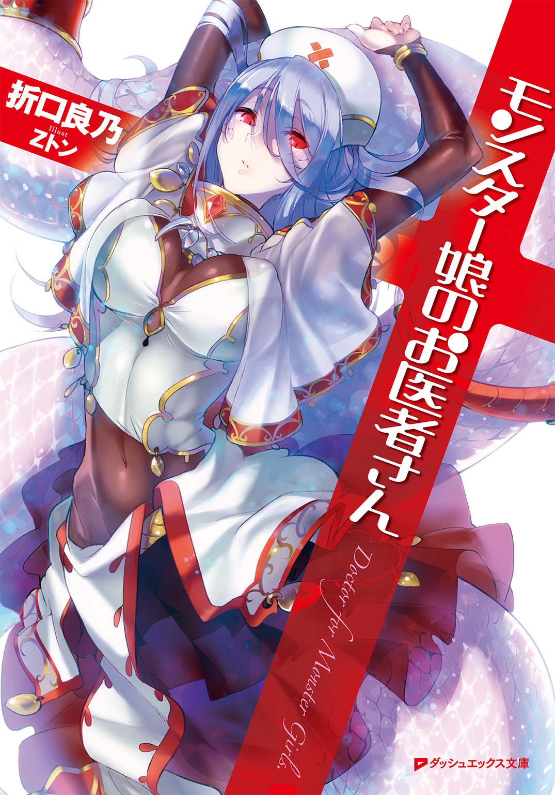
この本は縦書きでレイアウトされています。
また、ご覧になる機種により、表示の差が認められることがあります。
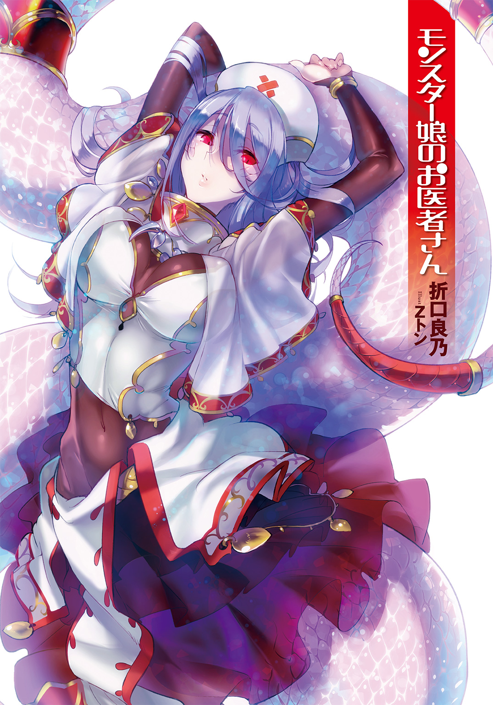
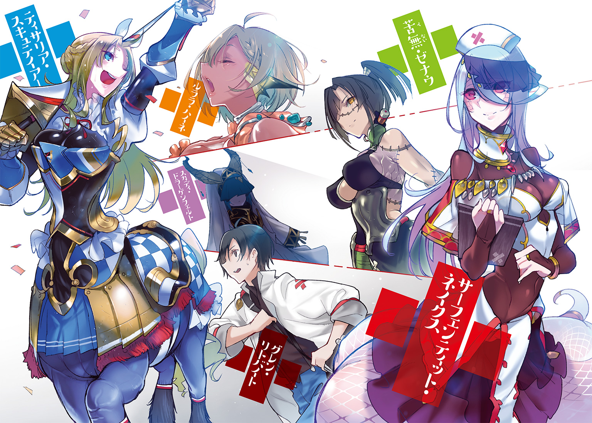
 ダッシュエックス文庫DIGITAL
ダッシュエックス文庫DIGITAL
モンスター娘のお医者さん
折口 良乃
症例１ 闘技場のケンタウロス
「あのぉ～、やっぱり、するんでしょうか～？」
狭い部屋であった。
厚布で仕切られた部屋は、白を基調とした空間だ。シーツやベッドなどがきちんと用意され、清潔感にあふれた部屋。
そんな場所で、二人の男女が向かい合っていた。
女性は、すでに上半身の衣服を脱いでいた。身に着けているのは牛革で作られた下着だけである。豊満なその胸を両手で覆い隠す仕草。女性の美しい容姿もあって、狭い部屋の中にはいかにも怪しげな雰囲気が漂っていた。
不安そうな面持ちの女性に、向かい合う男は優しく声をかける。
「はい、よろしくお願いします」
「でもぉ～、やっぱり恥ずかしいというか～」
女性は間延びする喋り方だが、照れている様子がありありと感じられる。
「ですが奥さん、皆やっていることですから」
「けれど～、私には主人が～」
「きちんと終えればご主人も心配なさいませんよ」
女性はしばらく考えている様子だったが、やがて意を決したように、胸を隠す腕を下ろした。うつむく表情はどこか恐れのようなものを感じさせる。
「あの、できれば優しく～」
「はい、大丈夫です。痛くしませんよ」
男の態度はあくまで温和であった。しかし、その手はまっすぐ女性の豊満な乳房へと伸びていく。
ずっしりとした重量感を持つ胸を、男は下から持ち上げるように触っていった。
「んん～......ッ！」
「あ、い、痛かったですか!?」
「だ、大丈夫です～......ちょっと、びっくりして～」
「じゃあ、続けますね」
男は真剣な表情で、女性の乳房を揉みしだいていく。
「ん、あ、そこ、痛ッ......！」
「ごめんなさい、ちょっと我慢してくださいね」
「んぅ......あ、はン......！」
喘ぎ声に似た声は、快感で声が漏れているようにも、逆に痛みを耐えているようにも聞こえてくる。男性の手はさらに胸に触れていき、女性の反応を確かめているようだった。
「ご、ごめんなさいごめんなさいっ。じゃあ、えっとここは、痛いですか？」
謝りつつも、男の手は止まらない。視線も同様で、うろたえつつもその目は女性の観察を怠ってはいなかった。
「あ、だめ、そこ、はぁァンっ......！」
口元を押さえ、女性は声を必死で耐える。
男は、その様子をつぶさに観察している。
やがて、一通りの観察を終えると、彼は胸から手を離した。牛革で作られた上質の下着は、もともと小さめのためかズレてしまい、乳房の先端までもが見えそうになっている。
息も荒いまま、女性は服の乱れを直す。下着の上から簡素な木綿の服を羽織るが、頰の紅潮はそのままだ。部屋の中の怪しい雰囲気は止まらない。
「それでは......」
男は、さらに視線を移す。
観察眼の向かう先は、女性の顔。亜麻色の髪の隙間から、大きく湾曲した角と、先端のとがった牛のような耳がついていた。
「次は、耳を」
「み、耳～ですか～。でも、あの～胸はもういいんですかぁ～？」
「はい、ありがとうございます。次は耳を見せてもらえたら」
「耳～は～、でも、ちょっと敏感でぇ～」
不安そうに視線をそらす女性。
そんな彼女の不安と呼応するかのように、彼女の耳がぴくぴくと跳ねる。
彼女の耳は、血管さえ見えそうな薄い皮膚であった。牛の耳と酷似しており、彼女が人間ではないことを如実に示していた。
「それに～、私には主人が～」
「ですがここでちゃんとしておいたほうが、ご主人も安心されると思いますよ」
「うう～」
若妻はしばらく、耳をぴくぴく震わせて逡巡していた。
が――やがて意を決したのか、すっとその頭を男のほうに向けた。湾曲した角とともに、よく動く耳が男の前に差し出される。
「お、お願いします～」
「はい、では失礼します......」
男のほうも言葉遣いは丁寧だが、緊張している様子がうかがえた。胸を触る以上にこわばった顔で、女性の耳に触れる。
「んんんうっッ！」
悲鳴のような声が上がる。
胸を触ったときとはくらべものにならない声に、思わず男のほうも手を放してしまう。
「ご、ごめんなさい、大丈夫ですかっ」
「いえ～、その～、ちょっと刺激がぁ～、強くてぇ～」
「必要なことなんです。続けても？」
「が、頑張りますぅ～」
男は再び、耳に触れる。
「ん......ンっ......！」
血管さえ見えそうな牛の耳に、男はじっと顔を近づけて観察した。先ほどから男のほうは、女性の体には触れるものの、やることといえば真摯な瞳で女性の反応を見つめるばかりである。
「あ......んんッ！」
「い、痛かったら言ってくださいね」
「痛いわけでは......ないんですけれど～......あッ、はッあ、ん......！ あ、ごめんなさい、あなたぁ～......」
なにに対しての謝罪なのかは、おそらく口にした女性もわかってはいないと思われた。
この場にいない夫への言葉を口にする女性。しかし男はそれをあえて無視するかのように、耳の観察を続けていく。上下に引っ張ったり、光に透かしてみるといったその様子は、はた目から見てもなんの行為かわかりづらい。
「ん、ん、んんン――――ッ！」
「す、すみません、ごめんなさい、もう少しで終わりますから」
「も、もうダメ......私......私、もう――――ッ！」
やがて。
「んんんんんんンンンン――――――ッ！」
女性の体が、大きくはねた。肩がびくびくと痙攣し、漏れ出る吐息は必死に手で押さえつけている。
「だ、大丈夫ですかッ......」
女性の大きな反応に、さすがに男も焦った様子であった。
女性はしばらく肩で息をしていたが、やがてうるんだ瞳で男のほうを見つめる。上目づかいのその視線は、男ならば誰でもこみ上げるものがあると思わせた。
「だ、大丈夫です～......ええと、それで」
「ああ、はい。ありがとうございました。痛みの原因はわかりましたよ」
「そうですか～、それは良かったです～、ですが、あの～」
ちら、と男のほうを見て。
「お医者様なのですから～、診察はもっと堂々としてもらえませんか～？ そんなにうろたえられると、こっちまで恥ずかしくなってしまいます～」
ぐさりとくる指摘に、男――グレン・リトバイトは。
「......面目次第もありません」
難しい顔でうなり、頭を下げるしかないのだった。
ここは魔族専門の診察室。
人間ではない相手を専門に診る医者、グレン・リトバイトの職場であり、グレンは至極真面目に、自らの職務と向き合っていたのだった。
胸が張って、痛む。
日によっては歩けないほどの激痛になる。
そんな疾患を抱えて、ミノタウロス族の若妻、シルシャ・テシウスが診療所にやってきたのは、そろそろ一日の外来診療を終えようかという時間であった。
ミノタウロスは、牛に似た特徴を多く持つ魔族である。男性は頭部そのものが牛に酷似しており、総じて長身かつ筋骨隆々な肉体を持つ。女性は顔も人間によく似ているが、角と耳は牛にそっくりであり、また乳房が大きく発達する者が多いといわれる。
グレンは患者の胸と耳を重点的に観察した。胸の触診において、しこりや腫瘍はないと判断できた。一方で、耳には赤みがさし、全体がわずかに腫れたように膨らんでいた。耳が敏感であったのは、この腫れが原因と思われる。
ミノタウロスの女性の耳が赤くなり膨らむのは、一つの兆候を示していた。
つまり――。
「ご懐妊です」
グレンの助手の静かな言葉に、テシウス夫婦の目が点に変わる。
痛みを抱えてやってきた妻と、なにか悪い病気なのではないかと疑心暗鬼になっていた夫。彼らにもたらされたのは、新婚の二人にふさわしい朗報なのだった。
「胸の痛みは妊娠の兆候です。おめでとうございます」
助手サーフェンティットは、微笑みでもって祝福する。
白い肌と赤い瞳から、初対面の相手にはどこか冷たい印象を抱かせるサーフェンティット・ネイクスであるが、穏やかな笑顔を見れば、それが誤解だということはすぐに理解できる。
ラミア族の優秀な助手。グレンの補佐として雑事をこなす彼女は、白い尻尾を揺らしながら夫婦へと語りかけていた。
「経過の観察は必要ですが、胸の痛みはじきに治まります。どうしても痛みが我慢できない時は、こちらの痛み止めの薬草を煎じてお飲みください」
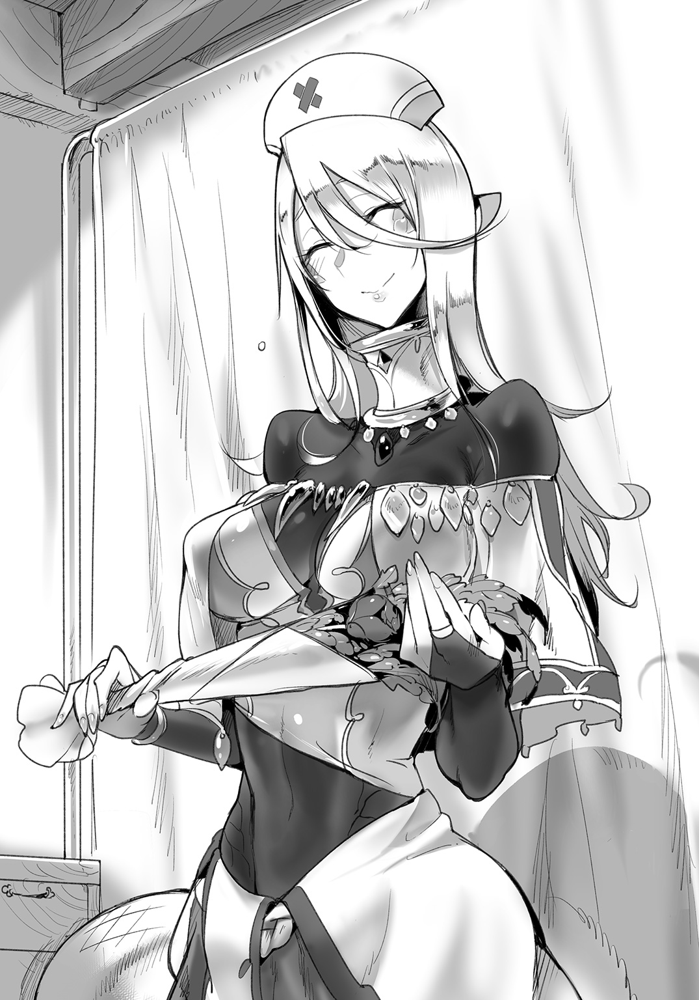
布袋に包まれた薬草は、農園のハーブをサーフェンティットが調合したものである。薬学に精通した彼女は、診療所における施薬も担当していた。
テシウス夫妻は聞いているのかいないのか、抱き合って喜びをわかちあっている。グレンとしても、病気の宣告をせずに済んだのは嬉しいことだった。
薬を受け取って、診療所を出ていく夫妻を、グレンとサーフェンティットは見送った。ミノタウロスの若夫婦は、妊娠という吉報でもって、最後まで笑顔でいた。
「札をかけ替えてきますね、先生」
サーフェンティットがそう言って、玄関口の札を裏返して、『休診』とする。外来の患者もなく、今日の仕事は終わりだった。
グレンは診療所内の片付けに入る。カーテンで仕切っているが、診療所はそこそこの広さだ。まして医療に携わる場所なので、掃除や消毒は重要な作業であった。はっきり言って、二人だけでは手が回らない。
そこで。
「かたづけー」「おかたづけー」
てこてこと床を駆けるのは、診療所の手伝い妖精だった。
ミルク一杯を一日の報酬として、診療所で雇っている妖精たちである。グレンとサーフェンティットだけではどうしても手が足りないため、雑務のために雇用していた。直接、医療行為の手伝いをしてはもらえないが、雑用係としては万能なので重宝している。
夫妻を見送ってから、サーフェンティットは一つため息をついた。一日の業務が終わったことに安堵しているのだろうか。
助手の彼女は、白い鱗を持つ魔族――ラミアの一族である。
下半身は艶美な輝きを持ち、蛇の尾によく似ている。アルビノの彼女は肌が白くて鱗があり、ルビーのような赤い瞳を持っていた。銀色の髪と相まって神秘的な容姿であるが、診療所という場所では彼女の白皙の美貌はむしろ適材適所だと思えた。
特に、下半身の白い鱗は、その奥に桃色とも紫色ともつかない、薄い色を見せている。怪しい色合いが、またさらにサーフェンティットの神秘性を深めているのだった。
診療所を開いてからずっと、彼女はグレンの助手として尽力してくれている。グレンには欠かせない人材であった。
「お疲れ様です、先生」
「あ、うん......」
ねぎらう言葉に棘があると、グレンは思った。
サーフェンティットも片づけを始め、その蛇の下半身で薬品や書類を棚へと収めていく。その手際はさすがであり、彼女なしでは診療所の運営はままならない――のだが。
サーフェンティットの赤い瞳は、グレンではなく、明後日のほうを見つめている。
付き合いの長いグレンは、彼女の不機嫌をすぐに感じた。
「あの......サーフェンティット、どうかした？」
「いいえ先生。別に、特には」
グレンが手にしていたハーブの束を、彼女は尻尾をしゅるしゅると伸ばして奪い取る。彼女が怒っているのは明らかであった。
「でも」
「怒っていませんよ。ええ、全然怒ってなんていませんとも」
透き通るような銀の髪。彼女の顔がこちらを向いた。赤く鮮烈な瞳は、銀の髪を透過してこちらを射抜くような迫力がある。
「ええ......先生。診察室から男女のまぐわいのような嬌声が聞こえてきて、診察とはいえ新妻さんの胸を触り、あまつさえグレン先生が情けない態度で患者さんと接していたとしても、私が怒るような理由はありません。ただただ、今後の診療所の行く末を心配しているだけです」
「それは、ええと、ごめんなさい......」
「謝るくらいでしたらもっとしっかりなさってください」
サーフェンティットの目は冷たい。
全て治療であり、やましいことはなにもないグレンなのだが――。
「まったく、こんなことでは、せっかくあのタコ女......いえ、クトゥリフ様から独立した意味がありません。最初こそクトゥリフ様の力を借りましたが、いまではここはグレン先生の診療所です。皆から信頼される医者にならなければならないこと、よく自覚なさってください」
「そ、そうだね。本当にごめんよ」
今でこそ、医者と助手という立場ではあるが。
本来は二人とも、アカデミーの学生であった。医学の師クトゥリフ・スキュルに師事、二人ともそれぞれの分野で好成績を収めていた。リンド・ヴルムの街で診療所を開くことになったのも、師匠であるクトゥリフの力が大きい。
サーフェンティットのほうが先にクトゥリフのほうに師事していたため、グレンの姉弟子という立場になる。一緒に診療所を運営することになっても、やはり力関係はなかなか変わることはなく、グレンはサーフェンティットに説教をされることしばしばであった。
「人間のお立場から、魔族を診れる人は、グレン先生以外にはいないのですよ」
「うん......わかってるよ、頑張るよ」
グレンは頷いた。年齢は十七歳であるが、気弱な性格から、さらに年下に見られることも少なくない彼だが――その経歴は異例である。
大陸東端、人間領の主都の出身でありながら、魔族に関して興味を持ち、その並々ならぬ情熱でもって魔族のアカデミーに留学。医学の権威クトゥリフ・スキュルに師事した。大陸中から天才や才媛が集まるクトゥリフの弟子たちの中でも異例の成績を見せる。
サーフェンティットも薬学に関しては天才と言っていい成績を誇っていたのだが、グレン・リトバイトは頭一つとびぬけていた。
そもそも魔族は、多様な形態を持ち、その生態も千差万別である。魔族というくくりにはなっているが、同じ魔族であっても、ラミアとミノタウロスでは別種と言ってもいいほどに体のつくりも、病の種類も違う。
人間という一種族を診察するのにも膨大な知識がいるというのに、グレンは多種多様な魔族たちを診察し、必要であれば治療、手術する技術を備えている。
魔族と人間が共存する街、このリンド・ヴルムにおいて、なくてはならない人材と言っていいのだが――。
「次からは、もっとちゃんとするから」
「当然です。明日は闘技場の健康診断ですよ。クトゥリフ様から押しつけられ......いえ、任せてくださった大仕事なんですから、なんとしてもやり遂げないと」
「そうだった......うん、しっかりやるから」
いかんせん、グレン自身は人生経験の薄い若輩者。
助手のサーフェンティットが気を揉むのも当然と思われるほど、おどおどとした頼りなさそうな男であった。
実際、優秀であり、開業してから幾度となく街に住む魔族たちの相談を受け、疾患を診てきたのだが――その事実を、グレン本人が受け止めていないというのが最大の問題なのであった。
「それと、グレン先生」
「うん」
「何度も言っていますが、私のことはサーフェンティットではなく......アカデミー時代のようにサーフェと呼んでください」
サーフェの照れ隠しなのかなんなのか、尻尾がぶんぶんと左右に触れる。
かつてはそのように呼びあっていたのだが、診療所を開業してからは、医者と助手という立場を明確にするため、堅苦しい呼び方を使っていた。しかし、サーフェンティットにとってはずっとそれが不満なのだ。
結局、今日怒っているのも、呼び方が気に入らないことが第一であると思われた。
――その割には、彼女は彼女で『先生』という呼び方を崩さない。それはそれで公平ではないと感じるグレンであった。年上の彼女に先生と呼ばれてしまうのもくすぐったいのだが、彼女は改める様子はないのだった。
「わかったよ、サーフェ」
「はい。それでは明日の準備をいたしましょう、グレン先生」
やっと正面からグレンの顔を見て、ラミア族の優秀な助手は微笑んだ。笑顔はまだ固いが、それでも先ほどよりは柔らかくなっている。
「じゅんびー」「おてつだいー」「ミルクまだー？」
妖精たちが薄い羽でぱたぱたと飛び回ってくる。彼女たちは格安の報酬で雇えるが、その分雇用契約には厳格だ。勤務時間は守らないと後でたっぷりと怒られてしまう。それが手伝い妖精というものだった。
「ミルクは用意してありますよ。それでは皆さん、もう一働きです」
「はーい」
妖精たちに交じり、グレンも声を上げた。
魔族を診れるものが少ないこの街で、リトバイト診療所は今日も多忙なのであった。
かつて、百年の長きにわたる、大きな戦争があった。
大陸の中心を遮るヴィヴル山脈を境にして、人間と魔族が戦争を始めたのだ。
数と技術、そして統率のとれた軍隊でもって戦う人間。
数では劣るが、個々の能力で人間を圧倒し、対応のできない奇策でもって迎え撃つ魔族。
何故、戦争が始まったのか。両者の諍いの原因は、歴史上の混乱の中に埋没してしまった。もっともらしい説はいくつもあるが、どれも確証はない。ただあったのは、戦いが戦いを生むような、連鎖的な禍根ばかり。
戦争を始めた当初は、平原でもって大軍勢が相対するような、大きな戦もあったという。
しかし、長く続く戦争は、生きている者たちから戦う理由を徐々に奪い取っていた。肉親を殺されたものは恨みを残すが、次第に戦争の規模が小さくなるにつれ、そのような者は減っていく。逆に、両軍の将や君主は戦争が続くほどに自分たちの財が失われていくことを恐れた。
長い戦争も、終盤になると死者もでないような、僻地での小競り合いが散見されるだけになっていった。
やがて、人間と魔族は、互いに領土を侵さないことを条件として、停戦の合意を結んだ。それが十年前である。
「まあ......互いに、戦争を続けるメリットはなかったんだよね」
グレンは、馬車に揺られながら、街の様子を眺めていく。
馬車から見えるのは、市場の風景だ。人間の果実商が、ラミアの子供たちにリンゴを売っている。若い主婦らしき女性を捕まえて商品を売り込んでいるのは、包丁の切れ味をうたうサイクロプスの職人であった。
魔族と人間が共存するのが、グレンが医者として勤める街リンド・ヴルム。
ヴィヴル山脈の麓にある、かつては人間領の要塞都市として繁栄した街であった。停戦を結んだ今でも、魔族は魔族領に、人間は人間領に住むのが基本である。両者が当たり前のように共存している街は他にないと思われた。
「どうしたのですか、急に」
「ううん、なんでもない。平和になって、戦争が終わって、いろんな人たちが一緒に暮らすようになったなって」
魔族専門の医師として、素直に平和が喜ばしいグレンだった。
なにしろ、グレンが今乗っている馬車とて、その平和の象徴のようなものだ。馬車の車体には槍が交差する紋章が描かれている。リンド・ヴルムの街の運送業『スキュテイアー運送』の紋章である。
スキュテイアー家といえば、ケンタウロスの名門。
つまり、グレンの乗っているのは正確には、半人半馬のケンタウロスが牽引する『ケンタウロス車』とでもいうべきものなのだ。
「お医者様、俺っちの車の乗り心地はどうですかい！」
「うん。快適です。ありがとう」
「そうでしょう、でしょうとも！」
馬車を直接曳くケンタウロスの車夫が、がはははと豪快に笑う。
共存とはこういうことだ、とグレンは思う。かつては傭兵として名高く、草原を駆け抜けていたケンタウロスが、今では馬車の車夫だ。運送業という転職先は、彼らにも天職だろう。
「全てが、丸く収まったわけではありませんよ、グレン先生」
サーフェは、馬車から顔を出した。
「見えてきました、闘技場です」
「闘技場か......戦争のときは、魔族の捕虜の処刑に使われたんだっけ」
「その通りです。娯楽と処刑を兼ね、捕虜を動物、あるいは同族と殺し合わせた場所です。人間領の最前線要塞都市、リンド・ヴルムだからこそ起きたことですね」
サーフェはどこか悲しそうな顔をする。その場合の捕虜とは魔族であり、サーフェの同族もその中にいたということになる。
「ですが、戦争が終わって......闘技場はおろか、リンド・ヴルムそのものが存在意義を問われる事態になりました」
戦争が終われば、戦争のための施設は用済みになる。
リンド・ヴルムも、駐屯していた兵たちが去り、窮地に陥ったのは街にいた商人たちだ。兵たちに日用品や食料、器を売ったりする者が大勢いたのだ。それに、闘技場の捕虜たちも困ったという。兵士であった彼らは、魔族領に戻っても職がないのだ。
そこに現れたのが、『竜闘女』とあだ名される、一人のドラゴンであった。
彼女は、役目を終えつつあったリンド・ヴルムを再建した。魔族を多く移住させ、商人たちの生活を守りつつ、人口を維持した。さまざまな生態の魔族たちのために、都市計画を作りあげ、見事に魔族にも暮らしやすい街を実現した。
極めつけは闘技場である。
人間、魔族双方から、闘士を募り、試合における細則を制定した。さらに厳重な取り決めのもと、賭博も行えるようにした。処刑のための闘技場が、今では武人たちがその技を競い、観客に娯楽を提供するための場となっているのだ。
特に上位の闘士が出場する試合は、なかなか席が取れないことで有名である。迫力のある力と技のぶつかりあいが見れると評判なのだ。
「この十年、『竜闘女』さまのおかげで、リンド・ヴルムは発展しました。傭兵の多くは、闘技場の闘士に転身したと聞きます。戦争が終わり、兵士としての職を失っても、リンド・ヴルムでは闘士の仕事がある。本物の武器を使わないから死ぬ危険も少ない」
「うん、知ってるよ......それがどうしたの？」
「急速な発展のために、追いついていない部分があると言いたいのです......グレン先生の仕事が増えますね」
ため息交じりのサーフェに、グレンも苦笑した。
戦争が終わり、魔族が多く移住したリンド・ヴルムだが、魔族の医者までが増えたわけではない。リンド・ヴルムで魔族を診療できるのは、二カ所だけ。
グレンの師匠、クトゥリフが経営するリンド・ヴルム中央病院。
そして、グレンの経営するリトバイト診療所である。
中央病院のほうが設備もそろっており、難しい手術もこなせるが、規模が大きいために院長のクトゥリフも含め、職員がみな多忙である。患者の待ち時間も長いと聞く。それゆえ、『大病院に行くほどでもないな』という疾患を抱えた者は、皆診療所にやってくるのだ。
診療所とて暇なわけではないが、足が不調だと言いながら世間話を目的に訪れる老オーガに付き合うくらいの時間は捻出できていた。
が――そんな状況のため、たまに師クトゥリフから仕事を振られることがある。
闘技場の試合に出場する闘士たち。彼らの定期的な健康診断も、クトゥリフが出向けないためにグレンに振られた仕事の一つだった。
「診療所を休診にしてまで、出張の健康診断だなんて......あのタコ女、こちらの都合も知らずに......」
「まあそう言わないでよ、サーフェ。クトゥリフ先生も忙しいんだよ」
闘技場の闘士たちは、試合での怪我などしょっちゅうだ。
試合中の事故で命を落とすことも、まれにあるという。そういう事態を防ぐためにも、魔族を診ることのできる医者の手が必要なのだ。
「わかっていますけれど」
サーフェは納得いかない表情だった。サーフェもクトゥリフの優秀な弟子である――のだが、その実両者の折り合いは良くない。
喧嘩するほど仲がいいというヤツだと、グレンはのんきに考えていた。
「ですが、引き受けた以上はやらざるを得ません。今日の健康診断は、闘技場の第三、第四階位の魔族闘士たちが中心となります。事前に頂いた書類によれば、ケンタウロスの種族が多いようですね」
「ケンタウロスか......」
グレンは、汗だくになりながら車を曳いてくれている車夫を見る。
彼らは生まれながらの騎馬兵だ。優れた騎馬兵は人馬一つになるというが、それはあくまで人間の話。ケンタウロス族は生まれながらに馬と同じ速度で走り、わずかな調練で見事なまでに統率をとってしまう。
先の戦争の際も、広い平野で槍を片手に突撃してくるケンタウロスはなにより脅威だったという。今でこそ『スキュテイアー運送』に代表される輸送業についているが、その本質は武人的だと聞く。
戦いに生きる彼らだから、闘技場の闘士に転身した者も多かっただろう。
「体長、体重の計測のほか、問診を行います。よろしいですか？」
「うん。大丈夫。すぐに治療が必要な人はいないんだよね？」
「そういった闘士は、中央病院に回されているようですね。問診で、表に現れていない怪我や病の兆候を発見することが私たちの仕事かと」
冷静な助手の顔で、サーフェは告げた。
事前に病気を見つけ、早期に適切な処理をする。それも医者の仕事だが、当然知識と技術が必要だ。もし重篤な病の兆候を見逃せばどうなるか。その患者の人生を左右しかねない事態になってしまう。
自分とサーフェならば可能だとは思っても――重圧を感じずにはいられないグレンである。
「お医者様、そろそろ着きますぜ。闘技場の正門のほうでよろしいんで？」
「いえ、裏にお願いいたします」
「ああ、関係者口でございますな。承知いたしました」
正門は観客が多くなかなか闘士たちの控室までには入れない。グレンは書類や、健康診断に必要な多くの道具をまとめ、馬車を降りる準備をした。
診療所からここまで、かなりの距離があったはずだが、ケンタウロスの車夫は汗をかきつつもさわやかな笑顔を浮かべていた。長距離を走るという彼らのスタミナ、持久力には驚嘆する他ない。
やがて、馬車は闘技場の裏手に回り、停車する。グレンは先に馬車を降りて、それから車を降りるサーフェに手を貸す。車の段差も、蛇の下半身を持つサーフェはするすると滑るように降りてしまうので、手を貸す必要はあまりないのだが。
それでも、手をつないだ時のサーフェはどこか嬉しそうだ。
「今日は闘士たちの健康診断っつーことで」
馬車の後方に積んでいた大きな荷物は、ケンタウロスの車夫が下ろしてくれた。壊れやすい道具もあるのであまり他人に任せたくはなかったのだが、彼は意外なほど丁寧に荷物を運んでくれた。
「ええ、そうです」
「そしたらウチの姫様にも会うかもしれませんな。そん時ゃよろしくお願いします」
診察のための道具を詰め込んだ鞄を下ろしながら、屈強なケンタウロスの車夫はそう言った。
姫様？
ケンタウロスの王族がいるなどという話は寡聞にして聞かないグレンではあったが、詳細を聞き返す前に、車夫は車を曳いてすぐに街道へと行ってしまった。
「なんのことなんだろ......」
グレンが疑問に思う前に、彼の手はサーフェの長い尾につかまってしまう。「行きますよ」と急かす彼女に引きずられるように、グレンは闘技場へと向かうのだった。
定期健診の場所は、闘士たちが訓練に使う裏手の訓練場であった。
雑草を引き抜き、地面を均した訓練場には、訓練のための模擬標的などが置かれていた。そこに、都合五十人ほどの闘士たちが集まっている。
皆、闘技場の中堅に位置する闘士たちだ。新人のような無様な怪我はしないが、激しい戦いを日々こなしているはずだった。簡素なつくりの鎧を身に着けている者が多い。実戦ではなく、闘技場の試合に使う鎧だろう。試合用の木製の武器を持っている者もいる。
魔族の種類はまちまちだった。が、事前の書類の通り、ケンタウロスがやはり多いようだ。上半身は人間でありながら、馬の下半身を持つ独特の魔族。その形態から、背は当然ながら人間より高い。グレンが見上げなければならないほどだ。
全長はラミアのほうが長いだろうが、とぐろを巻いたり、長い尾を折りたたむことが多いラミアよりも大柄に見えた。サーフェなどは、肩が細いからなおさら小柄に見えてしまう。
精強なケンタウロスの闘士たちは、どこか張りつめた雰囲気をまとっていた。そんな彼らの中で、ひときわ目立つ姿があった。
「いらっしゃいましたわね！」
よく通る声をあげ、一人の女性が進み出た。
豊かな金髪を団子状にまとめた、さわやかな印象の女性であった。ケンタウロスの中でも大型な種族のようで、グレンが顔を上げないと目線が合わない。ターコイズを思わせる瞳は、まっすぐグレンを見つめていた。
身に着けた鎧は軽装だが、チェック模様の入ったそれは他の闘士たちとは違う、上等な拵えであった。胸の紋章一つを見ても、彼女が装飾に金をかけられる身分であることを示している。独特な意匠の鎧は、闘技場でさぞ目立つだろう。
下半身はケンタウロスのもの。しかし、黒い毛並みは丁寧にブラッシングされていることがグレンでもわかった。鎧を身に着けているからには闘士なのだろうが、まとめた金髪といい、手入れの怠っていない毛並みといい、身だしなみへの配慮がしっかりなされている。まるで舞台俳優のようだ。
「ようこそ、リンド・ヴルム大闘技場へ！ わたくしはこの闘技場の第三階位で闘っております、ティサリア・スキュテイアーですわ！ この度は多忙の中、クトゥリフ先生の代わりに健康診断を引き受けてくださって感謝して......あら、意外と若い先生ですのね？」
金髪のケンタウロス――ティサリアは、よく響く声で挨拶をしてくれた。
大仰な動作といい、響く声といい、やはり闘士というより舞台俳優のような印象を受けてしまう。
「は、初めまして。皆さんを診させていただくグレン・リトバイトです。こちらは助手の」
「サーフェンティット・ネイクスです」
蛇の下半身をくねらせて、サーフェも一礼をする。
「クトゥリフ先生のお弟子さんとは聞いてましたけれど、こんなにお若いだなんて。ちなみにおいくつ？」
「十七です」
わあ、とかほう、とか歓声があがった。
若い医者など胡乱がられるかと思ったが、闘士たちにとってみればそうでもないらしく、むしろ物珍しさでじろじろ遠慮のない視線が向けられる。
「あなたたち、失礼ですわよ！」
ティサリアが言うと、陽気な闘士たちははーいと素直に返事をした。
「まったく......すみませんわお医者様。人間なのに魔族を診てくださる先生が珍しいのだと思います」
「ティサリアさんは、闘士としての経歴が長いのですか？」
そう尋ねたのはサーフェであった。
ティサリアの振る舞いを見る限り、闘士たちの中でもリーダーのような役割を担っているように見える。しかし、ティサリアは首を振って否定した。
「いいえ、わたくし、まだ第三階位ですもの。闘士としては中堅どころですわ」
「ですが......それにしては、随分と皆さんから、敬意のようなものを感じるのですが」
「それはもちろん、わたくしはこういう者ですから」
ティサリアは胸を張ってみせる。ケンタウロスには胸が大きいものが多いと聞いていたが、ティサリアのそれは人馬の平均からしても大きいようだった。まして、グレンの身長だと、ちょうど目の高さにティサリアの重量感ある胸がくる。
いやでも目が吸い込まれた。
「あら」
その視線に気づいたのか、ティサリアはにま、と微笑んだ。
「あらあら、まあ！ まあ、わたくしの女神のごとき肉体に見惚れるのも仕方ないこととは思いますけれど！」
「い、いえ違います、そういうつもりじゃ！」
必死で否定するが、視線が一点に集中していたのは事実だ。隣のサーフェが、蛇の瞳で睨んでくるのも厳しい。
「けれど違いますわ、見てほしいのはこちら」
胸甲に描かれたエンブレムを見せつける。そこには、見覚えのある二本の槍が交差する紋章が描かれていた。先ほどグレンたちを闘技場まで運んでくれたケンタウロス車にも、同じ紋章が描かれていた。
「それは確か......では、ティサリアさんは」
「そう！ わたくしこそ、この街の運送を一手に担う。小包から人まで、がモットー。なんでも運ぶ『スキュテイアー運送』の代表――――の、一人娘がわたくしですわ。尊敬してくださってもよろしくてよ、おーほっほっほ！」
口に手を当てて高笑い。そんな仕草がよく似合う。
グレンは納得がいった。車夫が言っていた『姫』とは、彼女のことだったのだ。
ケンタウロスの名門、スキュテイアーの一族。戦争の際も百戦錬磨の活躍だったと聞く。今でこそ、リンド・ヴルムの街で運送業を営んでいるが、その業務だって多岐にわたる。簡単な宅配便から、大勢の人や大量の物資を一気に運ぶキャラバンまで、様々な事業に関わっているはずだった。
そんな大商会の一人娘。
なるほど、『姫』と呼ばれるのもわかる。王族というわけではないにせよ、この街のケンタウロスたちにとっては、まさしく姫に相当する人物がティサリアだということだ。
豊満な胸を張って笑い声をあげる彼女には、確かに有無を言わせず他人を従わせてしまうような雰囲気がある。闘技場のまとめ役のようになっているのも、彼女の人柄ゆえだろうか。
「さて、挨拶が長くなってしまいましたけれど、そろそろ健康診断のほうをお願いいたしますわ。ケイ！ ローナ！」
「はっ」「ここに、お嬢様」
ティサリアの呼びかけで、二人の女性ケンタウロスが彼女のそばに侍る。
ティサリアの物ほど上等ではないが、二人ともやはり鎧と、胸のエンブレムが共通していた。察するに、彼女に仕える侍女兼護衛といったところだろうか。闘技場にいるのだから、彼女たちも闘士を兼ねているのかもしれない。
「いつもの通りでお願いしますわ。さ、先生はこちらに」
「は、はい」
先ほどまでの雑然とした雰囲気はどこへやら。
バラバラだった闘士たちは皆、ケイとローナ、二人のケンタウロスの指揮によってすでに整列していた。まるで訓練された兵士の如く。
「健康診断は何度も行っていますから、こちらも慣れたものですわ」
五十人はいる闘士たちに向け、短時間で号令をかけたティサリアは、なんでもないことのようにそう告げる。
「医療の腕は心配しておりませんわ。クトゥリフ様からの紹介ですもの。皆の健やかな試合のため、よろしくお願いいたします」
「......師のようにはいかないと思いますが、尽力します」
ティサリアは再び高笑いをしてから、自らも列に加わった。
蹄を鳴らして移動する彼女の肢体は、なるほど戦いに身を置いているものらしく、均整が取れている。人間と同じ上半身は、ほどよく鍛えているせいか姿勢が良い。黒い毛並みに覆われた下半身も、馬を知る者であれば惚れ惚れするような四肢をしていた。
「あんな人もいるんだね」
「そうですね。私も荒くれ者ばかりだと思っていました」
サーフェの言葉には遠慮がなかった。
しかし考えてみれば当然なのかもしれない。平和な今、闘技場とは殺し合いの場所ではなく、戦いの技を競う場所であり、観客の声援を集める場所だ。容姿の美しさと、闘いにおける技の美しさは、女性闘士にとっては両立させるべきものなのかもしれなかった。
「さあ、仕事開始ですよグレン先生。いつまでも胸に見惚れていないで、しっかりお願いいたします」
「み、見惚れてないっての」
反論の声は弱々しく。
グレンは蛇の一睨みで、たやすくそれ以上の反駁を封殺されてしまうのだった。
健康診断はつつがなく終わった。
すべてはまとめ役のティサリアと、彼女の侍従であるケイ、ローナ。三人のケンタウロスのおかげであった。整列し、淡々とグレンの診察を受ける闘士たちばかりだったので、グレンの仕事も実に円滑に進んだのだった。
闘士にケンタウロスが多い。つまりなんらかの形でスキュテイアー運送に関わっている者が多いのも、ティサリアが音頭をとることができる理由の一つなのだと思われた。
まあ、診察中に、
「お医者様は随分若いですけれど、わたくしのような人馬は好みかしら？」
などとティサリアが言いだす一幕もあったが。
「こ、好みというのは？」
「いえ、わたくしはスキュテイアー運送の跡取り。いずれはリンド・ヴルムのケンタウロスを率いて、商会の未来を担う者ですわ。そうなるとまず結婚と、子供を作ることが求められてしまいます。両親もお見合いに乗り気なのですが、紹介してもらったどの殿方もしっくりきませんの」
グレンは彼女に鎧を脱いでもらい、聴診器を当てる。薄着の上からとはいえ、彼女の豊満な胸に触れているわけだが、診察のためかティサリアのほうに気にした様子はない。
ただ、彼女のお喋りは止まらない。
「パートナーとして優秀な人材が欲しいのですわ。武を誇る名門スキュテイアーですが、いえ、屈強な殿方は好みではありませんの。わたくしはええと、そう、教養のほうがいささか不得手でして。そういったことを補ってくれる殿方がどこかにいらっしゃらないかと」
勉強がどうやら苦手らしい。グレンは脳裏に浮かんだ二文字を必死に飲み込んだ。下半身が馬だからといって、頭まで――などと考えるのは失礼極まりない。
「そう、たとえば、若いうちから魔族の診療までできるような、とても利発な殿方が」
流し目のティサリア。
会って一日たたない内に、どうやら見合い相手の候補に組み込まれてしまったらしい。むしろ今まで彼女のお気に召さなかった男のほうが気になるが。
「失礼いたします」
「きゃああああッ!?」
突然の悲鳴。
理由は明白だ。彼女の下半身に、いきなり蛇の尾が巻きついたためだ。突然の凶行にグレンも目を丸くする。犯人は言うまでもない。白い蛇鱗の持ち主は一人しかいない。
サーフェだ。
「ティサリアさん。胴回りの数字が先月よりもかなり増えていますね。失礼ですが減量をおススメします」
「大事な話をしていましたのに突然なんですの！ というか蛇の尻尾で測らないでくださる!? 測るのはこっち！ ケンタウロスの胴はこちらですわ！」
ティサリアは怒りつつも、律儀に上半身の腹部を示した。ちなみにケンタウロスには腹部が二カ所あるので、別にサーフェの計測も間違いということはない。
「看護師なのにそんなことも知りませんの!?」
「看護師ではなく薬師です」
「どうでもいいですわー！」
叫びながら、ティサリアは自分の服をめくった。露わになるのは、人の上半身と、馬の下半身のちょうど境だ。自分の腹を遠慮なく見せつけてくる彼女に、グレンも目のやり場に困る。
「ほうらご覧なさい蛇女！ この美麗なウエスト！ を！ 数字が増えているだなんて言わせませんわよ」
確かに日頃の鍛錬のせいか、ティサリアの腹部はかなり引き締まっていた。迫力ある胸と比較すると、なおさら彼女の肉体の曲線は際立つように思う。
「グレン先生はまだ医師として半人前。お見合いの話など三十年早いのです」
「そんなにかかったらおじさんになってるよ......」
「結婚と馬は早ければ早いほどいいのですわ！」
「それもどうなのかな......」
ともあれ。
ティサリアの診察の際に、斯様なやり取りがあったことを除けば、健康診断は順調に終わったといっていいだろう。
日が沈む前には、グレンもサーフェも、荷物の片づけや書類への記入を終えていた。どの闘士も、重い病気を疑われる所見は見当たらず、おおむね健康と言ってよかった。その一方で、治療中の怪我や病を持っている者も多い。それも闘技場の闘士ならではだろう。
できれば、試合を控えてほしい者も少なくない。
しかし、試合への出場と勝利が彼らの生活を支えていると思うと、少々の怪我で試合に出るなと言うことはできない。右前脚を捻ったケンタウロスがいたが、彼は明日もまた試合に出るという。
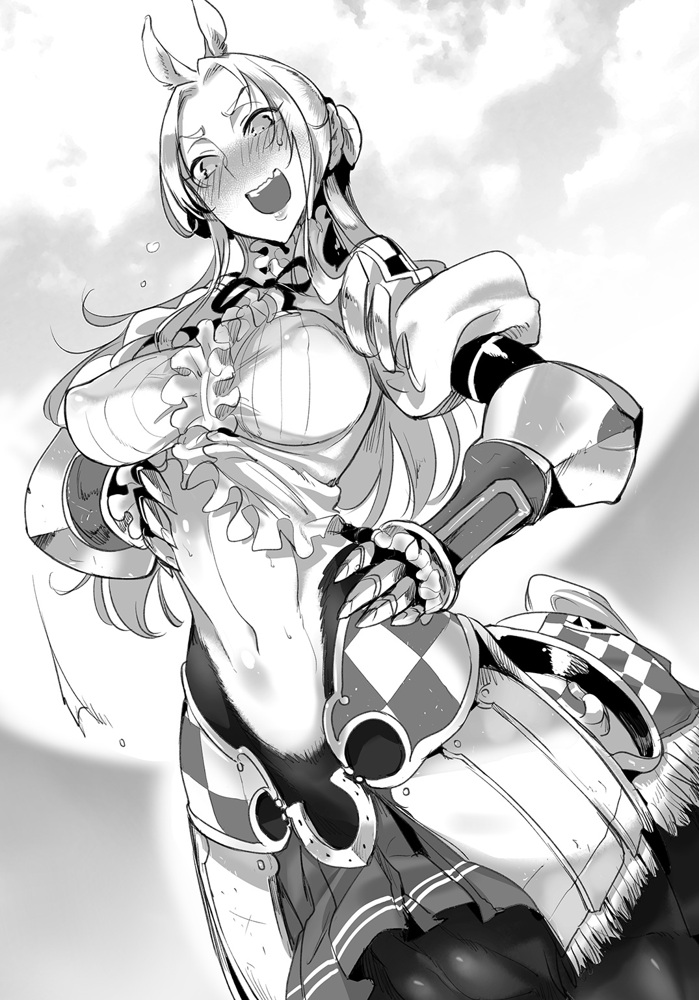
結局、簡単に膝を固定する処置だけで済ませてしまった。彼の怪我自体は大したものではないが、闘技場という場所柄、今後の試合で、一つの怪我がもっと大きな怪我につながる恐れは十分に存在するはずだった。
師クトゥリフは、先月まで健康診断を担当していた。記録を見る限り、クトゥリフは健康診断で過度な干渉をしていない。怪我には必要最低限の処置はしているものの、闘技場での試合を取りやめるよう言ったのは、わずか数例だった。どれも明らかに重篤な疾患を抱えた患者に対してである。
「僕も、倣うべきなのかな......」
クトゥリフの代理で来ている以上、それが筋だろうとグレンは考える。
「グレン先生、こちらは片づけ、終わりましたわ」
書類のまとめを頼んでいたサーフェがそう言ってくる。グレンも悩みつつも、診療所に戻るために荷を片づけたところだった。
「うん。ありがとう......ティサリアさんにも挨拶しておきたいけれど......」
ティサリア――あのスキュテイアーの姫は、用事があると言って闘技場へ入っていってしまった。グレンもさすがに、巨大な建築である闘技場まで入っていく勇気はなかった。
訓練場に残っている闘士はまばらだ。健康診断のために集まってくれた彼らも、試合の予定や訓練があるらしく、健診が終わった者から訓練場を後にした。
「いない者は仕方ありません。こちらの仕事は済んだことですし、一言誰かに告げていけばよろしいでしょう」
サーフェは辛辣だ。見合いの件を含め、先ほどティサリアとやりあったことが尾を引いているのだろうか。
しかしグレンも同意見である。ティサリアへの言伝を頼めばいいだけだ。先ほどの二人の侍従のような、ティサリアと親しい者がいればいいのだが。
「あの」
などと思った矢先。
声をかけてきたのは、向こうからだった。
「お医者様」「少しよろしいでしょうか？」
それぞれケイ、ローナと名乗った、二人のケンタウロス。
「あ、はい。お疲れ様でした。おかげさまで、健康診断は終わりました」
「お疲れ様でした」「お嬢様もお喜びです。ありがとうございました」
丁寧に頭を下げる。大商会の一人娘、ティサリア・スキュテイアーお付きの女従だけあって、その品格は並の従者とは違うようだった。
切りそろえられた髪や、栗毛の毛並みもよく似ている。どちらがケイでどちらがローナなのかはよくわからない。姉妹ではなさそうだが、雰囲気をあえて似せているようにも感じられる。
いまでこそ闘技場にふさわしい軽装の鎧姿であるが、侍従が着るエプロンドレスなどもきっと似合うと思われた。
「それで......お医者様」「僭越ながら、ご相談がございまして」
「相談、ですか？」
ケイとローナ、二人とも同時に頷く。
「お嬢様の診断はいかがでしたか？」「なにか病気などに罹られてはいませんか？」
「病気......ですか？」
グレンの見立てでは、ティサリアの診断にそのようなものはない。
現在、怪我もしていないようだし、病の潜伏を示すような所見もなにもなかった。もちろんグレンが未熟であり、なにか見落としがある可能性もゼロではないが――。
「ティサリア・スキュテイアーさんはいたって健康ですよ」
答えたのはサーフェだ。
「体重の大きな変動もありません。ご自身がおっしゃる通り、普段からよく運動し訓練し、健康的な生活をなさっているからかと思います。少なくとも、私たちの立場から見て病気を窺わせるようなことはなにもないですよ」
「そう......」「そう、ですか......」
ケイとローナは、明らかに落胆していた。目を伏せ、不安げに視線を揺らす。
確かに――ティサリアの所見に病気を示すようなことはなにもない。しかし、今のケイ、ローナの表情は、グレンにとってこれまで何度も見たものだった。重い病気に不安を抱える患者、あるいはその家族と同じ表情。
「なにか、心配事がありますか？」
そのままでは黙ってしまいそうな侍従の二人に、グレンは声をかけた。
「なんでも言ってください。たとえ体が健康であっても......自分や、自分の親しい人が『病気かもしれない』と不安になるような状況は、健康的とは言えないものです。ケイさん、ローナさん、お二人にとって、ティサリアさんは大事な人なんですよね」
「は、はい」「それはもちろん」
「では、なんでも話してください。その上で改めて、医者である僕が『病気ではない』とお伝えできれば、きっと安心できると思います」
ケイとローナは顔を見合わせた。
そして同時に、従者にこれほど慕われているティサリアのことを思う。まだ会って一日足らずだが、やはり彼女は人の上に立つ器を持っているのだろうか。
「では、お話しします......」
両者でうなずいてから、ティサリアのお付きは語りだす。
「実は最近、お嬢様が――」
月が見える。
リンド・ヴルムはヴィヴル山脈の山麓に位置する街だ。山からは冷たい風が流れ込み、たとえ昼は暖かくとも、夜の気温は驚くほど下がる。しかし、そんな冷たい空気の中、ヴィヴル山脈の峻険な山々と、美しい月が同時に見える光景は評判が高かった。
冷気で澄んだ月光の美しさは、大陸に名だたる景勝の一つと言われている。
いわく、竜の街の名月、黄金の輝きに劣らず。
リンド・ヴルムからは常に山々が見える。黄金に等しいとされる月の輝きも、街に住む者であれば誰でも楽しめる景色であった。
「まだ起きてらしたのですか」
診療所から月を眺めていたグレンの元へ、サーフェが声をかける。
「サーフェ......寝てていいよ。もうこんな時間だし」
「それはこちらのセリフです。もしやと思いこちらに来てみれば......なにをなさっておいでですか？ お体に障りますよ」
診療所には、当然ながらグレンとサーフェ、それぞれの寝室も併設されている。
簡素なつくりの寝室であるが、実は二人とも、あまり自室には戻らない。やり残した仕事があったり、あるいは考え事をしたりするときは、診療所の窓から月を眺めることが多い。
グレンの考え事は、サーフェにも察せられていたらしい。この辺りはさすが幼馴染みといったところだろうか。
そう。幼馴染みである。
グレンとサーフェンティットは、実はアカデミーで姉弟弟子となる前から、すでに面識があったのだ。年端もいかないような、子供の頃、一つ屋根の下で暮らしていたこともある。
その後、アカデミーで再会したとき、グレンはサーフェの変わりように驚いたことを覚えている。病弱な印象だったラミアの少女が、理知的な才媛に成長していたからだ。
「昼間のこと、ずっと気になってて」
「ティサリアさんのことですね」
「うん。ケイさんローナさん、本当に心配していたからさ。なにかできることはないかなって」
「できること、ですか」
お嬢様が、試合で勝てずにいるのです――。
ティサリアの侍女二人にそう相談され、グレンは難しい顔になってしまったのは言うまでもない。なにしろ、自信満々の態度を崩さなかったティサリアだ。
誰よりも調子がよさそうに高笑いしていた彼女が、まさか連敗中などとはにわかには信じがたいものがあった。しかし、ケイとローナの話では、ここ数カ月、ティサリアの勝率は目に見えて落ちているのだという。
しかし、ティサリアという闘士は、日々の訓練を決して欠かすことはない。また武門の一族に生まれただけあり、武芸の才能は誰が見ても際立つものを持っているという。そんな彼女が負け続きであるなど、なにか悪い病気ではないか、というのだ。
「私から言わせてもらえば、成績が落ち込むというのは誰にでもあることではないかと思うのですが。常勝の闘士など存在しません。不調は珍しいものではないでしょう......病が原因だと限らないのでは？」
「それなら、それでいいんだ」
そう、ただの不調ならば構わない。
だが、グレンが万が一、病を見落としているとしたら――それはとても恐ろしいことだ。潜伏した病を、兆候があったにもかかわらず見落としていたのならば。病の種類によってはティサリアの命に関わる。
命を守るのが、グレンの職務だ。
「そうじゃないのが、怖いんだ」
月を見上げながら、グレンはそう言った。
サーフェは心配性だなどと言うかと思ったが、彼女はただため息をつくだけだった。呆れているのかもしれない。それもやむを得ないか、などと思うグレンだったが。
「なにか一杯、お飲みになりますか、先生？」
「え......一杯って、お酒？」
「はい。もしご希望がないようでしたら、ハーブとリキュールを混ぜた薬酒をご用意いたします。弱いお酒ですから翌日には響きませんし、頭がすっきりすると思いますよ」
酒はあまり得意ではない。
しかし、無為に月を見上げてぼうっとするよりはいくらか頭には効くかもしれない。そう判断したグレンは、サーフェにお願いすることにした。
「では、しばしお待ちを」
そう言って、サーフェは診察室を出ていく。
グレンはその間も、考えていた。月明りを頼りに、手元の資料に目を凝らす。紙はまだまだ貴重だが、診療所では必需品であった。グレンが手にしているのは、師クトゥリフが引き継ぎの際にくれた健康診断の書類――つまり、先月までのティサリアを定期的に健診した、クトゥリフの所見である。
総括するならば、異常なし。
ティサリアに、病気を示す兆候は見られない。
クトゥリフの見立てであれば、まず間違っているとは思えない。なおかつ、グレンの診断結果とも一致するものだ。ティサリアに病はない。
加えて、かつて大きな病気や怪我をした記録もない。書類に特記されるようなことはなにもなく、今も過去も健康体と言って差し支えない。
けれど、一方で。
健康というものは、些細なことで左右されるものなのだ。ティサリアが不調というのは、付き従っているケイとローナの言葉だった。それは信頼してもいいのだろうと思う。
グレンは思う。
あるいは、医者では見逃してしまうような別の要因でもって、ティサリアは不調に陥っているのではないか？
それとも、資料に書かれていないようなこと、書くほどでもないことが原因だったりするのか――。
「書かれていないこと――ん？」
「お待たせしました」
なにか光明が見えた――そんな気がしたとき、グレンの目の前に差し出されたのは、赤く透き通るグラスであった。リンド・ヴルムで作っている高品質の作品。その中は氷と液体で満たされていた。
「さ、サーフェ......氷使ったの!? 解熱用のやつだよねそれ！」
「ちょっとですから問題ありません。それに、ヴィヴル山脈から採れますよ」
「そりゃそうだけど！ 山頂まで二日かけて往復しなきゃならないでしょ！」
診療所では、山脈の頂点から削り出した氷塊を、地下の氷室で保管していた。
もちろん治療に使うために、氷商から融通してもらっているものだ。必要となれば使うものではあるが、日常生活で気軽に使っていいものではない。ましてや酒のためになど。
「ハーブのリキュールと、氷の冷たさで考え事がはかどるかと。少しですよグレン先生、目くじらを立てないでください」
「でも......」
「召し上がれ」
満面の笑み。いや、流し目でこちらを見てくるサーフェは妖艶でさえある。どこか悪戯めいてはいるものの、彼女の気遣いは明らかであり、グレンとしても無下にすることはできなかった。
一口あおる。
薄荷に似た爽やかな味わいが、喉に染み込んでいく。酒の味はほとんどなく、すっきりとした甘さが脳に栄養を与えてくれる気がした。
「うん、美味しいよ。ありがとう」
「なにかいい考えが浮かびましたか？」
「そうだね。うん。病気じゃないのかもしれないけど、もしかしたらティサリアさんにもなにか――」
「ん、こく、んむッ」
「って、ちょっと!?」
真面目な話は、喉をごくごく鳴らす音で遮られた。
いつの間にか、サーフェも酒で満たしたグラスを飲んでいる。気づかなかったのは、グラスを持っているのが彼女の両の手ではなく、尻尾だったからだ。つるつるしたグラスへ器用に尻尾を巻きつけ、喉を鳴らして飲んでいる。
「ちょっと、なに飲んで......ってうわぁ、酒臭い！ これ火竜酒でしょ、どうしたのこんな強いお酒！」
「ケイさんとローナさんに頂きました。健康診断のお礼だとか」
健康診断のお礼、医者への手土産に酒とは、随分と不養生だとグレンは思う。それともケンタウロス族の習慣かなにかなのだろうか。
竜のごとく火を吐いてしまうとまで言われるほどの蒸留酒――リンド名物の火竜酒。そんなものを飲めば、一気に酔いが回るに決まっている。
案の定、サーフェは一口で頰を赤らめていた。笑みもふにゃふにゃと、どこか気が抜けたものに変わっていく。
「そんなことはいいのです......ティサリアさんの不調の原因、わかったんですか？」
「まだはっきりしたことは言えないかな。でも、クトゥリフ先生は書類になにも書いてないんだ。だからやっぱり病気とは違うんじゃないかな、って思う」
「では......」
「病気じゃなくても、医者の出番はあるよ」
グレンの考えがサーフェには読み取れなかったようで、首をかしげる。
一方で、蛇の尾はグラスを置いてから、しゅるしゅるとグレンの腕に巻きつき始めた。サーフェは酒を飲むのも飲ませるのも好きな女性であったが、酔っぱらうとこうなってしまうのはグレンも知っていた。
文字通りの絡み酒。
その長い蛇の下半身で絡みついてくるのが、サーフェの悪癖である。
「明日、ちょっと行きたいところがあるんだ。なんだったらそのまま、闘技場のティサリアさんに会いに行きたい。サーフェンティット、付き合ってくれる？」
「ほかの女のところに行くのに私も伴うなんて、何を考えているのですか」
「そっちこそ一体なんの話してるのさ......」
サーフェの絡みはその深度を増していく。
尻尾の先はグレンの右腕にゆるやかに巻きついていた。飲酒を妨げるほどではないが、ひんやりと冷たい蛇腹の感触がある。そこからさらに首に巻きついた尾は、徐々に力を強めながらグレンの胴を優しく締めつけていく。
普段はとぐろを巻いたり、折りたたんでいるのでわかりづらいが――サーフェの全長は相当の長さを持っている。人間一人に絡みつくなど容易である。
普段しないような行為も、酒の力を借りると躊躇いがなかった。
「お断りします。また先生、あの女に見合いを申し込まれかねませんから」
「いや、でもさ......」
「大方、あの人馬の姫に色目を使われていい気になったのでしょう？ 節操がないですね先生、ただでさえ私はクトゥリフ様に、グレンに手を出したら承知しないと言われているのに！」
絡みはどんどん酷くなる。サーフェの文句にあわせて、グレンの身体を締めつける力も強くなっていた。嫉妬深いのはラミア族の民族性などと言われるが、今日のサーフェはいつもよりいささか酷い。強い蒸留酒のせいなのは間違いないと思われた。
「これ以上のライバルなんて許せません！」
「なんの話だよサーフェンティット......あのね、あくまで治療に行くだけだから。お見合いは関係ないよ」
「んもぉうー！ 信用できませんー！」
がくがくと揺さぶられる。せっかくサーフェの用意してくれた酒もこぼれそうだ。
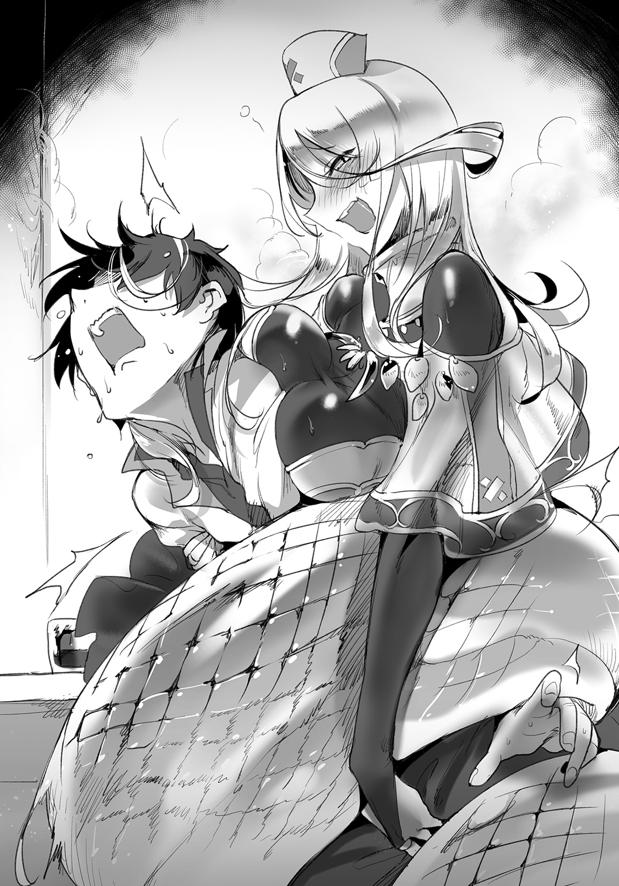
この絡み酒が、サーフェなりの甘え方なのだということは、グレンにもわかっていた。
長い付き合いでも、言えないこと、隠し事はどうしても溜まってしまう。普段から説教するような間柄であっても――いや、むしろそんな関係だからこそ、発散できないものがあるのだろう。
サーフェも大変なのだ。
彼女には助手として、診療所の雑事を任せてしまっている。負担をかけているのはグレンも承知だった。その上、今度はティサリアの不調を解決するために、本来はしなくていい仕事まで抱えようとしている。
「あのね、サーフェ」
「はい、先生」
しかし。
呼び方を変えるだけで、サーフェはいとも容易く笑顔になった。通称で呼ばれるのがそんなに嬉しいのか。グレンからこの呼び方を引き出すために酔った演技をしていたのか、それとも全て酔いのせいなのか。
「人手が欲しいんだ。明日、手伝ってくれる？」
「もちろんです、どこまでもお供します」
ころりと表情を変えるサーフェは現金である。
彼女はそうして、ようやくグレンを絡みから解放してくれた。この飲み方は健康にもあまり良くないだろうし、サーフェ自身も承知の上なのか最近はまったく飲むことはなかったのだが――今日は少し、羽目を外したいらしい。
彼女は魅力的な助手である。
しかし、この診療所はクトゥリフの後援で成り立っている。教え子二人が診療所で睦言を交わしたと知れば、グレンの師は烈火のごとく怒るはずだ。それを考えても、彼女に絡みつかれるのは望ましいこととは言えない。
ここはあくまでも、神聖な医療のための場所なのだ。
「ほどほどにしてね......」
忠告はどこまで届いているのか。
グレンの苦言に、サーフェは意味深に微笑むばかり。彼女の心中は付き合いの長い彼でも計り知れない。
グレンはどんな顔をしていいかわからず、グラスの酒を飲み干すのだった。
ハーブの香りが、少しは頭を冷静にさせてくれる気がした。
今日も、勝てなかった――。
ケンタウロスの名門、スキュテイアー族の一人娘――ティサリアは、唇を嚙んだ。しかしそれは、誰もいない訓練場で。周囲に人がいないことを知っているからこそできる、苦渋の表情であった。
彼女は、誇り高い一族の姫である。
スキュテイアーは、生粋の騎馬民族と呼ばれるケンタウロスの中でも、特に武芸に優れた一族であった。どこの勢力にもつかず、莫大な金と引き換えに傭兵となって戦場を駆け巡ることで生計を立てていた。戦争の事情で各地を移動し、時代によっては親兄弟が敵同士となって争うこともあったという。
ティサリアの曽祖父も祖父も、戦死であった。祖母も苛烈であり、女だてらに鎧兜で戦場を駆け巡ったという。
当然ながら、長い一族の歴史において、戦死者は多かった。
しかし、それはスキュテイアーの者にとって悲劇ではない。
戦場の槍で、弓で、刀で斃れることは不名誉ではない。身命賭して戦い、その末で戦場にて果てることこそ、スキュテイアーの一族として理想的な死に方とされた。戦わずに人生を終えるなどということが、あってはならないのだ。
だから、十年前、長く続いた人間と魔族の戦争が終わったとき、スキュテイアーの一族は決断を迫られたのだ。これからどう生きるか。戦争の中で生きてきた者たちが、戦争が終わったときにどうするか。
ティサリアの父は一族の長であったがゆえ、この決断に一つの答えをだした。
まだ街として完成していない、新しい都市リンド・ヴルムにて商売を興す。ケンタウロスの持つ輸送能力を、流通に活かして一族の名を広める――と。
それは、武器を捨てる決断であった。
一族の中でも反発は大きく、リンド・ヴルムへの移住を決めたとき、多くの者が父を見限ったという。我々に荷馬になれというのか、長く続く戦士の誇りはないのか。そう言って父を非難する者もいた。
しかし、結果的にティサリアの父は成功した。車を曳いて人を運び、背中に荷物を載せて運ぶ。『スキュテイアー運送』は、素早い流通と、堅実な仕事ぶりで、リンド・ヴルムの信頼を集めた。もはや街にはなくてはならない大商会だ。ここまでくると、誰もスキュテイアーの者を荷馬などと呼びはしない。
父は平和の中にあって、一族の進むべき道を見出し、見事率いてみせたのだ。
それは、戦争とは違ったけれども――一軍の将の働きと言っても過言ではない。
「でも」
ティサリアは、唇を嚙む。
父は、成功した。それでいい。自分は当主の一人娘であり、いつかは跡継ぎとして、『スキュテイアー運送』を率いていかなくてはならない。
だが、ならばかつて武名を誇ったスキュテイアーはどうなる。新しい平和の時代において生きる道を見つけた自分たちは、過去を容易く捨ててしまっていいのか。今が順風であれば、かつての歴史と栄誉は必要なくなるのか。
そんなはずはないのだ。
ティサリアは今と同じくらい、かつての名誉も大事にしたかった。やはりスキュテイアーは武芸の一族だと、その名をリンド・ヴルムに響かせたい。その上で商会も発展させ、終わらぬ栄華を築く。
それが一族の姫としての自分の役割だ。
だから、闘士になったのだ。両親は商会の運営で多忙である。時間があり、より多くの教養と経験を身につけなければならない自分こそが、槍を持つにふさわしい。
そうして、闘技場で勝ち続け、階位を上り詰め、やがては殿堂入りを果たし、闘技場の碑に永遠に刻まれること――それが、ティサリア・スキュテイアーの変わらぬ目標であった。
ティサリアは、闘技場で使われる模造槍を構えた。
「今日も、勝てなかった......！」
訓練場で一人、駆ける。円形の標的。同心円状に描かれた線は、狙うべき場所を示す。蹄を鳴らして、ティサリアは標的を狙い槍を突き出した。
自分は勝てない。
昨日も、一昨日も、自分の戦績は目に見えて落ちている。ここしばらく、闘技場の試合では勝利していない。一族の皆も、闘技場のファンも応援してくれているというのにこのザマだ。
なにが悪いのか自分でもわからない。
しかし、このように戦績を気にして落ち込む姿を、誰にも見られたくはなかった。悔しさに唇を嚙みしめ、今にも泣きそうになる姿は、スキュテイアーの姫に相応しくないものだ。
姫とは常に、高潔で、誇り高く、一族の過去と未来を背負うもの。
決して泣かず、引かず、屈しない。そうありたいと願うティサリアは、だから今日も人のいない訓練場で槍を振るう。涙を見せたくない。常に上から目線、弱みなど見せない。
それが姫であり闘士である、ティサリアの信念であった。
「くっ............」
槍は、模擬の標的を的確に貫いた。
木でできたターゲットは簡単に折れ、壊れる。
けれど――違う。
なにか違う。どこと表現できないが、槍を振るう一瞬。力を込め、四本の足を伸ばし、研ぎ澄まされた槍の先端で狙う瞬間。身体のどこかに違和感が生まれ、とらえられそうだった感覚が抜け落ちてしまう。
これではまた負ける。ティサリアほどの武人であれば、闘う前からすでに、試合の趨勢を予測することができた。自分が万全であればともかく、この状態では。
「なんで......」
槍を持つ手が震える。
ケイやローナ、両親、『スキュテイアー運送』で働く部下たち。彼らの信頼にこたえ、スキュテイアーの武名いまだ健在だと大陸に名を轟かせるためにも、自分はこんなところで立ち止まっているわけにはいかないのに――。
「もっと、もっと訓練をしないと......」
模擬の標的はまだ設置されている。全力疾走からの槍の刺突がティサリア最大の武器だ。稽古を繰り返し、自分の問題点を洗い出す。
決意のまま、蹄を鳴らし、ティサリアは訓練場の奥へと。
「っ」
そこにある人影に、気づく。
おかしい。
この時間、訓練場には誰もいないはずだ。そういう時間帯を選んで、ティサリアは人知れず努力を重ねてきた。ならばなぜ、まるで待っていたかのように人が立っているのか。そこにいるのは、誰だ。
「――――お医者様？」
先日の健康診断のときに姿を見せた、まだ若い医者。
グレン・リトバイトが、穏やかな笑顔とともに、そこに立っていた。
ティサリアの秘密の特訓の邪魔をしてしまったことを、グレンは改めて申し訳なく思う。
彼女は驚いた表情で、グレンの隣にいる従者たちを見つめるのだった。
「ケイ！ ローナ！ 貴女たち......！」
「申し訳ありません」「お嬢様」
二人の従者は、素直にティサリアへと頭を下げた。彼女は秘密にしていたのだが、当然ながら付き従う侍従は委細承知の上だった。陰の努力を邪魔するわけにはいかず、今日まで黙っていたのだが、それをグレンに知らせてしまった。
「二人を叱らないであげてください」
「......お医者様」
急に会いたいと言ってきたグレンに、ケイとローナは融通をきかせてくれた。
ティサリアの思いも二人は当然知っていたろうが、それよりグレンの治療を優先すべきだと感じたのだろう。訓練場にグレンを案内する二人に、躊躇いはなかった。
「なんだ......バレていたということですわね」
「私たちはお嬢様のお付きですから」「お嬢様の思いは存じておりますわ」
「優秀な従者を持って、わたくしは幸せ者ですわ......では、お医者様、今日はどのようなご用件で？ 昨日の健康診断でなにかありまして？」
ティサリアの瞳には、悲壮感はない。
強いて見せないのだ、とグレンはすぐに見抜いた。感情を押し殺し、人に見てもらいたい自分だけを見せる。
ティサリアは居丈高ではあるが、自分を制御することができる人物なのだ。
「いえ、ティサリアさんは健康です。普段の生活のおかげですね」
「では」
「ですが、試合に勝てない理由は明白でした。今日はそれをお伝えして、必要であれば処置をしようかと」
「全部喋ってしまいましたのね、ケイ、ローナ」
ティサリアはため息をついた。二人の従者は同時に謝ったが、彼女にはそれを追及しようというつもりはないようだった。
「ではお医者様、わたくしの不調の原因というのは」
「はい、それは蹄です」
「ひ、蹄......？」
グレンは、足元に置いていた『それ』を、手に取った。
刀だ。それも巨大で、武骨で、およそグレンのような優男には似つかわしくない――巨大な刃物。先端が直角に曲がっており、武器というより鎌のようだが、農作業用としては大仰に過ぎる。
「ひっ」
武骨な刃物を見て、さすがのティサリアも、少したじろいだ――いや。
彼女がたじろいだのは、きっと別の理由だ。
「ケンタウロスの下半身は、馬の首から下とよく似ています。ケンタウロス自身は馬とつながりのない生物ですが、おそらく馬と同じく広い平地を駆けるために、よく似た姿に進化していったのだと考えられます――これは師匠の受け売りですが」
「そ、それがなんだといいますの......？」
「単純ですよ。馬には蹄がありますが、これは人間の爪と同じく、自然に伸びるものです。平地や草原で生活している分には、伸びた分が削れていくので問題ありませんが、街中だとあまり走らないために伸びすぎたり、逆に競走馬などは削れ過ぎてしまいます」
グレンは順を追って話していくが、はっきり言ってこんなことは、ケンタウロスならば当然知っているはずのことだった。蹄が伸びたり削れすぎたりすれば、歩行や走行に影響が出てしまうのだから。
ちらりと見た、ティサリアの蹄。
明らかに伸びすぎだ。蹄の先端が余っている。街における生活は、闘技場の闘士であっても運動量が足りていないのだ。岩や石のまったくない、土を均した道を歩くだけでは、蹄は自然には削れないのだ。
「それを防ぐのが、装蹄です」
グレンが取り出すのは、蹄鉄であった。
蹄の形に合った鋼鉄を、馬の脚に釘でもって固定する。これが蹄を保護し、馬の安定した歩行を維持するのだ。家畜としての馬には必須といってもいい。
当然、ケンタウロスに限らず、足に蹄を持つ魔族にとっても必須の道具であった。これがなければ、最悪の場合、日常生活に支障を来す恐れさえある。蹄鉄をしないまま都市生活をしていたティサリアは、これまでも苦労があったはずだ。
「ティサリアさんは、健康でした。過去に大きな病気も怪我もなく、資料にも治療の記載は一切存在しなかった」
「そうでしょう！ そうでしょうとも！ わたくしは日ごろから健康に気を遣って」
「装蹄したという記述も存在しなかったんです」
「っ......」
ティサリアが、目を逸らす。
病ではないので、装蹄をしていないことは資料に記載されることはなかった。だが、普通のケンタウロスであれば、装蹄の技術を持つ者によって蹄鉄をつけてもらうはずだ。その記述がないことに、どうして気づかなかったのか。
他のケンタウロスの資料と見比べればすぐに気づいただろう。現にケイもローナも蹄鉄の処置を施している。グレンはティサリアのことばかりに気をとられ、彼女の資料ばかり見ていたせいで、蹄鉄に関する記載がないことになかなか気づけなかったのだ。
グレンは、刀を構えた。
「ではティサリアさん、蹄鉄をつけましょう。それだけで、試合での動きは格段に良くなるはずですよ」
「い、いえ、わたくしは結構ですわ」
予想通りの答えに、グレンはやはり、と思った。
「わたくしは、わたくしはスキュテイアーの姫。この体は父祖から賜った大事なもの！ たとえ蹄の先といえど、むやみに傷をつけることは......！」
「ごめんなさい、ティサリアさん」
青い顔のティサリアに、グレンは謝るしかできない。いつの間にか、彼女の両側には、ケイとローナが立ち、彼女の両腕を拘束した。近づかれるまでティサリアも気づかなかったらしい。彼女たちもまた、歴戦の闘士なのだ。
「あ、貴女たち......！」
「今回の装蹄については、すでにお二人にお話しして、お金をいただいてしまいました。ケイさん、ローナさんから是非とお願いされてしまったんです」
蹄鉄が、不調の原因ではないか。
そう二人に告げたとき、その意見には賛同してもらえた。そして、可能であればグレンに装蹄――蹄鉄を装着してほしい、と頼まれたのだ。すでにその分の代金ももらった。
グレンの後ろには、すでに職人たちが控えている。
巨大な鉗を持つのはサーフェ。そして、その横で様々な器具を構えているのは、リンド・ヴルムが誇る大工房『キュクロ工房』の職人たちだ。一つ目の屈強な男たちだが、その見かけによらず、繊細な仕事を得意とする優秀な匠である。
事前にグレンは、キュクロ工房の一つ目職人たちに話を取り付けていた。
すべては、訓練中のティサリアに、有無を言わせず蹄鉄を履かせるためだった。
「さあ、ティサリアさん、始めましょう」
「ひ、ひぃぃぃ......！」
ティサリアはすでに涙目だった。彼女が、装蹄を嫌がっているのがよくわかる。
グレンは、こういう表情をする者をよく知っていた。医者である彼にとっては身近なものだ。すなわち――虫歯の治療のための数々の器具を見て、震えあがる子供と、まったく同じ表情なのだ。
言われてみれば。
装蹄の道具は巨大な鎌に似た刃物、鉄鉗、釘に、釘を打ち込むための鉄槌などなど。鉄製の巨大な道具が多く、それらは拷問器具と呼ばれてもおかしくないほど武骨で、見目恐ろしいものばかりであった。
「い、痛いのは嫌ですわー！ 怖いですわぁー！」
「お嬢様！」「子供みたいなことをおっしゃいますな！」
涙目で叫び暴れるティサリアに、すでに姫としての誇りはない。ケイとローナの拘束をどうにかして抜け出そうとしていた。装蹄を嫌がり、蹄鉄を履かない理由は、いかにも原始的な恐怖であった。
まさしく子供のごとく嫌がるティサリアに、グレンは大刀を持って近づいていく。
「大丈夫、すぐに終わるよ。動かなければ痛くないですから」
「い......いやぁぁぁ！」
誇り高き姫闘士の悲鳴が、広々とした訓練場にこだまするのだった。
痛いのを怖がるティサリアであったが。
実のところ、熟練した装蹄師による作業は、患者にほとんど痛みを与えることはない。蹄鉄を利用する魔族は多く、グレンにしても装蹄の技術は一通り心得ていた。というより、魔族医療において初期に学ぶ技術だと言っていい。
それでもティサリアの涙目が止まらないのは、彼女が装蹄に際しどのようなことをされるかよく理解しているからだと思われた。
「こんなふしだらな姿......女性の足の間に入るだなんて不埒ですわ！ もうお嫁にいけません......！ ああ、跡継ぎを作れない娘をお許しください、お父様、お母様......！」
「いけますよ。これは治療なんですから」
まずグレンは、ティサリアの下に潜り込む。ケンタウロスだろうと、足の間に男に入り込まれていい気分になる女性はいないだろう。ティサリアも顔を覆っていた。
左前脚を折り曲げる。足の先端を確認すると、やはり蹄は伸びていた。まずは伸びすぎた蹄を削らなくてはならない、そのための鎌のような刀――鎌形蹄刀と呼ばれる道具でもって、蹄の形を調整する。
刀を蹄の先端に当てると、ティサリアがびくりと震えた。
「んっ......うっ、あのお医者様......敏感なところなので、優しく、優しくしてくださいね......？」
「大丈夫です、慣れています」
「んっ......」
感覚としては爪切りに近い。
蹄の先端を切るだけでは痛みはないが、深部には神経も集中している。あまり深く削りすぎると神経を痛め、激痛を与えてしまうことになる。
「ん......うう！ いけませんわ、そんな......！」
「い、痛かったですか！」
「く、くすぐったいだけですわ、早く、早く終わらせて......！」
ティサリアが涙目でこちらを見た。顔が赤いのは恥ずかしいのか、それとも別の理由なのだろうか。
彼女の反応にグレンまで恥ずかしくなってくる。これは治療、治療なのだと自分に言い聞かせなければならない。
一通り蹄を削り、細かく調整していく。蹄刀だけではなく、鑢なども使って丁寧に仕上げていく。蹄の隙間に入り込んだゴミも取り除かなくてはならない。
「ひっ」
またもティサリアが震えた。グレンの作業ではなく、その横――サイクロプスたちが作業をしている様子が目に入ったのだろう。
そちらでは、まさに蹄鉄を作っているところだ。湾曲した鋼鉄である蹄鉄を、専用の炉にいれて熱しておく。このまま、削り作業を終えた蹄に当てて、最後の微調整をするのである。
蹄の先端は、爪と同じようなもの。刀で削ろうと、熱した蹄鉄を当てようと、ケンタウロス自身にダメージはない。しかしそうは言っても、赤熱した鋼鉄を近づけられて平然としていられる者も多くはないだろう。
「熱くないですわよね!? 大丈夫ですわよね！」
「お嬢様......っ」「暴れないでくださいなー」
熱くないことはティサリア自身わかってはいるのだろうが、それでも恐怖は拭えないらしい。引きつった顔で、灼けた蹄鉄を見ていた。
サイクロプスたちは、『キュクロ工房』でグレンが懇意にしている職人たちだった。手術用のメスや鉗子、縫い針。あるいは聴診器などの難しい加工が必要なものまで、『キュクロ工房』の一つ目職人たちはなんでも揃えてしまう。
蹄鉄の調整など、彼らにとっては問題にもならない作業だ。
何度か、蹄鉄を押し当て、そのたびに形を微調整していく。蹄鉄の調整が終われば、いよいよ足に固定する作業になる。
「ふ、ふふ、も、もう何でも来いですわ！ スキュテイアーの姫に怖いものなんてありませんのよ！」
だんだんと自棄になってきたティサリアである。
「はい、わかりました。では」
「ひっ......！」
精一杯の虚勢だったらしく、またもティサリアの顔が引きつった。
グレンが取り出したのは釘と、それを打ちつけるためのハンマーである。蹄鉄は六本の釘でもって蹄に直接装着しなくてはならない。もちろん下手な装蹄師が行えば、神経を傷つけ怪我をさせるおそれがあるが――グレンは今更そんなヘマをしない。
「い、嫌ですわー！ もうこんなの嫌ぁー！」
「お嬢様！」「一瞬前と言っていることが違います！」
もはや、我慢の限界だったのだろう。
情けなくも暴れだすティサリアであった。ティサリアの足元にいるグレンも、がんがんと踏み鳴らされる蹄に顔が引きつる。当然ながら、本人が暴れては装蹄どころではない。
というか、ティサリアとて闘技場と闘士として、数多の相手と闘っているはずなのだ。使っているのは木製の武器とはいえ、真剣勝負で打ち合うのだから危険が伴う。試合が平気で、装蹄は嫌だとはどういう了見なのか。
「ティサリアさん、大丈夫ですよ、痛くしませんから！」
「でも！ でもわたくしに乱暴するのでしょう!? 釘だなんてなんて野蛮な......！」
「蹄鉄の固定には必要なんです！」
「なんて野蛮な！ そんなものをわたくしに......！ 誰か、誰かぁ！」
「くっ......」「お嬢様......暴れないで......！」
ケイとローナの拘束も振りほどかんばかりの勢いだった。
装蹄の作業それ自体に危険はないが――道具や熱した鉄は、扱いを間違えれば怪我につながりかねない。ティサリアが本気で暴れると、それが原因で怪我をしてしまう。
どうしたものか。
いっそ縄でも持ってきて本当に拘束するしかないか――とグレンが非常手段に思い至ったとき。
鞭のようなものが飛んできて、一瞬でティサリアに巻きついた。
「んーっ!? んぐ、んむぅーッ!?」
「さっきからうるさいですよ、ティサリアさん」
サーフェであった。
彼女の長い尾は、ケンタウロスの大柄な身体であっても、いともたやすく巻きついて拘束してしまった。昨晩、グレンの身体を丁寧に締め上げたように。
大蛇の類には、密林に潜んで馬を丸呑みするものさえあるという。
サーフェの白い蛇の尾が、ティサリアの黒い毛並みを侵略している様は、グレンにそんな連想を起こさせた。患者の保定は、治療においても重要なことだ――まあ、尻尾の先端をティサリアの口に突っ込む理由まではわからなかったが。
「んぐぅ、んむーッ！」
「なんだか尻尾を嚙みちぎられかねないので......グレン先生、手早くお願いします」
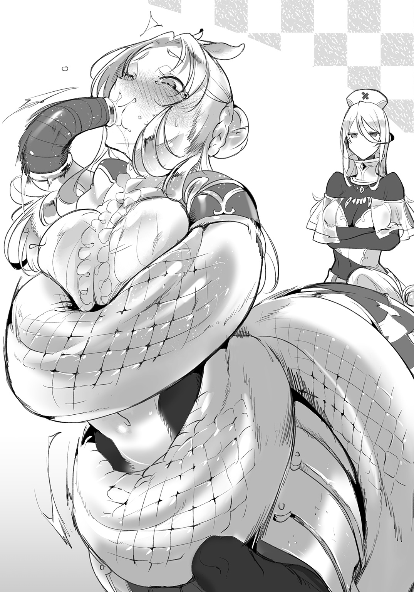
「んぉうん！ んむうあんむぁ......ッ！」
なにか喋っているらしいがよく聞き取れない。むしろ下手に口を動かしているので、唾液がサーフェの尻尾を濡らし、そしてティサリアの大きな胸にまで垂れてしまっていた。
――正直、治療ではないなにかを連想させそうな光景だ。
口から唾液を漏らしながら、なおもティサリアはいやいやと首を振る。
「んぐむむんむぅ――――ッ！」
人に見られると誤解を与えかねないので、グレンは早々に作業にとりかかることにした。
その後、蹄鉄の六カ所を釘で固定し、グレンは全ての作業を完了した。
ここまでが、鉄の蹄でもって生来の蹄を保護する装蹄の工程である。ケンタウロスの脚の形を考えれば、ほぼすべての作業は馬のそれと同様に行うことができる。
危険な作業ではあるが、装蹄する人間が熟達していれば対象に痛みを与えず作業を完了することができる。グレンほどの医者であればなおさらである。
「はぁ......はあっ......っ！ あっ......は......！」
作業を完了し、息を整えているティサリア。尻尾の先端を口に突っ込まれてしまったのがよほど苦しかったらしい。まだ顔が赤い。
手加減を知らないサーフェは、素知らぬ顔であった。
「はあ、はあ......！ こ、これでお、終わりましたの......？」
「いいえ、次は右脚です」
「わたくし、もうダメですわ......脚が立たなくて......」
「もう少し頑張りましょう。すぐ終わりますから」
もはや暴れる気力さえなくなってしまったティサリアを励まして、グレンは作業の続きを行うのであった。
数日が過ぎた。
グレンとサーフェは再度、闘技場を訪れていた。しかし、今度は診察ではない。先日の治療のお礼として、ティサリアが直々に闘技場の観戦チケットを用意してくれたのだ。もっとも試合が見やすい特上席であった。
普通に購入するとなると一体どれほどの値段になることか。そんな上席のチケットを融通してくれるというだけで、彼女のグレンに対する感謝は明らかだった。
試合開始は間もなく。
ティサリアは、闘技場の真ん中で静かに目を伏せていた。精神統一の真っ最中らしい。
「お疲れさまでした、グレン先生」
「ああ、うん......確かにちょっと、疲れたよ」
暴れるティサリアに蹄鉄を履かせる作業は、一筋縄ではいかなかった。ケイとローナ、サーフェ、『キュクロ工房』の職人たち。皆の力添えあってこそだ。
グレン一人では、とてもティサリアに装蹄することなどできなかっただろう。
「しかし、タコ女......クトゥリフ先生も耄碌したようですね。ティサリアさんが蹄鉄を履いていないのであれば、自分でつけてあげればよろしいのに。あの女の八本足があれば、暴れるティサリアさんでも押さえつけられるでしょう」
「多分......クトゥリフ先生は、過度に干渉するのはよくないと思ったんじゃないかな」
「......どういうことですか？」
グレンは、どちらかといえば放任主義の師匠を思い出す。
定期的に行われる健康診断で、クトゥリフが、ティサリアの不調の原因を見抜けなかったとは思えない。ならば結局、クトゥリフは患者自身か、その家族に言われるまで治療をする必要はないと判断した。そういうことになるのだろう。
本人が嫌がっているのだから、装蹄の処置はしなかった――。
せめて資料にそう書いてくれれば、グレンの引き継ぎも楽であったのだが。
ともかく、医者があまり、なんでも口出しするのは良くない。
師匠の性格を考えればありそうなことだった。本人が望まない治療をする必要はない。一理あるだろうとは思う。
試合会場では、ティサリアが相手と向き合っていた。訓練場であった時のような軽装ではなく、兜を被って、胸部にも装甲を増している。これがティサリアの鎧、本来の姿なのだろう。顔は見えないが、彼女の凛とした雰囲気が鎧兜越しに伝わってくる気がした。
「闘技場の闘士もさ、怪我だ病気だってことになると試合に出られなくなっちゃう。それはやっぱりマズいから、必要最低限のアドバイスしかしてなかったんだと思う。先生は」
「しかしそれとこれとは別です。実際、ティサリアさんは試合に勝てずに困っていましたし......蹄鉄をはめなければ、もっと大きな怪我につながる恐れもありました」
試合が、開始された。
相手はトカゲと人がまじりあったような外見を持つ魔族、リザードフォークであった。試合相手の機敏な動き。しかしティサリアも馬の下半身を縦横に使い、闘技場の土を踏み鳴らしていた。
蹄が、小気味よく音階を刻む。
その音でグレンは、自分がティサリアに装着した蹄鉄が、実によく彼女になじんでいることを知る。
「そうだね、怪我はしてほしくない」
「でしたら......」
「だから僕たちは、口うるさい医者になってもいいんじゃないかな。なにもクトゥリフ先生を全部真似る必要はないから......僕たちは僕たちのやり方で」
たとえば、今回のティサリアのように。
ティサリア本人の意思も大事だが――彼女のことを心配するケイとローナの思いも、きちんとすくい上げられるような。クトゥリフのように自重することも必要かもしれないが、自分はもっと、お節介なくらいでバランスがとれていると思うグレンだ。
歓声があがった。
ティサリアが、突撃からの槍の一閃でもって、相手のリザードフォークに鋭い一撃を浴びせたのだ。対戦相手は地に膝をついている。模擬剣でもって立ち上がろうとしたが、体の芯をとらえた一撃は重く、容易に復帰はできないようだ。
試合の決着がついたのだ。
すでに、不調に悩む人馬の姫はいない。名実ともに誉れ高き、スキュテイアーの闘士の姿がそこにあった。
「もう大丈夫なようですね」
クールなグレンの助手も、ティサリアの様子を見て微笑んだ。
彼女は彼女なりに、ティサリアのことを案じていたのかもしれない。まさしく『馬が合わない』間柄ではあるようだが、それでもサーフェの優しさをグレンは知っていたし――だからこそ、薬師に向いているとも思うのだ。
一試合を終えて、ティサリアが兜を脱ぐ。額の汗をぬぐった彼女と、ふと目が合った。
観客席の最上席。試合がよく見えるということは、裏を返せば闘士からもよく見える位置だということだ。グレンと目が合ったティサリアは、満面の笑みでもって手を振ってきた。
試合の高揚感のためか、わずかに顔が赤い。兜を小脇に抱えて、ぴょんぴょんと飛び跳ねる様子は、なるほど観客にもファンが多いことを納得せずにはいられない――そんな魅力を伴っていた。
小さく、手を振り返すグレン。
「先生？」
両手を上げてアピールを止めないティサリア。頭頂部の耳までぴこぴこと動かして、全身を使った表現であった。
そんな彼女に振り返したグレンの手に、しゅるしゅると蛇の尾が巻きついてくる。絡みつく蛇鱗は、ひんやりと冷たい。
「よもや、本当にティサリアさんとお見合いの予定など、ありませんよね？」
「ないよ、大丈夫......」
「どうだか」
サーフェの赤い目が、すっかり拗ねてしまっていた。これはまた、診療所に戻ってから機嫌を直してもらうまでが大変そうだと思わせた。
ティサリアは、まだ手を振り続けている。
それは、ようやく誇りを取り戻すことができた人馬の精一杯の感謝の笑顔だったが――もちろん、ティサリアの今日までの思いを知らないグレンは、何故そんなに感謝されているのか、いまいちぴんと来ない。
ティサリアに装着された蹄は、彼女が飛び上がる度に乾いた音を鳴らして、高らかに響くのであった。
蹄鉄は幸運の象徴といわれる。
苦手だった装蹄に勝利したティサリア・スキュテイアーは、今後も幾多の試合や苦難に対して果敢に立ち向かい、栄華の道をその蹄で踏みしめることになるのだが――それは、まだまだ先のことなのであった。
症例２ 水路街のマーメイド
サーフェンティット・ネイクスは、アルビノのラミアである。
アルビノの日常生活では、なにかと配慮しなくてはならないことが多い。
たとえば直射日光により発病したり、目を傷めてしまうため、日光はなるべく避けなくてはならない。サーフェは普段から日焼け止めの軟膏を欠かさず塗り、光を遮断する伸縮性の高いインナーを着用することで、直射日光への対策をしていた。
外出の際は、看護帽に収納されているヴェールを取り出し、目や顔を保護している。かように常に対処を怠らないサーフェである。
「昔はどうしてたの？ ラミアはアルビノの個体が生まれることが多いんでしょ？」
リンド・ヴルムの水路を、一艘のゴンドラが進んでいく。
乗っているのは、グレンとサーフェだ。サーフェは外出用のヴェールで顔を覆っている。特別に縫製された黒いヴェールは、遮蔽物のない水路でも、彼女を日光から守ってくれる。
「ええ、一族に生まれたアルビノの者は、日の光を避け、夜に活動することが多かったと聞いています」
「サーフェはそういうわけには......いかないよね」
「ええ。でも、先生も気を使ってくれるので、助かっています」
にこ、と笑う。彼女が病弱だったのは昔のこと。今はリトバイト診療所の薬師として、壮健に日々を送っている。
とはいえ、それは薬があってのこと。
特に、日焼け止めの軟膏は貴重で、それは数種類のハーブや蠟のほか、精製水を用いて製作するのだが――他の材料はともかく、精製水だけはグレンの力だけでは手に入れることができないのだった。
リンド・ヴルムにおいては、北西街区の『メロウ水路街』まで出向く必要があった。
「マーメイドの皆さんが精製水を用意してくれるからこそ、私たちも診療所を運営できているのです。感謝しませんと」
「本当だよ......水路街でないと、精製水なんて売ってないからね」
グレンは息を吐いた。
サーフェの日焼け止め軟膏以外にも、リトバイト診療所ではいくつもの薬を扱っている。薬の製作は主にサーフェの仕事であるが、材料は二人で調達することもある。
今日は、そんな診療所の買い出しの日であった。『メロウ水路街』でしか手に入れられない貴重な品々を買い込むため、やってきたのだ。
ゴンドラは、船の後方に立つ水夫の櫂によって、ゆるゆると進む。整備されているとはいえ、狭い水路は熟練の水夫の技がなくては、すぐに水路の端にぶつかってしまうだろう。
水路街に来たことは何度もあるグレンだが、そのたびにゴンドラ漕ぎの妙技に感服することになる。
「けれど、先生とお二人でお出かけなんていつ以来でしょうね？ とても嬉しいですわ」
「ここのところ、忙しかったからね......」
たとえ町医者とはいえ、この街で魔族を診ることのできる医者は限られている。
そんな中、丸一日、診療所を休診して二人で買い出しに来るこの時間は、とても贅沢なものだと言えた。あくまで仕事ではあるのだが、診療所にいないとどこか落ち着かないグレンなのであった。
水路街は、ほかでは見られない独特の景観によって、リンド・ヴルムの観光資源の一つとなっている。精製水などの実用品のほか、多くの土産物が売られており、それを目当てに大陸中から数多くの人が訪れる。特にガラスは『メロウガラス』と呼ばれ、その透明感と独特の色合いから高値で取引されるという。
そういう場所だけに、今日の買い出しは息抜きも兼ねていた。サーフェがどこかはしゃいでいるのも、アルビノの体質のためになかなか外出ができない、ということだけではなさそうだった。
水路は、さらに狭くなる。
同時に、水の透明度が上がってきたような気がする。リンド・ヴルム議会の代表者、『竜闘女』スカディ・ドラーゲンフェルトの指揮のもと、多額の税金を使って完成させたのが『メロウ水路街』だ。
ゴンドラ一艘が通るのがやっとと思われる水路に来て、ゴンドラがゆるやかにブレーキをかける。水夫が漕ぐのをやめたのだ。ロープは使わないまま、水夫はぴょいっと跳んで岸へと上がってしまった。
漕ぎ手のいないゴンドラ。
水夫は帽子を脱いで、グレンへと丁寧に頭を下げた。
「お医者様、ここからは漕ぎ手が替わりますんで」
「はい。ご苦労様でした」
「どうぞメロウ水路街を楽しんでくださいまし」
人間の水夫はそう言って、再び一礼をした。ここからは、人間の漕ぐ櫂では無理なのだ。狭い水路を進むためには、別の力が必要になる。
水夫のいないゴンドラが、再び、ぐうっと進んだ。
櫂も漕ぎ手もなく、船は進んでいく。サーフェは澄ました顔で、水路の景色を眺めている。ゴンドラは速い。櫂による操縦ではこうはいかない。
グレンは知っていた。
『メロウ水路街』を進むためのゴンドラは、その船首の下部、飾りの取り付けられたさらに下――水に浸かっている部分に、長く伸びる取っ手がある。
新しく交代した漕ぎ手は、その取っ手を摑み、さながら人力車のごとくゴンドラを牽引しているのである。
水路を覗けば、透き通る水。
その中に、様々なものが見える。
マーメイド、セルキー、スキュラなどなど。水中生活に適した体を持つ魔族たちだ。そんな魔族たちが行きかうのは、水中に広がる都市の光景。
何層構造にもなった水中の都市の活気は、しかし分厚い水の壁でもってグレンの耳に聞こえることはない。しかし、彼らが軽やかに泳ぐ姿は、それだけでグレンに確かに水路街の賑やかさを感じさせてくれたのだった。
ゴンドラがわずかに速度を緩め、船首からざばっと顔を出すものがあった。
それは、先ほど交代した新しい水夫だ。もちろん、長時間水中にいられるものが普通の人間であるはずもなく。
「ようこそ！ メロウ水路街へ！」
若い男性の水夫――下半身が魚となっているマーマンの彼は、陽気な表情でもってグレンたちの訪れを歓迎した。
彼の指し示す先――つまり水中であるが――には、アーチ状の看板がある。そこにもやはり歓迎を示す魔族の文字が並んでいた。前方にも後方にも、人間を乗せたゴンドラを、多くの人魚たちが曳いている。
ここからが、本当の『メロウ水路街』。
水に沈んだ街に作られた、水棲魔族たちの住む街区であった。
ヴィヴル山脈の山頂には、毎年多くの雪が降る。
峻険な山々に降り積もった雪は、春の訪れとともに溶け出して、やがて海まで続くヴィヴル大河を形作っていく。リンド・ヴルムに流れるこの清流は、大陸でも有数の清き流れとされており、多くの生き物、水棲魔族たちの憩いの水となっている。
この大河を引き寄せる。
それが、リンド・ヴルムを今の魔族と人間が同居する独特の街へと作り上げた権力者、スカディ・ドラーゲンフェルトの事業の一つであった。
すでに使われていない古いスラムを改築、防水し、その上で大規模な土木工事を行って川の流れの一部をスラムに流入させる。
北西街区は丸ごと水に沈み、水中の都市が完成した。
リンド・ヴルムの予算をもっとも使い、かつもっとも大規模な工事であったという。しかしその甲斐あって、水中都市は、流れ込む水を濾過し、下水設備も備えた最新鋭の街となった。常に街には清き流れが注ぎ、排水は生活圏内とはまったく別のルートを通って街の外へと捨てられる仕組みになっている。
かくして、水の中に生きるものにとって、『メロウ水路街』はこれ以上ないと言われるほど住みやすい街になった。
「まあ――その結果がこれなんだけどね」
グレンは、苦笑せざるを得ない。
清らかな水の流れる上水と、最新の下水設備。循環する二つの水の流れを実現するためには、ヴィヴル運河の流れを的確に操作する必要がある。複雑な水路の構造は、水棲魔族たちにとっての住みやすさを重視した結果であった。
ただ水中に住む者たちにとっては、この上ない環境であっても。
水に潜れない人間や、ほかの魔族にとっては――船でとても通りづらい、水上の迷宮と化す。人間の水夫が、途中で交代した理由はこれだ。この街に住む者でなければ、複雑怪奇な水路を案内することはできず、また櫂でゴンドラを操作していては、狭すぎる水路ではすぐにゴンドラ同士がぶつかってしまう。
無論、大きな水路や、何艘もの小舟が行きかう場所もあるのだが、そこにたどり着くまでには小さな水路を通らなくてはならず、一方通行や通行禁止の水路も多い。案内なしで観光客が目的地にたどり着くのは至難の業なのだ。
船と一体になって曳けるもの――マーメイドやマーマンが水夫を行っているのは、そういう理由があるからだった。
狭い水路を抜け、大きな水路に出る。するとそこでは、両岸に多くの小舟が並んでいた。行きかうゴンドラの数も先ほどの比ではない。
「まあ！ グレン先生、見てくださいな、メロウガラスがこんなに！ お酒のために杯でも買っていきますか？」
「ちょっとサーフェ。目的忘れないでよ」
「えぇー、でもぉ......」
グレンは苦笑せざるを得ない。今日はあくまで、診療所に必要な品物を買いに来たのだ。しかし小舟に並んだ商品に、サーフェは目を輝かせている。
小さな船は、全て露店である。
船の上を商品の陳列台のように使って、マーメイドやマーマンの店主がにこにこと愛想を振りまいていた。人魚たちはその名の通り、下半身が魚となっている魔族だが、魚部分の鱗模様や色、ヒレの形など、外見は実に多種多様である。色とりどりのヒレや鱗を持っており、見目麗しい者も多い。
『メロウ水路街』で、人魚たちが並ぶ姿はとても華やかだ。
露店商らは、グレンたちと同じくゴンドラに乗る観光客に、巧みに商談を持ちかけている。観光客も観光客で、キラキラと光るメロウガラスの商品に目を奪われている。お土産に一つ、などと言わせたなら露店商の勝ちだ。
小さなゴンドラの行きかう水路。ゴンドラを曳く水棲魔族の水夫。お土産品を並べて得意げな露店商たちと、それをきゃっきゃと眺める観光客。
メロウ水路街の日常の光景。
水に住む魔族と、そうでないものたちの織り成す、リンド・ヴルムの名所の一つであった。
「あら、あちらには香水瓶......」
「お医者様、寄って行かれますか？」
サーフェの目線がふらふらと露店の船に吸い寄せられる。それを逃すまいと、グレンたちの乗るゴンドラの水夫が言った。水中から顔だけを出して、こちらを振り向いてくる。
水夫もメロウ水路街に住む魔族である。あるいは露店商たちとも付き合いがあるのかもしれない。たとえば、ゴンドラの客を、懇意にしている露店に案内すれば銅貨一枚もらえる、などという取引が。こうした観光名所ではよく聞く話で、珍しくもない。
が――。
「サーフェ。買い出しが先だよ。すみません、七番水路のほうに」
「ええぇぇー！」
不満そうなサーフェを無視して、グレンは水夫に指示を出す。よく日焼けしたマーマンは快活な笑顔で了承してくれた。
むしろサーフェのほうがよほど不満そうだった。なにも言わないが、ぶすっとした表情で後ろを向いている。後ろ髪をひかれるどころか、長い尻尾が名残惜しそうに尾をひいていた。放っておくと、露店のゴンドラに巻きついて離れないかもしれない。
ガラス製品は食器や酒器に始まって、大小さまざまで用途も多岐にわたる瓶。あるいは動物を模した置物など、実に多くの種類がある。色とりどりの輝きはいかにも女性向けのお土産といった感じがあった。
とはいえ、本当に仕事ばかりで来たわけでもない。息抜きも兼ねているとは、ほかならぬグレン自身が思っていたことだ。
「帰りに寄るからさ、サーフェ」
「......きっとですよ、先生」
膨れた顔のサーフェに、グレンは苦笑するしかなかった。それこそ香水瓶あたりをねだられたら断れない、と思ったからだ。
七番水路に、グレンのよく知る露店がある。セルキー族の女性が営む、少々裏通りとも呼べる場所にある店だ。
セルキーとは、アザラシの皮をかぶり、アザラシそのものになってしまうという魔族である。露店の店主もその例にもれず、頭にアザラシの皮をかぶっているので、グレンも素顔を見たことはない。ただ、セルキー族はみな見目麗しいというから、美女であることは確かだろう。
彼女はいつも言葉少なに、グレンに精製水を売ってくれる。
グレンのような医者でなければ、精製水など必要ないものだ。薬を作ったり、手術に使用するのでなければ、河や井戸の水で用が済む。そのため精製水を売ること自体、セルキーの店主の道楽のようなものだろう。はたして儲かっているのだろうか。
店主は相変わらず多くは語らず、グレンたちのゴンドラを見送った。
ゴンドラの後方には、瓶詰された精製水が大量にある。そのほか、殺菌に使用するためのアルコールや酢なども購入した。どれも混じり気がなく、高品質のものだ。
瓶が大量に積まれているので重いはずだったが、ゴンドラを曳く水夫はなんなく泳いでゴンドラを運んでくれている。水夫が鍛えているのはもちろんだが、水の流れに逆らわず、巧みにゴンドラを操船しているからこそできる芸当だろう。
買い出しは、これで完了だ。
サーフェの日焼け止めの軟膏を作るのにも、これだけの精製水があれば十分だろう。
目的のものを買い終えて、先ほどから、ラミアが物言いたげにこちらを見ている。前を泳ぐ水夫も、ちらちらと鳶色の目で視線を送っている。
「......お土産を買いたいのですが、お勧めの場所はありますか？」
水夫にそう尋ねると、彼は任せてくださいと請け負った。同時に、サーフェがにっこりと微笑むのだった。
それから先は、サーフェの独壇場であった。
市場の露店一つ一つを丁寧に見て回り、あれでもないこれでもないと目を光らせている。
普通の市場であれば、気に入ったものを買えばそれで済むのだが、なにしろメロウ水路街にはゆるやかであるとはいえ、水が流れている。ロープで固定でもしない限り、ゴンドラは一方向に進むしかない。大きな水路は流れも相応に強いので、それに逆らうことは難しい。水路街に一方通行が多いのはこれが理由であった。
つまり、気に入った土産物とは一期一会。
露店で船を停めることは可能だが、一度通り過ぎた露店にまた戻るというのは非常に困難なのだ。気に入ったものがあれば、今すぐに買わなければならないと思わせる。それもまた、観光客の琴線に触れる、メロウ水路街独特の商法であった。
やがて。
「これをくださいな」
サーフェは、赤のガラスで作られた香水瓶を買った。
大はしゃぎしていた割には、小さくて品のある、それでいて安めの物であったが、それがとてもサーフェらしい。
いい土産を手にすることができてほくほく顔のサーフェを伴い、グレンたちのゴンドラは下流へと向かっていた。買い出しの成果はグレンたちが運ぶには文字通り荷が重いので、どこかでゴンドラを停めてから、スキュテイアー運送の人馬たちに引き上げてもらう必要がある。
表通りにあたる水路は賑やかだったが、裏の水路はどこか閑散としており、観光客を乗せたゴンドラもまばらである。露店もちらほらとしか開いていない。
「まだ、帰る船は少ないんですね？」
「はいはい」
グレンが何の気なしにつぶやくと、人魚の水夫がざぶんと顔を出す。
「夜にはショーがございますからね。こんな昼過ぎじゃあ皆様帰らないですよ」
「ショー......ですか」
「左様です」
聞けば、最近のメロウ水路街では、メロウガラス製のランプに火をともし、水路街の表通りをライトアップするのだという。そうして明るくした水路で、人魚たちが曲を奏でつつ、水中から水上へと飛び上がるような舞を見せるのだという。
「最近始めた催しですが、大盛況なんですよ。お医者様もいかがですか？」
隣のサーフェの瞳が、見たい見たいと輝いていた。
グレンも、マーメイドたちのパフォーマンスに興味がないわけではないのだが、ゴンドラに載せている大量の荷物を考えるとなるべく寄り道はしたくなかった。
「今度ね、サーフェ」
「え、ええ」
名残惜しそうなサーフェをなだめる。水路が混雑していないのはありがたいので、グレンはこのまま帰途につくことにした。
やがて、橋が見える。
アーチの石橋。彫刻から見て古いものだろう。
水路街は、水上にも様々な建築物がある。しかしそれらは、かつて水路街がスラムだったころの名残である。
なにしろ住人の大半が泳げる街において、石橋など無用の長物である。水上にある建物も、その多くは無人の廃墟のはずだった。都市計画が行き届いていないことがわかる。
そんな橋のたもとに、一艘の小舟が止まっていた。
小ぶりなゴンドラだ。表面に塗られている防水塗料は、一部が剝げかかっている。その船の上には、一人の人魚が腰かけていた。
「あっ」
褐色の、まだ少女といってもいい年頃のマーメイド。
あどけない顔立ちの彼女は、グレンの顔を見て、ぱっと微笑んだ。
「はーい！ そこのお兄さんたち、ちょっと待って待って！」
「はい......ええと、僕らですか？」
「そうそう、そこの美男美女のカップルのお二人さん！ 待って待って！ ボクのお店に寄っていってよ！」
どうやら露店の勧誘らしい――が、彼女の座るボートには商品らしきものはなにもない。
「まあ、カップルだなんて......そんな、照れちゃいますね」
「ラミアのお姉さん、とってもお似合いだよ！ いよっ、良妻賢母！」
「グレン先生、寄っていきましょう。この人魚さん、いい子です」
良妻賢母は意味が違うと思うのだが、褒められて悪い気はしない――どころか完全に調子に乗ってしまっているサーフェを引き留めるのは、無理そうだった。
ゴンドラを曳く水夫は気を利かせて、ゴンドラを岸のほうへと寄せて、適当なところにロープで船を係留する。これで流される心配はない。
「ボクのお店にようこそ！ ボクはルララ・ハイネ！ よろしくね」
とても涼しげで、かつよく通る声をしていた。はきはきした喋り方は好感を持てる。年齢は十四、十五といったところか。ショートカットの髪もやはり快活な印象を受ける。笑うと八重歯がのぞいて魅力的であった。
日に焼けているのは、やはり水路の浅瀬を主な生活圏にしているからだろう。下半身の魚部分の模様は金や白を基調とし、黒のラインの混じる美しいものだった。昼時の水路街の光を受けてきらきらと輝いている。
胸や腰のスカートには、ガラスや貝殻の装飾品が見てとれた。まだ若いようだが、まるで踊り子のように着飾っている。袖の部分も踊り子の衣装のように広がっている――かと思いきや、広がっているのは彼女の腕のヒレであった。透けそうなほど色の薄いヒレが、飾り袖のように見えているのだ。
「なんのお店をやっているのかしら？」
サーフェは満面の笑みだった。良妻賢母と呼ばれてよほど嬉しかったらしい。妻でも母でもないはずだが。
「うん、ここではボクの歌声を披露します。一曲で銅貨三枚！ どうかな！」
どうやら本当に、踊り子や芸人の類だったようだ。
大通りで芸を披露するものは多い。流れの吟遊詩人から、大道芸人に軽業師。もちろん歌の披露も珍しくないが――人魚の歌声披露は、グレンは寡聞にして聞いた覚えがなかった。
人魚といえばマーメイド、セイレーン、メローなどいくつかの種がいるが、一般にはその歌で船乗りを惑わし、船を沈めると評判である。もっともそれはあくまで伝説で、実際に人魚の歌に怪しげな魔力がこもっているわけではない。
船上での長旅は、船乗りたちに極度の疲労を強いる。
そんな状況で、美しい人魚たちが歌っているのを見てしまえば、男ならば誰でも聴き惚れてしまうだろう。それで舵取りを誤り、船を危険にさらすこともあったと推察される。つまり人魚が船を転覆させるというのは、間接的な要因にはなりえても、人魚のほうに悪意があるとは限らないわけだが――。
小柄な歌姫、ルララの目的もまた船の転覆ではない。観光客からの銅貨だろう。
「どうかな！ ボクは裏通りで評判の歌声なんだよ！」
ルララは自信ありげだ。
本人はそう言うが、塗料の剝げたボートを見る限り、彼女の稼ぎはあまりよくないように見えた。身に着けた装飾品も、精一杯のおしゃれという感じがする。商売道具にお金をかけられないなら、それだけ金銭に困窮しているということだ。
稼ぎが悪い芸人ならば、実力もそれに応じたものだろう。
だが――グレンの目は、別のものをとらえていた。
ルララの服は、胸を覆う二枚の三角の布を、紐でつなげて結んでいる。人魚たちの一般的な服装だが、その水着の下、人間で言えば肋骨のあたりに、三日月形のスリットがある。人魚のエラだ。今は水上にいるので、エラは閉じている。
人魚は、どの種族も肺呼吸とエラ呼吸、二種類の呼吸を使い分ける。
エラ呼吸は当然、水中での呼吸に使う。口腔から水を取り込み、エラに送り込むことで呼吸を行うのだ。水上ではエラは使わないので、ぴったりと閉じているはずなのだが。
（エラが閉じきっていない......？）
三日月形の穴からは、エラ器官の内部――内鰓が垣間見える。それがグレンに、医者としての違和感を抱かせていた。
「グレン先生」
考え事に浸っていると、サーフェが顔を耳へと近づける。
ちろ、と冷たい感触が耳に触れた。サーフェの舌だ。人間より長く伸びるラミア族の舌は、グレンの耳に触れて怒りを伝えてくる。
「年端もいかない人魚さんをじろじろ見るだなんて、一体なにを考えていらっしゃるのですか」
「ち、違うよサーフェ。そういうつもりじゃなくて」
「ルララさん、健康的で褐色の、良い肌をお持ちですものね。ああいう肌がお好みですか？」
「そんなこと言ってないだろ！」
というか、サーフェが日焼けなどしてしまえば命に関わる。彼女の肌を守るために、わざわざ水路街まで精製水を買い付けに来ているのだ。今日の努力を一体なんだと思っているのだろうか、サーフェは。
医者の直感は、ともかく横に置いておくことにした。
ルララは笑顔のままだったが、銅貨を払うわけでもなく、さりとて船を移動させもしないグレンたちの動きに戸惑っているのは明らかだった。客なのかそうでないのか。芸を披露するべきなのかどうか。判断に困っている。
と、思ったのだが。
「あ、そういえば知ってる、お客さん？」
ぽんと手を叩いてから、ルララは語りはじめる。
「この橋は別名、『恋人の橋』。戦争の最中、とある人魚の女性と、人間の男の人が恋に落ちたんだって！ けれど人間と魔族は敵同士。駆け落ちを決めた二人は、男が人魚を抱きかかえて、この橋を通って街から逃げ延びたの。そして、逃げ延びた先で心中したんだって！ だからこの橋は、恋愛のご利益があるんだ！」
にこにこ笑顔で、そんな話をする。
真偽を確かめようがない話を持ち出してご利益と言うあたりが、いかにも観光スポットの作り話という印象だが――そんな話を目を輝かして聞いているのが、グレンの隣、リトバイト診療所の薬師であった。
第一、悲劇の結末では恋愛のご利益にならないだろうし、そんな話をにこにこ笑顔で話すなど、ルララの客引き話にも多々問題があった。
「抱きかかえての逃避行......ロマンチックですね先生......」
尻尾がうねうね揺れているサーフェ。
どうやら羨ましいらしい。
別に憧れるのは構わないのだが、人魚でさえ人間が抱きかかえるのは辛いだろうに、長い下半身を持つラミア族を抱きかかえるのは――少なくともグレンの細腕では厳しいものがある。
「だから！ この橋の近くでボクのラブソングを聴いたのなら、絶対に恋愛成就、カップルの二人も長続きするよ！ 一曲どう？ どう？」
どうやら――。
グレンが黙りこんだのを、この快活な人魚は、歌声を披露してもらうか否か、迷っていると判断したらしい。そこで、笑顔で歌の売り込みを重ねてきたのだ。
「恋愛成就......」
サーフェはもう完全にその気であった。
グレンは息を吐く。まだ時刻は昼過ぎ。一、二曲聴いていくくらいはまったく問題はないと思われた。支払いをしようとするサーフェの手を遮って、グレンは自分の懐から三枚の銅貨を取り出す。
「ここは僕の奢りで」
「まあ、先生......」
恋愛の歌を、女性に払わせるほど甲斐性無しではないつもりだ。
「では二曲ほどお願いします」
「ハーイ、毎度ありぃ！ って、あれあれ？ 二曲？ お兄さん、お代が足りないけど......」
笑顔のまま、戸惑うルララであった。
確かにグレンの払った額は、一曲分しかない。それはもちろんグレンも承知の上だ。
「いいえ、このお金でお願いします」
「値引きってことかな？ ボクの喉はそんなに安くないんだけどなー！」
「足りない分は別の形でお支払いするということですよ」
グレンは、改めてルララの胸部を見た。
胸の下にあるエラは、やはり不自然に開いている。医者として、疾患の可能性に気づいてしまった以上、見過ごすわけにはいかなかった。
「残りのお代は、僕の診察で支払うということで」
「診察？」
ルララは小首を傾げた。ただの観光客だとばかり思っていたらしい。診療所であれば白衣や看護服ですぐにそれとわかるが、外出用のコートを着ている今では、医療従事者とは思われないだろう。
サーフェが手短に、自分たちの職をルララに教えた。
やはり意外だったのか、それとも医者に会ったことがないのか、医者と聞いたルララは驚き半分、好奇心半分で、ひたすら目を丸くしているのだった。
ルララの歌は、魔族の古代語で高らかに歌い上げられた。
現代ではほとんど用いられない古い言語だ。それこそ人魚の歌という形でしか残っていないのだろう。巻き舌を多用する独特の発音のため、言葉が広まらずに廃れたという説もあるが、グレンには判断しようもなかった。
今では文字文献でしか残っておらず、発音できるのはわずかな魔族ばかり。しかしそんな言葉での歌声だからか、神秘的な響きを感じずにはいられない。
グレンにわかったのは、ルララの歌声が伸びやかで、そして美しいこと。
人魚の歌は人心を惑わすというが、ルララの歌は逆に心が澄んでいくような、疲れた精神を安楽にさせるような、そんな歌声に思えた。
ハーブの香りを嗅いだかのような、リラックスした気分で、グレンは歌を聴いていた。サーフェなどは、もはや両手を頰にあててうっとりと聴き惚れている。
すっきりとした頭のせいで、むしろグレンは考え事がはかどってしまう。
何故、これほどまでに技量のある人魚が、裏通りの帰り道で商売などしているのか。それこそ仕事はいくらでもありそうなものだ。夜のショーに出てもおかしくない歌声だろう。
技量に問題がないのだとしたら、なにか他に問題があるのだろうか？ あるとすれば、それは一体どんな。
「―――――――――っ！ げほっ、えほっ......！」
思索はそこで中断される。
朗々とした歌声は、かすれるような空気の吐出によって止まってしまった。ルララは胸を押さえ咳き込んでいる。
「ご、ごめんなさい......ちょっと噎せちゃって......おえっ、げほ」
咳は止まらない。
しばらく咳は続いたが、やがてルララは大きく深呼吸をした。どうやら少しは落ち着いたらしいが――それでも、目じりには涙が浮かんでいた。やはり相当苦しかったに違いない。
「ごめんなさいお客さん！ お詫びにもう一曲を......」
「いえ、もう結構ですよ」
「えっ」
一瞬、見捨てられたような表情になるルララ。
しかしその前に、サーフェがルララに向けて手を伸ばした。
「こちらにどうぞ、お嬢さん？」
「え、は、うん......」
一瞬水中に潜ったルララだが、すぐにサーフェに引き上げられる。ゴンドラの上には、ラミアとマーメイド、そして人間のグレンが乗り合わせる状況になった。
「え、なになにっ？」
「言ったでしょう。診察をします。ただ、もうちょっと人がいないところがいいな......水夫さん、どこか人の来ないところまで移動できますか？」
若い水夫は、あいさーと返事をよこしてくれた。そのまま、係留していたロープを外して、手早くゴンドラを曵きだす。
『恋人の橋』を越えて、ゴンドラは進んでいく。入り組んだ迷路のような水路をなんなく操船していく水夫の技術はさすがだ。前を泳ぎ曳いていく形のため、後方の確認がおろそかになりそうなものだが、船と人魚は一体と化して水路を行く。
やがて、開けた水路にでた。
大通りにも負けないくらい、広い水路だ。どうやら水路街の端であるらしく、背の高い建物もない。水中をのぞいてみても、行きかう魔族はほとんどいない。
「ここは、水路街の端。大河の水流を直接受けるところだから、流れが急なんだ......」
ルララが、教えてくれた。
確かに流れが速い。水夫も、ゴンドラが流されないようにして泳ぐので精一杯の様子だった。水路街の郊外といったところだろうか。
「ゴンドラはあんまり来ないよ。夕焼けはよく見えるから、それ目当てに何艘か来るかもしれないけど......あ、ほら、いた！」
褐色の指先が、一艘のゴンドラをさす。若い母親と、小さな男の子が乗っていた。夕暮れ時を待って、夕日が沈むところでも見物に来ているのかもしれない。
他にゴンドラはない。
「グレン先生」
「うん、そうだね......」
助手の促しに、グレンは頷く。
「ルララ・ハイネさん。約束通り、貴女を診察させてください」
「診察って......ボク、お金はあんまりないし！ それに、どこも悪くないよ！」
「お代は結構です。歌の値引き分と言ったはずですから......歌姫の曲をタダでは聴けません。僕はどうしても貴女が健康体だとは思えないのです。けれど、なにも病気がないならそれはそれで喜ばしいことです。だから診させてくれませんか？」
どこも悪くない、わけがなかった。咳き込んでいたルララとて、それを自覚していないはずもないのだが。
「お、お金が要らないのなら......」
「ありがとうございます」
船上での診察になってしまうが、グレンの医者としての勘が正しいのであれば、診察自体はすぐに終わるはずだった。
サーフェがグレンの意思を察して、素早くルララの後ろに回る。狭く、その上揺れる船上だ。グレンは慎重に移動し、ルララの目の前で膝をついた。
「ではルララさん、口をあけてください」
「んぁ......」
指示通りにするルララ。薄い唇と八重歯が、いかにも少女らしい。
咳をしていたことを考えれば、喉にも異常があるはずだ。診療所であれば舌を押さえる舌圧子が使えるのだが、今は贅沢は言えない。
口をあけた喉の奥。
やはり赤みが差し、炎症を起こしている。この喉で歌っていたのか。炎症が見て取れるほどなら、当然痛みもあっただろう。あの美しい歌声が、痛みを我慢して発声していたものだったとは――。
「ありがとうございます。では、次は胸を」
「む、胸ぇ!? 胸って......？ だ、ダメだよ、そんなの、恥ずかしい......！」
「い、いえ、あの......」
胸の前で手を交差させて、真っ赤になるルララだった。グレンの言い方が悪かったのかもしれないが、それにしても態度が大げさのように感じた。
「グレン先生」
こほんと、咳払い。サーフェだ。
「ルララさんは年頃の女性なのですから、もう少し気を遣ってあげてくださいな」
「そ、そうだよね、ごめんなさい......」
正論になにも言いかえせず、グレンは頭を垂れる。思春期真っ盛りの少女に胸を見せろなどと言っては、確かに不快だったかもしれない。
グレンは思い直す。
相手は診療所に患者としてやってきている魔族ではない。あくまでも自分が放っておけず、水路の上で診ているだけの相手だ。まして治療とはいえ、この年頃の娘がよく知らない男に体を見せたいはずもないのだ。
「呼吸音を聞かせてください」
改めてグレンは言い直す。
「こ、呼吸......？」
「聴診器はありますから。これで」
診察カバンから取り出したのは、聴診器。これだけは常に持ち歩いているグレンだった。医者の必需品である。
聴診器はゴムや金属の加工の難しさから、量産することができない。
グレンが持っているのも、『キュクロ工房』の職人たちが時間をかけ、じっくりと作り上げた高級品だ。診療所開設以来、グレンが愛用している道具だった。
聴診器のチェストピースを、ルララの胸に当てた。水着の下に滑り込ませる形で、音を拾っていく。ゴム管が長いためかさばる聴診器ではあるが、それでも『キュクロ工房』の製品は、他ではくらべものにならない精度で胸の音を聴ける。
ルララは発展途上の胸を隠しつつ、背すじを伸ばす。なるべく彼女の女性的な部分に触れないようにしながら、グレンは指示をだす。
「深呼吸をしてください」
「すうぅぅ――はあぁぁ――」
グレンは慎重に、聴診器から伝わる音に耳を傾けた。
喘息などに特有の音は聴こえない。チェストピースの位置を変えて確かめたが、やはり彼女の呼吸器官には異常がない。
「すぅぅう――――」
異常があるとすれば、もう一つの呼吸器官だろう。
グレンは耳から聴診器を外し、首にかける。
「それでは最後に、エラを見せてください」
「エラ？ エラって、これ？」
くぱ、ぱくと、胸部の下にある三日月形のスリット――人魚のエラが開閉した。陸上では必要のない器官だが、人魚はこれによって水中の生活を可能にしている。
人魚の喉には、エラ呼吸と肺呼吸を切り替えるための弁がある。水中にいる時は、この弁によって肺に空気が入らないよう調整するのだ。
人魚は口から飲み込んだ水をエラに送りこむ。エラを通った水は酸素だけを取り込み、エラを抜けて体外に排出される。これが、最新の人魚に対する研究――グレンの師匠クトゥリフが発見した事象の一つだ。
ゆえに、人魚は水中で活動が可能になる。逆に陸上にいるときは肺呼吸で、肺に大気を取り込む必要がある。そのため、人魚が歌うのは水上でのみなのだ。
「お願いします」
「エラなら......別にいいけど......」
ルララは、バンザイの姿勢になった。サーフェは後ろからルララの腋に手を回し、その動作を補助した。
グレンは、左右に三つずつ、計六本のエラ器官に顔を近づけた。ルララはくすぐったそうに微笑むが、自分で言った通り、男にエラを見られることについては抵抗はないらしい。
グレンは、じっと観察をしていく。
水上において、エラは閉じていなければならない。わずかな隙間から観察できる内部は、複雑なヒダによって酸素を手に入れる仕組みを形成している。水中であればこれが開き、絶えず水を送り込むことで呼吸を行うのだ。
だが。
そのヒダに、通常では見られない赤みが見られた。腫れている様子もある。エラの内部は炎症一歩手前だ。喉ほど酷くはないが、しかしこれ以上炎症が進めば、痛みや呼吸困難も十分ありうるだろう。
「触ってもいいですか？」
「い......いいよ」
わずかに迷ったが、それでもルララは頷いた。
「くすぐったいかもしれないですが、我慢してください」
「はぁーい」
グレンは、エラに触れた。
粘膜特有のねばつきとともに、わずかに温度を感じる。人魚の体温は、水中生活のために低温だ。ひんやりとしたさわり心地はサーフェの体にも似ている。
そのため。
「どうでしょうか。痛いですか？」
「い、痛くはないけど......ちょっと熱い......よ」
「ごめんね。少し我慢してください」
このように、人間の指は人魚にとっては熱く感じるはずだった。しかし触診は必要なので、グレンはエラのスリットをくぱと開き、内部の器官へと撫でるように触れていく。
やはり腫れているような感触だ。
「あと......あの、触られていると、痒い......かも」
「痒い？」
痛みより痒みを感じるのか。ならば細菌による感染症の恐れもある。早急に処置をしなければ、ルララ以外にも感染が広がってしまう。
しかし――グレンはすでに、感染症とは別の可能性に思い至っていた。
「ルララさん、失礼」
「えっ......んひゃああううっ」
「ご、ごめんね」
グレンが、いきなり指をエラの奥まで差し込んだ。
びっくりしたのか、ルララが声をあげた。サーフェがじろと咎めるように睨むが、必要な措置である以上仕方がない。いきなり奥まで入れたのは問題だったろうが。
「ご、ごめんよ。ちょっと奥も触りたくて」
「んっ......だ、大丈夫......」
エラの内部にも触れていく。
いくつものヒダと、粘液で構成されたエラ器官は、人魚が長年における水中生活で獲得した進化の賜物だ。魚のそれとは比較にならないほど複雑な機能を持ち、このエラによって、人魚は淡水海水問わずの水中活動を可能にしている。
「ゆっくり触るから、ね」
「ん......うん」
グレンは触っていく。ヒダの粘液の量が少ない気がした。
エラは、口腔や鼻などと同様、粘膜で覆われている。分泌液が少ないということは、陸上生活においてエラは保護されていないということになる。ゆえに炎症が起こっているのだ。
「よし......動かすよ......」
「う、うん......あっ！ ん......やぁ......」
「もうちょっとだけ」
「わ、わかった、がんばるぅ......ん！ んふぅ......！」
ルララの粘膜に触れながら、どちらが先なのだろう、とグレンは思う。
たとえば、喉の炎症が先なのか。細菌による感染症でもって、喉の炎症がエラにまで広がってしまったのか。いいや、そんなはずはない。それならば、肺にも炎症が広がっているはずだが、聴診器による診察では、肺に異常は見られなかった。
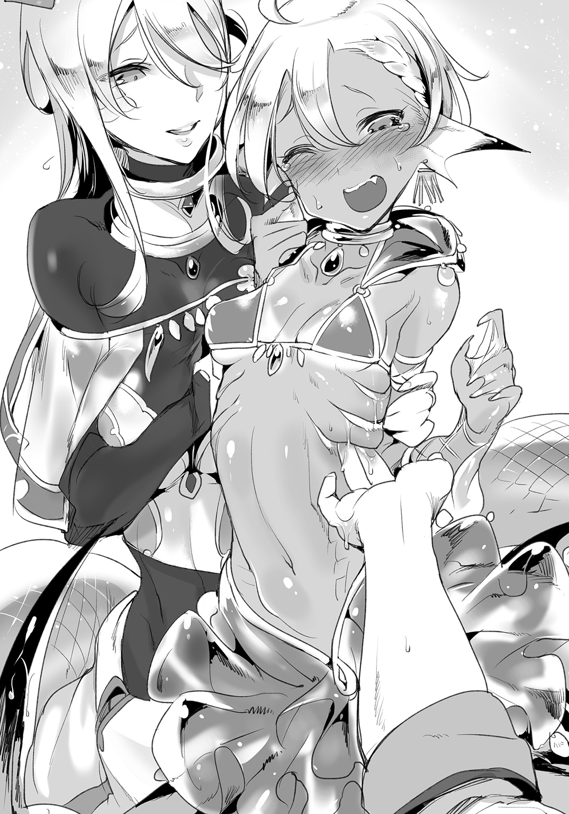
――エラが先だ。グレンはそう判断した。
エラの炎症が原因となり、それが喉まで達しているのだ。
「ありがとう。もういいよ、指を抜きますね」
「ゆ、ゆっくりね」
「はい」
ぬるぅ――と粘液に濡れた指を、グレンは抜いていく。
「あぅ......」
さすがに奥までの挿入は辛かったのか、ルララは安堵したように息を吐いた。
粘液で汚れた指は、サーフェがすかさず消毒用アルコールで浸した手布で拭いてくれた。細菌の感染予防のためだろうが、グレンはすでにその可能性はないと考えていた。
ルララに見えない位置でグレンの指を拭うサーフェ。目の前でわざわざ指を消毒するのは、いくら感染予防のためであっても、ルララが傷つくだろうという配慮からだろう。サーフェはグレンと違って気遣いのできる女性であった。
「ルララさん、質問をしてもよろしいですか」
グレンは尋ねた。
ルララは少しだけ首を傾げたが、すぐに営業の時の笑顔に戻り、
「いいよー？」
と返す。
「一日にどれほど陸に上がっていますか？」
「え、えー......どのくらいだろ？ 日が昇って、それから日が沈むまで、ずっとあの橋のたもとで歌を唄ってるけどー？」
「は......？ では、水中にいるのは四半日のみ......？」
「時計が正しければそうじゃないかなー？」
バカな、とグレンは思った。
人魚は、陸上生活と水中生活を交互に送る。陸上にあがるのは日光浴、体温調節のため。逆に水中に潜るのは食事や睡眠、粘膜の保護のためだ。しかし今のルララの話では、一日の半分以上を陸上で生活していることになる。しかも小舟に乗り、喉や肺を酷使する歌姫の仕事を絶え間なく続けているのだ。
人間でたとえるならばそれは、砂漠のど真ん中で水分補給もせず歌い続けているようなものだ――エラの炎症など当然と言えた。
「な、何故そんなに働くのですか？」
「お金ないからに決まってるでしょ！」
底抜けの明るい笑顔が魅力だったルララ――だが。
その返答の瞬間だけは、真剣な顔つきを見せた。それはルララの偽らざる表情であると思われた。
きっと睨みつける彼女の顔に、グレンは思わず気圧されてしまう。
「ウチはね、お父さんが逃げちゃってお母さんだけ！ それで兄弟は多いの！ ボクは四人兄弟の一番上なんだから、頑張って稼がないと！ 水路街はチャンスが多いんだから、せっかくの喉を使ってお金を稼がないと......生活が......！」
グレンの胸ぐらを摑み、必死に訴えるルララだが――途中で、こんなことをグレンに言っても仕方ないと気づいたのだろう。すぐに手を離して、しゅんと縮こまってしまった。
良くも悪くも、感情表現が豊かな少女だ。
思春期とはこういうものだろうか。
「あっ......あ、ごめんなさい。ボク......」
「いいのよ。先生も怒ってないわ」
「う、うん......」
サーフェはルララの肩に両手を乗せた。我に返ったルララは、しょげて下を向いてしまう。
ようやく理解できた。ルララの仕事への情熱は、困窮した家庭の事情があったのだ。だから必死になり、陸上にあがっては歌い続けた。しかしそのせいで、呼吸器官に影響が出ている。
陸上にあがりつづけたためにエラが乾燥して、炎症を起こしかけているのだ。このまま陸上生活が続けば、やがてエラの炎症が進行し、水中での呼吸がままならなくなってしまう。
「あ、で、でもね！ 大丈夫なんだよ！」
グレンがどう説明したものか考えあぐねていると、ルララから声をかけてきた。
明るい雰囲気の彼女らしく、気まずい空気や沈黙が苦手なのかもしれない。みなが黙ってしまうと、率先して発言した。
「あのね、リンド・ヴルムの中央広場で噴水工事してるでしょ？ あそこで歌ってくれないかって、議会からお誘いを受けてるんだ！ 水路街のお仕事より稼ぎもいいし、噴水の整備が終わったらあそこで歌えるんだよ。だから仕事の時間も減るんだ」
「......そうでしたか」
彼女の歌声にふさわしい報酬。それが得られる日は、どうやら遠くないらしい。
ならばグレンがやることは、大したことではないだろう。
「ルララさん。貴女の症状は――」
グレンが説明しようとしたその瞬間だった。
甲高い悲鳴が、グレンの言葉を遮った。
「な、なにっ？」
あたりに人はいないはず。人目を避けてここに来たのだから――いや、違う。
グレンたちのものではない、もう一つのゴンドラである。
「先生、子供が......！」
グレンにも見えた。親子連れの子供のほうが、ゴンドラから水路へと落ちていたのだ。跳ね上がる水しぶきは、水面でもがいている証だろう。
「誰か！ 誰か！」
母親のほうは必死になって声をあげている。
この辺りは水流が速く、そのため水中生活する魔族ですら通らない場所だ。そんなところへ人間の子供が落ちてしまったらどうなるか。
「水夫さん、助けに行けますか!?」
「俺が行ったら、今度はこのゴンドラのほうが流されちまいますよ！」
どうやら水夫は船を維持するので精一杯らしい。それは、親子連れが乗っていたほうの水夫も同様なのだろう。あちらの船を曳いているのは壮年の男性人魚だったが、溺れかかっている子供を見ても手を出せないのは同じだった。
「ボクが行くよ！」
「ルララさん!?」
「ボクなら泳げる！ すぐ助けて戻るから！」
止める暇もなかった。
グレンが声をかける前に、ルララはその人魚の下半身でゴンドラを叩き、イルカのように跳ね上がる。そのまましなやかな動きで水中へと潜っていった。一連の動きはさすが人魚と思わせるような美しいものだったが――。
「水夫さん！ とにかくあちらのゴンドラに寄せてください！」
グレンは声をあげるが、指示を待たず、すでにゴンドラは移動を始めていた。
そうしている間にも、水しぶきが止まってしまった。溺れた子供がもがく体力さえも失ったのだ。こうなれば水流が速い場所では流されるほかはない。子供がどうなるかは火を見るよりあきらかだ。
ゴンドラが近づく。サーフェは長い蛇の下半身を伸ばした。
「寄せますよ、先生」
蛇の下半身をロープ代わりにして、サーフェは強引に母親が乗ったゴンドラを引き寄せる。力技だったが、ラミア族の強靭な下半身ならば可能であった。
「うちの子が！ うちの子が落ちて......！」
「大丈夫。今、人魚が助けに行きましたから」
今にも飛び込まんばかりの母親を、グレンは必死でなだめた。その一方で、医者としての頭で考える。子供が溺れてからどれくらい経った？ 水中でもがくことができなくなったのならば、水を飲んで呼吸も停止、意識不明になっている可能性が高い。
呼吸を失っているのならば、処置は時間との勝負だ。
やがて――。
「先生！」
「うん！」
水中から、子供が浮かんできた。その腹には褐色の腕が添えられている。サーフェはまたも蛇の尾を伸ばし、ルララから子供を受け取った。ルララは水中から溺れた子供を押し上げて、水面にまで戻してくれたのだ。
サーフェは、子供を船上に横たえた。グレンは素早く上着を脱ぎ、彼の横に膝をつく。
「お母さん、この子の名前は」
「え......よ、ヨハンです......」
「ヨハン君、聞こえますか！ 聞こえますか!? もう大丈夫ですよ！」
ぐったりとした子供に呼びかけるが返事はない。
口元に顔を近づけ、同時にグレンは胸を見た。胸の上下はない――呼吸をしていない。口や鼻から吐息を感じることもない。
「意識不明。呼吸なし。サーフェ！」
「脈もありません。心停止です」
サーフェはすでにヨハンの首に手を当て、脈を測っていた。そのまま首を傾け、子供の気道を確保する。
「心肺蘇生を始める」
胸骨の位置を探り、両手を垂直に押し当てる。そのまま圧迫を繰り返していく。
グレンは魔族専門の医者ではあったが、人間についても基本的な医療の知識はあった。溺水者の応急処置くらいならば心得があるし、それはサーフェも同様だ。
まだ溺れてからそんなに経っていない。グレンはそう信じ、胸の圧迫を繰り返す。三十回を超えた段階で、ヨハンに人工呼吸を施そうとしたが――。
「げほっ！」
勢いよく水が吐き出された。
グレンは子供が吐き出した水を顔に浴びてしまうが、それよりも子供が呼吸を取り戻したことのほうが重要だ。
やはり飲んだ水の量は多くなかったようだ。素早く首を傾け、吐き出した水が呼吸を妨げないようにする。
「えほっ......げほっ......！」
「ああ、ヨハン......！」
意識を取り戻した少年を、母親が抱きしめた。子供のほうはなにが起こったのかわかっておらず、ぼけっとしている。
「意識不明の時間も短かったので、後遺症はないと思います。ですが念のため、あとで良い医者に診てもらったほうがいいでしょう」
「ありがとうございます......！ 本当に......！」
グレンの行った処置は本当に基本的なものだ。それですぐにヨハンが意識を取り戻したのは、水中に潜った人魚の功績が大きい。瞬時に飛び込んで、短時間で子供を引き上げたルララがいたからこそだ。
「サーフェ、ルララさんは......？」
「グレン先生、それが」
サーフェは、先ほどからゴンドラの周囲を捜している。波を立てる水面が邪魔をするなか、必死に目を凝らしていた。
「ルララさんが浮いてきません」
「っ」
そこからの魔族医師としての、グレンの判断と行動は早かった。
息ができない――。
水は、人魚にとって聖なるものだ。全ての生命を包みこむ水は、人魚にとってなくてはならない、当たり前のようにそこにあるもの。人間にとっての空気と同じだ。
だが、今のルララ・ハイネにとっては違う。
呼吸ができず、苦しい。
（こんなの、おかしい......！）
人魚が水中で息ができないなど、ありえない。
だが現実に、ルララは窒息していた。子供を水面にあげた段階で、すでにルララの呼吸困難は始まっていた。どうにか子供だけでも助けようとしたが、その結果、自分は流れの速い水に流され、沈みつつある。
遠くなる意識の中、もがくこともできずにいた。
必死で口をあけ、ぱくぱくと水を飲み込もうとする。エラ呼吸の人魚は、口腔から水を取り込みエラ器官を通すことで酸素を得ている。陸に上がった魚が口を開閉させるのと同じ理由で、呼吸が苦しくなると水を飲もうとする。
だが――どれだけ水を飲んでも、一向に呼吸が回復しない。
混濁した意識は、ルララから思考を奪っていく。彼女が考えたのは、泡になって消えた人魚の話だった。
『恋人の橋』の物語。
ルララが、あの医者と看護師のカップルに話したのは、かつて実際にあったことだそうだ。戦争から逃げ延びた人間と人魚の恋人は、安住の地がないことを嘆き、手をつないで水中に沈んだという。
溺れる二人の吐息は泡となり、やがて二人は泡に包まれて天国で一緒になったのだとか。
自分も死ぬときは泡になるのか。
もう泡さえ吐き出せず、必死で水を飲むしかないというのに。
（誰か――）
声もでない。
走馬灯のごとく駆け抜けるのは、自分の生涯だった。
父は母と結婚し、幼い自分と兄弟たちを連れて水路街へ移住した。戦争は終わったのだ。ここで自分たちは新しい生活を始めるのだと、父は意気込んでいた。
しかし、水路街の生活は上手くいかなかった。
新しい街、新しい生活に馴染めるほど、ルララの父は柔軟ではなかった。水路街はできたばかりで、誰もが水路街で安定した生活を得ようと必死だったのだ。ルララの父はすぐに逃げ出してしまった。残された子供たちの世話と、生活費を稼ぐことは母だけでは荷が重く、長女ルララが率先して働かざるを得なかった。
裏通りの水路の営業は、辛いこともあった。娼婦かなにかと勘違いして肉体関係を迫る客もいたし、歌が下手だと難癖をつけて金を支払わない客もいた。同族のご近所さんが親切だったのが、せめてもの救いだ。
議会の代表、スカディ・ドラーゲンフェルトがスカウトに来てくれて、中央広場で歌えることになった。これでやっと、苦しい生活をしなくて済む。母と弟妹に美味しいものを食べさせてあげられる。痛む喉を押さえて、笑顔で歌わなくて済む。
そう思っていたのに。
（こんなの――こんなのやだよ）
ルララは水中に手を伸ばした。
水面からは夕焼けの光が差し込む。あちらが上だ。だが、人魚であるルララには『呼吸が苦しければ水上にあがる』という考えがなかった。当然だ。呼吸ができないならば水に潜り、エラでもって呼吸をすればいい。人魚にとっては水上のほうが危険が高いのだ。
（誰か、助けて）
水中で叫んだ。
しかし水に満たされたルララの喉は、声を出すこともなかった。
その声は誰にも届かないはずだったのに――。
「必ず助けます」
水中で、声など聞こえるはずもない。
しかし、ルララの手を引いたのは先ほどの医者。グレンと名乗った彼は、水中で確かにそう言った――ような気がした。
混濁する意識の中で、グレンの決然とした声が、確かに聞こえたのだった。
グレンの判断は迅速だった。
ルララが溺れた。そう判断し、着ていたチュニックを脱いで水路へと飛び込んだのだ。人魚が溺れることなどあるのか、と笑う人もいるだろう。しかし。
（実際には過去に例がある......）
グレンは流れが速い水路を潜った。ルララの目立つ金色の体色や、ガラスの澄んだ輝きは、水中でも光を反射してよく見える。見つけることは簡単だった。
流れに逆らわず、力を抜く。ルララはすでに意識がないようで、泳ぐこともせず流されるままだった。逆に言えば、グレンも力を抜けばルララと同様に流され、彼女のほうへと向かうことができる。
グレンがルララに近づいた。彼女を抱きとめるが、返答はない。目は半分以上閉じ、意識混濁の状態にあると思われた。
彼女はぱくぱくと口を開閉させていた。無意識のうちに、体内に水を取りこもうとしているのだ。
（人魚の溺れる理由は――水中で、誤って肺呼吸をしてしまうから）
人魚は喉にある弁によって、肺呼吸とエラ呼吸を使い分ける。空気を取り入れるか、あるいは水を取り入れるかを、その弁によって切り替える。しかし、老齢であったり、あるいは喉に疾患を抱えている人魚が、水中で急なアクシデントに見舞われてしまうと、この弁の切り替えに失敗してしまうことがあるという。
ルララもまさにそれだ。
彼女の喉やエラは、乾燥のために炎症を起こしていた。その状態で、子供を助けるために勢いよく飛び込んだ。ルララは今、肺呼吸をして、肺に水を取り込んでいるのだ。
しかも、人魚は息苦しくなると、水を飲もうとする。これはエラ呼吸の際は通常の反応であり、どの人魚も無意識に行う行動だが――誤って肺呼吸の状態になっているのに、その上でさらに水を飲めば、溺死への時間はさらに短くなる。
ルララが溺れ、意識を失いかけているのはそういう理由だった。
人魚の溺死体の資料を、グレンはアカデミーで何度か読んだ。肺呼吸とエラ呼吸を持ち合わせるからこそ、人魚は溺れてしまうのだ。
（対処は......一つ！）
グレンのするべきことは明白だった。ルララの肉体を支えながら、グレンは意を決して。
水を飲んだ。
「が............んぐ！」
飲んだ水は口に貯める。
そしてそのまま――ルララの口に、自分の口を押し当てた。
「―――――ッ!?」
ルララの目が見開かれた。よかった。まだかろうじて意識はあったらしい。グレンはルララの口に舌を侵入させ、そのまま口内の水をルララの喉へと流し込んでいく。
同時に、ルララを抱きしめる。彼女の背中を締めつけ、弓なりに反らせる。そのままさらに水を流し込むことで行う、水中人工呼吸だった。ただし呼吸と言っても、肺呼吸に対して行う処置ではない。
（このままいけば......！）
グレンは息を止めたまま、慎重にルララの様子を見定める。
人魚の背を弓なりに反らすことで、体内の水道を確保する。口からエラにつながる水の通り道――水道が、気道や食道と同様、人魚の体内には存在している。働きの弱った弁をもう一度動かし、水中で正しくエラ呼吸を取り戻させる。
これがグレンの行った水中人工呼吸の目的だ。
ただし――これは人間の行うべき処置ではない。なにしろグレンは肺呼吸しかできない。水中で水を飲み、それをルララの口に流し込めば、当然ながらグレンは無呼吸状態を続けることになる。
本来は、人魚が人魚に対して施すべき処置なのだが、今のグレンには他の選択肢がなかった。
酸欠により。グレンもまた頭がぐらぐらとする。視界が灰色で覆われ、ひどい耳鳴りまでしてきた。
だが。
「ッ！」
グレンは、ルララの脇腹に回した腕から、水流を感じた。エラが開き、水が流れたのだ。
ルララのエラ呼吸の機能が取り戻されたのだ。
（よか......た......っ！）
しかし、そこまでだ。
意識が遠のくグレンには、回復したルララをゴンドラまで運ぶ力は残っていなかった。一方でルララも、エラ呼吸を始めたとはいえすぐに意識が戻るわけではない。混濁状態から泳げるまで復活するにはまだ時間がかかる。
（どう......したら......！）
グレンは頭が働かない。それくらいしか自分には取り柄はないのに。
なにかないか。流木でもなんでもいい、捕まって浮き上がることができるものは。
無意識に手を伸ばした先に、白い釣り針のようなものが見えた。
（釣り......針？）
その釣り針は神秘的な光を放っている。と同時に、ぬらぬらと光を反射させている。
鱗のあるその釣り針は、しゅるるると動いてグレンとルララの両方に巻きついてきた。グレンはそこでようやく、これが釣り針などではないと気づいた。
世界が反転する。
水中で上下もわからぬまま、巨大な白蛇の尾に、二人は持ち上げられた。水中から一転して、明るい外の世界に飛び出す。
夕焼けが見えた。
「ぇほっっ！」
水を吐いて、グレンもまた呼吸を取り戻した。
「げほっ、が......はっ......」
息を吐く。呼吸できることが素直にありがたい。
二人を自分の尾でもって水中から引きあげたサーフェは、必死な顔つきでゴンドラの上に下ろした。
「あ、ありがとうサーフェ、助かったよ......」
「さすがに二人を持ち上げるのは厳しいです！」
サーフェもまた肩で息をしている。しかしその表情には安堵の色が広がっていた。溺れかけた子供を助けたルララが溺れ、今度はそれを助けたグレンが溺れかけるという、溺水の連鎖を断ち切ったのはグレンの頼れる助手だった。
「まったくもう、なにも言わずに飛び込むんですから！ グレン先生はもう少し慎重に行動を......」
「お説教は......後でね」
ルララを見る。
呼吸を取り戻した彼女は、真っ赤な顔で震えていた。まだどこかに異常があるのか、疾患を抱えているのかと思ったグレンだったが――。
「いつまで抱き合っているのですか！」
サーフェの叱責で、またも自分の失敗に気づいた。
グレンの腕の中で、小さな人魚の歌姫は、恥ずかしさで震えているのだった。
高らかに。朗らかに。
リンド・ヴルム中央広場。豪奢に作られた噴水を背にして、ルララ・ハイネの歌声が響き渡っていく。
「――――――――――♪」
人も魔族も区別なく、行きかう人は皆足を止めて、ルララの歌に聴き入っていた。
グレンやサーフェも、そんな群衆に紛れてルララの歌を楽しんでいた。
ルララを助けてから、およそ半月後。
中央広場の噴水の工事は終わり、新たに完成した噴水は、メロウ水路街から直接水を引いた独特なつくりであった。水路街から水を引いた理由は単純、ルララが直接泳いで、噴水の前に移動できるようにするためだ。
噴水の一部には、大理石で作られたルララ専用の座席がある。人魚の体に合わせて作られたステージは、ルララが自然な姿勢で歌えるよう工夫されていた。
おまけに水に沈んでいるので、ルララは胸から下を水に浸かったまま歌っている。
「――――――――――♪」
古代語の歌が終わる。
相変わらず伸びやかで、神秘的な響きの歌であった。
拍手喝采に、ルララは笑顔で手を振っていた。満面の笑み。八重歯の眩しい快活な歌姫。やはりルララには笑顔が似合うと思われた。
「ありがとー！ みんなありがとー！ 次はお昼にここで歌うからね！ みんなまた聴きに来てねぇ！」
わざわざ水路街に行かずとも、広場で人魚の歌が自由に聴ける。
そんな前評判で、ルララの歌を聴きに来たものも少なからずいる。メロウ水路街は独特の観光地であるし、これからも客足は絶えないだろうが、ルララはむしろリンド・ヴルムの中央で歌うことで、数多くの新たな聴衆を手に入れていた。
このパフォーマンスはリンド・ヴルム議会からの要請でもあるらしい。改装した噴水の目玉となるべく、議会の代表スカディが直接ルララを勧誘したそうだ。ゆえに、現在のルララは歌と引き換えに銅貨を稼ぐのではなく、月給制。決められた時間に噴水公園で歌うことで、リンド・ヴルムに時間を知らせる役割も兼ねている。
時告げ鳥ではなく、時を唄う人魚。
生活もだいぶ改善されたらしく、ルララの笑顔に曇りはまったく見られなかった。
「ルララさん」
群衆がはけた頃を見計らって、サーフェが声をかけた。
「あっ！ サーフェお姉さん......と、グレン先生......」
「やあ、ルララ」
片手をあげるグレンの姿を認めた瞬間、ルララは肩まで水に沈んでしまう。彼女の腕ヒレが水に濡れ、さらにドレスの袖のように水中で広がった。
ちなみにグレンが彼女を呼び捨てにしたのは、あれからしばらくして『さん付けだと落ち着かない』と、ルララ本人から言われたからだった。その割にサーフェはさん付けのままだが――サーフェは誰に対しても丁寧なので、変えなかったのかもしれない。
「その後、お加減はいかがですか？ ルララさん」
「うん！ もらった薬のおかげで喉の調子もいいし、歌もばっちり！ もう溺れたりなんかしないよ！ その......先生たちに、たくさん迷惑をかけちゃったし」
ルララはちらちらとグレンのほうに視線を向けてはくるのだが、グレンと目を合わせようとはしない。会話をするのもサーフェばかりだ。
まあ、あんなことがあっては仕方ないとは思う。
必要な処置だったとはいえ、水中で口づけを交わした挙句、しっかりと抱きしめてしまったのだから。ルララにとってみれば、好きでもない男にされたいことではないだろう。ましてや思春期真っ盛りの花の人魚。
「渡した保湿剤は塗ってる？」
「は、はい......えっとね、陸上に上がるときにエラに。あと、薬飴も歌う前に......」
「うん。大丈夫だね」
溺れたルララを助けたとはいえ、それだけではグレンの仕事を為したとはいえない。肝心の喉やエラに対する処置がまだだからだ。
グレンはルララを助けた後、診療所に戻って薬を製作した。サーフェの手も借り、エラの乾燥を防ぐための保湿剤。そして、喉の炎症を抑えるために、ハーブのエキスを飴にしてルララに渡したのである。
今日はその後の経過を見るために、噴水公園に立ち寄った意味もあるのだが――。
ルララは一向に目を合わせてくれない。それどころか、さらに水に沈み、ぶくぶくと泡まで立てている。褐色の肌でもよくわかるほど、頰が赤く染まっていた。
「年頃の娘を手籠めにしたから、怒っているのですよ」
サーフェがぴしゃりと言い放つ。
人工呼吸の件を言われてしまうと、グレンも返す言葉がない。
「ち、違うもんっ！」
ルララは、水から跳ね上がる。
噴水の大理石に手をついて、グレンに顔を寄せた。
「せ、先生には本当に感謝してるし、今ボクが歌えているのだって、先生のおかげで......っ！ だから、だからぁ......！」
「僕も君が元気でなによりですよ、ルララ」
「うぅぅぅぅ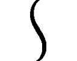ッ！」
何を言うべきか、ルララは結局見つけられなかったらしい。
ばちゃんと水に沈んでから、そのまま水路をたどって中央広場を離れていってしまった。彼女の左右に揺れる尾ひれが、時折水面に露わになる。水路はよほど浅いらしく、逃げる彼女の様子がよく見えた。
「......本格的に嫌われたかな」
「そう思うのでしたら、グレン先生にはまだまだ人生経験が足りないかと」
「なんで？」
「さあ？」
つんと澄ましたサーフェはどこまでも冷たい。
「けれど、ルララさんは妹のように感じますから。私としても、グレン先生とは仲良くしてほしいなと思いますよ」
「......本当に？」
「ええもちろん。あくまでも、ほどほどに、ですが」
多段式の噴水は、水を噴き上げて中央広場を彩る。サーフェは複雑な機構の噴水を見て、ようやくグレンに笑いかけてくれた。ティサリアの時のように犬猿の仲になることもなく、むしろサーフェはルララを気に入っているようだった。
「あのさ、サーフェ」
「なんでしょうか？」
「考えたことないかな。人生のほとんどを水中で過ごすマーメイドに、どうして肺があるのかなって」
もうルララの姿はないが、それでもグレンは彼女のことを考えていた。
マーメイドは本来、陸上に上がる必要がほとんどない。陸に上がり日光浴をするのも、体温調節や細菌を殺すためと言われているが、それは浅瀬でも可能なことだ。なにも体に肺機能を持つほどに進化する必要はない。
「クトゥリフ様のようなことを仰いますね。考えたこともありませんでした」
グレンの師クトゥリフ・スキュルは、今でこそ大病院の院長であるが。
しかし、本来の彼女は、『魔族とはなにものなのか』『魔族はどのように進化して今の姿になったのか』を研究していた、純粋な学究の徒である。その過程で魔族の身体について徹底的に調べ上げた結果、魔族医療の権威になっていたという認識が正しい。
グレンは思う。
マーメイドは水中と切っても切り離せないが、同時に切り離せないことがもう一つある。
「きっと、歌うためなんだと思うよ」
「歌うため」
水中では、陸上のように歌は響かない。船乗りたちを惑わせるような美声も、水中では意味をなさない。
「空気を吸い込んで、綺麗な声で歌うためなんだ。だからルララも、喉が嗄れても歌うことをやめなかったんじゃないかな」
「......らしくなく詩人ですね、先生」
グレンは照れたように笑ってしまう。確かに、自分らしくない結論だ。
師クトゥリフが聞けば、鼻で笑ってしまうような仮説だろう。
「でも、私の好きなお話です。心中した人間とマーメイドの話より、ロマンチックだと思いますよ」
サーフェは、目じりの鱗をゆがめて笑った。
人魚には悲恋がつきもので、だからこそロマンチックではあるのだが――たまには悲恋と関係ない、それでいてロマンのある話も悪くないのではないだろうか。
今度、ルララにもこの仮説を聞いてもらおうか。
まだあどけない歌姫がどんな反応を返してくれるのか。グレンは期待に微笑んで、人魚が去っていたほうを見つめるのだった。
午前中の水路は、日の光が水を照らし、キラキラと乱反射していた。
まるで水路街の名物、澄んだメロウガラスのようだった。
症例３ 医者嫌いのフレッシュゴーレム
多くの魔族の医療を学んだグレン・リトバイト。
その知識の幅は多岐にわたる。
たとえば、老齢のドライアドの寿命を延ばすために、接ぎ木の要領で弱った枝を補強することもできる。病で形態維持に支障のあったスライムのために、特製の培養液を作り、回復させてやったこともある。
魔族のみならず、グレンの知識は植物学や化学はおろか、怪しげな錬金術やオカルトにも造詣があった。魔族という、人間とは異なる種族に対しての治療は、幅広い知識がなければ務まらないのである。
もっとも、彼の師であるクトゥリフは、さらに広範な知識を備えている。そういう意味ではグレンはまだまだ未熟だ。人生の大半を魔族医療のために捧げていても、まだなお足りない部分があるのである。
だからこそ、限界は当然存在する。
たとえば、竜種。
魔族の中でも謎が多く、どのような進化を経て今の姿になったかわからない――いやむしろ、全ての魔族の原型にして頂点ではないのか、との仮説も立てられるような、神秘の生物。巨大な翼と四肢を持つかと思えば、当たり前のように人型に変じたりもする、この魔族最強の種に対しては、グレンも無知であると言わざるを得ない。
そもそも、竜が病にかかるのか。怪我をするのか。およそ『医学』という言葉が成立してから、グレンの知る歴史において、竜の病も怪我も実例がない。
だからこそ――。
「よ、ようこそリトバイト診療所へ......」
リンド・ヴルム議会代表。
ついたあだ名が『竜闘女』。
リンド・ヴルムを今の形に変えて、現在もなお運営に尽力している街一番の権力者。
スカディ・ドラーゲンフェルトが診療所へ訪れたのを、引き攣った笑顔で出迎えるしかなかったのだった。
小柄な体軀。
そしてその小柄な体に似つかわしくない、天を衝くねじれた角。
絹に金糸の装飾を施したローブでもって、その体はすっぽり覆われている。角には紐が結ばれ、その紐に吊られた白のヴェールが顔の前面を覆っていた。ヴェールのために表情はうかがえないが、巨大な角と、ローブの裾から覗く尻尾はまぎれもなくドラゴンのものだ。
戦争後、リンド・ヴルムを今の形にした実力者。
スカディ・ドラーゲンフェルト。
経済力と政治力、指揮力でもって、今現在もリンド議会を仕切っている。護衛をつけてはいるが、竜を襲うような愚か者など存在するとは思えないので、護衛など必要性は疑問である。
あちらこちらで名前を聞く人物だが、実際に会うのはグレンもこれが初めてだった。グレンの師クトゥリフとは旧知の仲であるらしく、クトゥリフが街に大病院を構えるきっかけもスカディの後援があったからだと聞く。グレンにしてみれば、師匠の出資者にあたる人物なわけで、対応に間違いのあっていい相手ではない。
「――――――」
「あ、あの............？」
診療所の入口で、スカディは静かにたたずんでいた。
「診療所に御用でしたら、奥へどうぞ？」
サーフェも微笑みながら促すのだが、スカディは動かない。
スカディは身長だけを見るならば子供のようだが、侮ってはならない。相手は都市や国を丸ごと滅ぼすとされる竜種だ。もちろんいきなり暴力を振るわれる理由もないが、強大な力を持っていると思うだけで恐れてしまう。
ある日のことだ。スカディが戯れで闘技場の試合に参加したら、あまりに強すぎるので永久的に出入り禁止となった――そんな逸話を知っている身としては、彼女への対応に慎重にもなる。
「あの」
「――――――」
スカディはなにも言わない。
いや、よくよく見ると、ヴェールから垣間見える唇が、わずかに震えていた。なにかを喋っているようだったが――やはり声は聞こえない。
まさかとは思うが。
声が小さすぎるのだろうか。
「失礼する！」
スカディの後ろから、別の人物が姿を現した。
「こちらがリトバイト診療所で間違いないな？」
「そ、そうですが」
「私は苦無・ゼナウ。竜闘女様の側近にして護衛である」
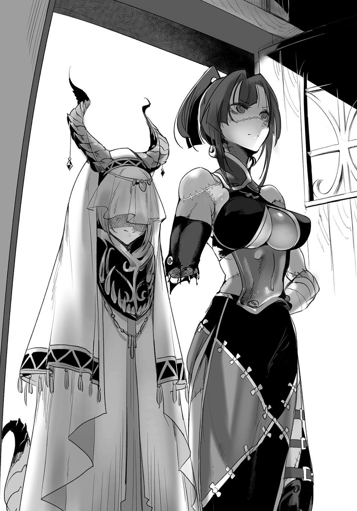
鋭い眼光の女性であった。
黒髪を高い位置で括っている。襟元の合わせ方や、服装の意匠が、大陸中央では見られないものだった。和風、あるいは東洋風と呼ばれる、人間領の最果てで用いられるデザインに酷似している。『クナイ』という名前の響きも、どこか東洋風を感じさせた。グレンも東の出身なので、むしろ彼女の服装はなじみが深い。
が――。
そんなことよりも、彼女の全身に走るツギハギの縫合痕がなにより目立つ。色を失った死肉のような部分も見られるが、苦無自身は平然とした表情だ。しかも右腕は、肘から先がばっさりと切り落とされており、つなぐ先を失った縫合糸が何本か垂れ落ちている。
彼女のうなじには東洋の書籍『マキモノ』が見られた。最初は髪をまとめるための、変わったアクセサリーだなと思ったグレンであったが――よくよく見てみると、『マキモノ』は苦無の首を貫通して突き刺さっていた。肉と骨を通って反対側に突き抜けている。
明らかに人間ではない。
生きる屍、リビングデッドやゾンビの一族は存在しているし、苦無自身も死体のごとく顔色が悪い。だが、縫合痕や『マキモノ』に関しては、それら生きる屍の種族にも見られない特徴だ。グレンの知る不死者の魔族とは、少々趣が異なる気がする。
「あ、ええと」
「貴殿らに竜闘女様の御言葉をお伝えする！ 勿体なくも竜闘女様直々の御言葉である、伏して拝聴するように！」
随分と威圧的な態度だった。スカディ・ドラーゲンフェルトは権力者ではあるが、他者に対して平伏を要求するような人物ではないはずだ。
「グレン先生」
サーフェが、ツギハギの側近、苦無には聞こえぬよう耳打ちする。
「噂ですが......スカディ様の護衛は、いささか過剰なほどに彼女の信奉者であるとか」
「そこ！ 伏して拝聴しろと言っただろう！」
どうやら高圧的なのはあくまで苦無ばかりであるらしい。スカディのほうは小声かつ早口でなにか言っているようだが、相変わらず言葉の断片も聞き取れない。もしかしたら、無礼な護衛の態度を謝罪しているのかもしれない――。
そうだったらいいな、と思うグレンだ。主のほうまで非常識では手に負えない。
隻腕の護衛は、まっすぐにグレンの目を見て。
「いいか！ 『私の護衛が、先日の賊徒との戦いにおいて、右腕を損傷、そのまま行方知れずとなってしまった。ついては街から右腕を捜し出し、グレン医師の縫合の技術でもって治療してほしい』――とのことだ！ 貴殿ら、ちゃんと聞いていたか！」
聞いてはいた。
聞いてはいたのだが、苦無がスカディの言葉をそのまま代弁しているせいで、主格が誰なのかわかりづらい。護衛とは、つまり苦無のことでいいのだろう。ならばスカディは自分の疾患で診療所を訪れたのではなく、苦無のために来たということか。
肘から先。腕を失った護衛。
「戦闘があったのですか？」
「『以前から、この街に潜む奴隷商を追っていた。先日ようやく苦無が追い詰めたと思ったが、逆に罠に嵌められた。十人相手に斬り結びつつ逃げたが、腕をどこかに落としてしまったらしい』............うう、面目次第も御座いません、竜闘女様！」
苦無は、グレンと話しているのかスカディと話しているのか。
ともあれ、状況は理解することができた。よもや竜の治療を頼まれてはどうしたものかと思っていたグレンだったが、どうやら治すのは苦無の腕らしい。しかも縫合するだけならば、グレンの外科手術の技量でどうとでもなる。
竜の鱗には針が通らないかもしれないが、苦無の姿――縫合痕ばかりの外見を見る限り、彼女が肉体を損傷するのはしょっちゅうなのだろう。
しかもそれで苦しみを感じていないあたり、やはり彼女は不死者の系列に連なる魔族なのだと思われた。十人相手に斬り結んだというのも気になる。罠に嵌められた状況からの撤退戦において、腕の一本で済んだというのは、苦無が手練れであるという証なのではないか。
「『ほかの配下に捜させているが、まだ見つからない。発見次第、疾く苦無に縫合してやってほしい』――との命だ！ 竜闘女様、なんと厚いお心で御座いましょう！」
「――――――」
「はっ！ この苦無・ゼナウ、竜闘女様のために身命賭す覚悟に御座います！」
暑苦しい、とグレンは思った。
苦無が、何故蚊の鳴くよりも小さなスカディの声を聞き取れるのかも謎だったが、ともかく苦無の献身ぶりはすさまじい。
死ねと言われたら自ら腹を裂きそうな気迫まで感じられる。まあ、不死者が腹を裂いても死ぬとは思えないが。
「スカディ様。もちろん、当診療所は治療施設です。患者さんの治療には全力を尽くします――が、二つほど質問をしてもいいでしょうか？」
「『なんでも問うといい』――との仰せだ！ だがもちろんなんでもいいわけではないぞ町医者。自分の身分を弁えてだな......！」
スカディとの会話に一々、苦無を挟まなくてはいけない。正直グレンにしても鬱陶しいと感じるものがあった。
ただ通訳してくれればいいのだが、苦無は余計なひと言を添えるのが得意なようだ。
「まず、何故こちらに？ スカディ様は、僕の先達であるクトゥリフ先生と旧知と聞いています。であれば、中央病院に行ったほうが......」
「『行ったが顔も見ずに断られた。優秀な弟子がいるからそいつに頼めと言われた』――とのことだ！ 竜闘女様の頼みを断るとは、なんたる不敬か！」
つまりはいつもの、グレンの師匠の無茶振りなのだった。隣でサーフェが『あのタコ女』と毒づくのが聞こえる。
しかし、グレンとしては、スカディ直々の仕事を回してくれるというのは、ただの無茶振りではないような気がした。相手は街一番の有力者だ。そんな相手とのつながりができるというのは、今後の診療所の運営にしても得になるはずだ。
「では、もう一つの質問ですが......ええと、苦無さんのことなのですが？」
「私か」
「種を知らねば治療に差し障りがあるかもしれません。どのような魔族であるか教えていただきたいのですが」
「......『苦無は魔族ではない』」
苦無が表情を殺した。
スカディの代弁は続けていたが――急に表情を失くした苦無は、まるで人形のようだった。ツギハギの縫合も相まって、なおさら作り物めいた面影を感じる。
「『苦無は元々人間である』」
「は......人間？」
「『人間の遺体をつなぎ合わせて作られた死肉の人造である。極東の野心あふれる医者が、手ずから生命を生み出そうと実験し、その結果作られた。苦無は、人間の死体でもってできているため、魔族として生まれたわけではない』」
グレンは絶句した。
命をつなぎ、癒す仕事をしているグレンだが、未だかつて命を生み出した者の話は聞いたことがなかった。そのようなことが許されるのだろうか。
ゾンビやグールといった不死者の眷属と思われた苦無は、死体であるという点は同じでも、人の手によって生成されたものであるらしい。
ゴーレムとは、グレンの記憶によれば、泥をこねて作り上げた人形に命令し、意のままに操るという古の秘術ではなかったか。
「『そのため......苦無は、医者嫌いである』」
そして最後に、グレンが頭を抱えなくてはいけないような注意事項が、苦無を通してスカディから付け加えられてしまったのであった。
しゅん――と寂しげに、眉が下がる。
まるで捨てられた子犬のようだ、とグレンは思った。スカディは多忙であるとのことで、事情を話したらすぐにリトバイト診療所を去っていった。護衛すべき主を失ったフレッシュゴーレムは、口には出さずとも明らかに落ち込んでいた。
スカディのそばにいたときの堂々たる態度は欠片もない。
「苦無さん？ ......とお呼びしてもいいかしら？」
「好きに呼べ。貴殿はサーフェンティット・ネイクス殿だな。薬学に通じるラミア族であり、かつネイクス家は薬品の売買によって財を成したと資料で見た。サーフェンティット殿も薬学に関しては並ぶ者なき才媛とか」
「私は出奔いたしましたので、実家は関係ありません。ただ、苦無さんには一つお聞きしたくて」
「なんだ」
「グレン先生は確かに多くの方面で博学ではございますけれど、ゴーレムだなんていうオカルトに関しては畑違いです。古の魔術など扱えるはずもない。我々は観察と臨床に基づいた科学的な治療しか行えません......それでも構いませんの？」
「元より町医者にそのようなことは期待していない。ここに」
とんとんと、苦無は自分のうなじを叩く。首の後ろ側、頸椎のある位置を貫通している『マキモノ』を指しているようだった。
「このマキモノに、私のゴーレムとしての命令が書かれている。今は自律的行動をとっているが、それもこの命令書に許可する呪言が記されているからだ。これを書き換えることができるのは我が主、竜闘女様のみだ。他の者にどうこうできるものではないし、触らせるつもりもない」
強い口調の苦無。
いずれにしろ、なんらかの武術を修めているだろう苦無のうなじに触れる者がいるとは思えなかった。竜の護衛なのだから、相応の実力は伴っているはずだ。
「竜闘女様が期待なさっているのは、縫合の技術だ。我が体は糸で縫うだけでよい。けれども、その地味だが重要な仕事を、勿体なくも主直々に貴殿らを任命なさったのだ。栄誉と心得よ」
ここは大人しく、苦無の言うことに従うべきかとグレンは思った。
フレッシュゴーレムの製造などまったく門外漢のグレンだったが、苦無の言う通り、失った腕を縫合するのであればそれは医者の仕事だ。苦無の態度には問題があるものの、仕事をすること自体に異議はない。
「だが」
苦無は、睨みつけるように。
「竜闘女様の御考えとは異なるが、私は町医者などに頼るつもりはない。自分の腕の縫合くらいは自分でやる。最終的に体が万全となれば、竜闘女様もお喜びだろう」
「は......？ ど、どういう意味ですか？」
「貴殿の手は借りぬという意味だ。私は私で、勝手に腕を捜し、縫合する。私は医者が嫌いでな、本来は診療所にいることさえ我慢ならんのだ」
苦無の無礼ぶりには底がない。
グレンにも察しがついた。彼女はあくまで、スカディの側近としてこの場にやってきたのだ。彼女自身は、グレンに診てもらうつもりなど微塵もなかったということだ。
「邪魔をしたな」
それだけ言って、苦無は診療所を出て行ってしまう。
止める暇などなかった。まるで初めから全て決めていたようだった。医者嫌いというのは本当なのだろう。一刻も早く去りたいという感情が、ひしひしと伝わってくるようだった。
「医者嫌いの患者さんは、まあ、皆無ではありませんけれど......」
サーフェは頰に手を当てる。目じりの鱗を撫でるようにしてため息をついた。
「大抵は病状が進行すると、やむに已まれず診療所にいらっしゃいますよね。苦痛には勝てないということかしら。けれど、苦無さんはちょっと違うかしら、グレン先生？」
「そもそも、苦痛ってあるのかな？ フレッシュゴーレムだっけ......」
苦無の様子を見る限り、縫合のほどけた右腕を苦痛に思っている様子はなかった。彼女ならば、それこそ首を切断されてもけろりとしているかもしれない。
だが、だから放置しても良いということになるだろうか？
苦無は自分で腕を縫合すると言っていた。しかし、左腕だけで自分の右腕を縫い付けるなどという芸当が果たして可能か。縫合する右腕を固定しつつ、縫合糸を肉に通していく――左腕一本では難事であることは明らかだ。
それに。
「片腕だと生活も大変でしょ」
「あら、『生活』って？ 死人のようですけれど？」
「でも患者さんには健康になってもらわないとね。大体、死人の患者さんなんて珍しくないじゃないか。こないだもゾンビのフランクさん、防腐剤をもらいに診療所まで来たでしょ」
「あらあら、言われてみれば......」
防腐剤の製作をしたのはサーフェ自身なので、彼女は間違いなくとぼけたフリをしているのだ。死人だから放っておけばいいのに、などとサーフェは言わない。
それに、グレンも放っておくつもりなどなかった。
「ちょっと行ってくるよ。というか、そもそも苦無さんの右腕を捜さなくちゃいけないんだよね？ だったらどっちにしても出かけなきゃ」
白衣のコートに、外出先で使うための緊急医療道具が詰まったバッグを用意するなど、グレンは早速外に出るために準備をする。
「悪いけどサーフェ、診療所はお願い」
「お任せください。妖精さんたちもいますから」
診療所の手伝い妖精たちは、スカディ来訪から始まる一連の騒動もなかったかのようにとてとてと床を走り回っている。彼女たちは職務に熱心ではあるが、熱心すぎて少々周りが見えていないきらいがある。
サーフェが手を叩き。
「はい、整列」
「せいれつー」「はーいー」「つぎのおしごとですかー？」
何人もの妖精たちが列を成して並んだ。現在、これといって明確な仕事を持たない手空きの妖精たちが、サーフェの号令に従ったのだ。
「これからグレン先生は出張診療および手術となります。右手を失くした苦無・ゼナウさんの縫合を行います。場合によっては出先での縫合も予測されますので、消毒用アルコール、縫合針と糸をお願いします。それと、何人かは街に出て苦無さんの右腕を捜してあげてくださいね」
「しょうちー」「りょーかーい」
指示を得て、妖精たちはぱっと花が開くように散開していく。すでに診療所の外までとてとてと駆け出す者もいた。危機察知や自衛の能力に優れた妖精たちは、通りに出た途端馬車にひかれるような下手を打つとは思えないが――それでも、どこか危なっかしさを感じずにはいられない光景だった。
「はい。これで下準備はばっちりですね。では先生、お気をつけて」
「うん......手回しがいいね、サーフェ」
「もちろん」
サーフェはその長い尾をするすると伸ばす。グレンの横を通り抜け、すでに診療所の扉を開けていた。
「私は先生の助手ですから。ご一緒できなくても、なんでもお手伝いいたします」
「助かるよ......じゃ、行ってきます」
サーフェは尾を自分のもとに引き寄せて、手の代わりにうねうねと振ってみせる。サーフェが手の代わりに尾ばかり使うことが多いのは何故なのだろうか。ものぐさなのか、それとも別の理由があるのか。
準備を終え、グレンは苦無の後を追うために、通りへと駆け出す。
雑多な魔族や人間たちが入り乱れる、南の大通り。グレンは左右を見渡してみるが、その体にツギハギの痕を残すフレッシュゴーレムの姿はどこにも見えなかった。
どちらへ行ったのか。
そもそも苦無を追えばいいのか。それとも彼女の右腕を捜すべきなのだろうか。
飛び出したはいいものの、グレンは迷ってしまった。右腕の捜索はスカディの部下や、妖精たちも行っている。となると自分は苦無を追うべきだろうか。
しかし、それはそれで、医者嫌いの彼女の反感を買ってしまいそうな気もするのであった。どうしたものか――グレンは通りを走りながら一瞬考え。
「きゃああああああぁぁぁあぁ――――ッ!?」
悲鳴だった。それも聞き覚えのある声。
グレンは迷わず、進路を切り替え、悲鳴のした方向へと走っていくのだった。
悲鳴の主はティサリアであった。
闘技場へと続く路地には、人だかりができていた。その中心に立っていたのは誰あろう、人馬の姫である。彼女はグレンを目にとめると、すぐさまこちらへ駆け出してきた。
「お、お医者様ぁ！」
「うわわッ!?」
ティサリアは下半身を含めれば、荷馬のごとき巨大な体格である。そんな彼女がこちらに駆け寄ってくれば、事故になりかねない。
あわや轢き殺されるかと思ったが、ティサリアはグレンにぶつかる直前で器用に急停止してみせた。さすが闘技場の闘士だけあって、自分の肉体の扱いは自由自在らしい。衝突するような失敗はしないようだった。
「ど、どうしたんですかティサリアさん」
「うう、お医者様、わたくし、ちょっとお散歩を......お野菜を買うだけと思って、ケイもローナも連れずに来たのですけれど......」
よくよく見れば、今日のティサリアは武装をしていなかった。服はチェック柄の刺繡が施されたもので、高級そうではあるが余所行きというほどでもない。ティサリアにとっては、ごく普通の服装といった印象だ。
「そうしたら、あれが、あれが......！」
「ああ」
グレンはティサリアが震えながら指したものを見て、ようやく納得した。
それは左足だった。
見覚えのあるツギハギの足。近くには脚甲も脱げた状態で落ちている。苦無は左足のみ鋼鉄の脚甲を身に着けていたし、彼女の足で間違いないだろう。
グレンは近寄ってみる。グレンが足に近づくのと同時に、群衆が一歩引いたような気がしたが構わずに、ひょいと左足を拾い上げる。
「お、お医者様......？」
「大腿筋のあたりから切られていますね。いや、縫合がほどけてしまったのかな。脚甲がへこんでいる......なにか鈍器なようなもので殴られた衝撃で、古い糸が切れてしまったんだな。あまり上等な糸で縫合したわけではないようですね」
「な、なにを冷静に言ってますの！ さ、殺人事件ではないんですの!? 警邏隊を呼ばないと」
「殺人での切断であれば、こんなに肉の色は良くないですよ。出血もほとんどありません。これは苦無さんの左足です」
「苦無......苦無・ゼナウ？」
絶句したティサリアだった。どうやら苦無を知っているらしい。
「五年前に雷光のように闘技場に現れ、かつてない記録で連勝し、その功績を買われスカディ様の護衛役となった第一階位の闘士......苦無・ゼナウですの？」
五年前であれば、グレンが診療所を開く前のことだ。
ティサリアが知っていたのは、闘技場の闘士だからだろう。苦無もまた、闘士であった。しかも第一階位と言えば、殿堂入りを目前にした最強の戦士たちだ。全ての闘士たちの目標であり、現在の第一階位も大陸中の英雄が名を連ねている。
中堅闘士のティサリアでも第三階位である。
つまり、苦無はティサリアより強いのだ。
「そんな彼女が、足を落とすなんて。相手は一体......」
「苦無さんは負傷していましたからね。その隙を狙われたのかもしれません」
「お医者様、そんな冷静に」
「左足を見る限り、縫合に使われている糸もだいぶ劣化しています。かつては第一階位の闘士だったかもしれませんが、今も同じ動きができるとは思えません」
グレンは冷静だった。患者の観察は医者の基本だ。
苦無の足は、筋肉のつなぎ目に糸を縫い付けている。足に限らず全身が同じように縫い付けられ、フレッシュゴーレムの体を形作っているのだろう。糸が劣化し結合が甘くなれば、その分、動きに影響が出るのは間違いないはずだった。
筋肉も、腐敗の度合いがそれぞれの部位で微妙に違う。筋肉の形状から、男も女も区別なく縫合し、一つの体を形成しているようだ。そんなことをしてどうして動く肉体ができあがるのか。筋肉の形が違っても、どうして均整のとれた女性の足のように見えてしまうのか。
苦無の足は見れば見るほど、医療の技術では計り知れないものを感じてしまう。これが死肉を合わせて作り上げるフレッシュゴーレムの秘術、ということなのだろうか。
と――。
苦無の足首が、ぴくりと動いた。
「ひいいいいぃぃぃ！」
青い顔で後ずさるティサリアだ。すでに集まっていた群衆は逃げ出している。
東洋の靴『ゾウリ』を履いた足先が、わずかに動いている。
「すごい......離れていても動くんですね。体の各部位は死んでいなくて、それぞれに意思があるのか......」
「お医者様はなんでそんなに平気なんですのー！」
もちろん、魔族の医療を学ぶために多くの患者を診てきたためである。アカデミー時代は、亡くなった人間や魔族の解剖に参加したこともある。医療技術を身につけるためには全て必要なことであった。正直、死体を見ただけで怯えるようなことはない。
ましてなにか事件性があるわけでもなく、苦無の足とわかっていれば怯えるような理由はないのだ。もっとも、先ほど診療所で見た時は確かに接続していたはずの左足が、こんな通りのど真ん中に落ちている理由はわからないままだが。
「この街の方は変人が多いですけれども......その、お医者様も意外と、アレな方ですのね？」
「ああ、すみませんっ。周りの目も考えずにアカデミー時代みたいに。怖いですよね」
「いいえ、惚れ直しましたわ」
ティサリアはそう言うが、頭頂部の耳が落ち着きなくぴくぴくと動いているので、どうやら引かれてしまったのは間違いないようだ。
「というか、患者さんの足を標本みたいに扱うのもよくないな......気をつけないと」
「苦無・ゼナウの足ということでよろしいのですわね？」
「ええ。元々は右腕の縫合だけを頼まれていたんですが、この状況だと、腕どころではない様子ですね......」
「お借りしますわ」
ティサリアは、グレンの手にある脚甲を取った。
脛を守るだけの脚甲だが、元々苦無はさほど武装をしておらず、武器さえ持っていなかった気がする。要人護衛の目的を考えれば、短刀ぐらい持っていそうなものだ。足の装甲も左のみであったことから、武装より動きやすさを重視して闘うのが、苦無のスタイルなのか。
脚甲のへこみをじっと見つめるティサリア。
「これは、メイスかなにかの鈍器で殴打されたようですわね。相手の武器もさほど威力のあるものではないでしょう。外套の下に隠し持てる程度の大きさと思いますわ」
「さ、さすがですね......」
外れてしまった足の検分はできても、グレンには脚甲の殴打痕から武器まで推測することはできない。その辺りはさすが武に通じるティサリアといったところだろうか。
「不意打ちの一撃といったところかしら？」
グレンの手にする足指がぴくりと跳ねた。もしかしたら肯定したのかもしれない。耳のない足でどうやって会話を聞きとっているのかは不明だが。
――ティサリアの話を総合すると。
苦無は何者かに襲われた。グレンはスカディの話を思い出す。スカディたちは奴隷商を追っており、苦無は直接その賊徒と戦闘を行った。隻腕でグレンの前に姿を現すことになったのも、そもそもはその戦闘が発端だったはずだ。
苦無はまた、その賊に襲われたのだろうか。
しかも、苦無の左足を攻撃した賊は武器もそのままに、街の雑踏に紛れている可能性が高い。もっとも、賊がいたとしてグレンには何もできないが。
「これ......治りますの？」
「縫合すれば動くと思いますよ。骨にあたる部分のつくりは適当のようです。筋肉をしっかりつないでおけば元通りでしょう」
新しい糸で、かつきちんとした技術で縫合すれば、むしろ以前よりもしっかりと連結すると思われた。もちろん死肉を縫っただけで動くはずはないのだが――そこはそれ、フレッシュゴーレムの秘術でもって動くということだろう。
むしろグレンが気になるのは。縫合痕だ。
もっとも古い縫合痕は、縫い目が粗雑であった。足を観察するとよくわかる。真っ黒な古い糸で縫われた縫合痕の中に、荒い縫い目がある。
苦無の最初の縫合痕か。
ということは、苦無を作ったという医者が縫ったのだろうか？ 同じ医者として、縫合の技術に疑問を覚えざるを得なかった。
縫合が下手なのであれば、他の技術も推して知るべしである。苦無の製作者は、本当に医者であったのか疑問だ。
「わたくしが言うことではないかもしれませんけれど......」
ティサリアは困ったように笑う。
「お医者様、そうして女性の足を撫でていますと、なんだか猟奇的ヘンタイさんみたいですわね」
「そう言われても止むを得ないかもしれませんが」
なんと返答すればいいかわからず、グレンは目を伏せる。人々がグレンの周囲を避けて通行しているのだ。
「それ、絶対にサーフェには言わないでくださいね」
賊が街にいるかもしれないと言っても、ティサリアは笑顔を見せた。
散歩も兼ねて、賊を見つけ出してみせると気丈に請け負った。ティサリアの実力であれば、賊に後れを取ることはないだろうが――いや、苦無に手傷を負わせた相手と考えると、決して楽観はできなかった。
ティサリアには無理はするなと言っておいたが、それで聞いてくれるような女性ではないこともわかっていた。
せめて散歩のついでなどという気楽なものではなく、きちんと用心してほしいところだ。
意気込むティサリアに再三再四、くれぐれも警戒するように伝えてから、グレンは人馬の姫と別れることになった。
目下、グレンの仕事は。
どこかにいるはずの苦無を見つけだし、いち早く縫合手術を行うことである。十人の賊を相手に立ち回った苦無であれば、万全の状態に戻れば賊の追跡も容易だろうと思われた。
「さて......どこかな」
グレンは、左足を布で包んでから脇に抱え、大通りを進む。
さすがにむき出しの女性の足をそのまま持ち運ぶわけにもいかなかったのだが、なにしろ手がかりがない。グレンは布から垣間見える苦無の足指に注目していた。ぴくぴくと動くつま先でもって、苦無自身がどこにいるか調べることができないかと考えたわけだが。
傍から見れば、切り落とされた脚部を持った猟奇的人物である。
実際、通りを行く人間や魔族の中には、グレンの持つ布包みが人体の一部であることを見抜いてしまう者もいるわけで――そんな者は足早にグレンから距離をとるか、警邏を呼ぶかで行動が二分されていた。
当のグレンは気にもしていなかったが。
彼はひたすら、医者として、苦無の心配ばかりしていたのである。
そうして、やってきたのは中央広場。
リンド・ヴルムの中央に位置する大広場は、商店や露店が軒を連ねている。というのも、最近工事の終わった噴水を見物にやってくる客が多いからだ。噴水が完成してしばらく経つが、なんでも最近、デートに最適だとしてカップルや若い夫婦たちが訪れるらしい。
足の反応を見つつ、ここまでやってきたグレンであった。跳ねる動きがだんだん大きくなっているので、苦無に近づいているのだと思いたいのだが。
噴水広場の中央ステージでは、今日もルララが高らかに唄っていた。周りの聴衆が拍手しているのを見る限り、どうやらちょうど一曲終わったところなのだろうか。
「あっ」
思わず眺めていると、すぐに褐色の人魚はグレンの姿を見つけた。
「あー！ 先生！ どこにいたの、もうすっごく大変なんだよ！」
「た、大変？」
以前は、気恥ずかしさからか、あるいは別の要因なのか、グレンの姿を見るとすぐに逃げてしまったルララだったが――今日はそんなことを忘れているのか、慌てた様子で手招きしてくる。
手招きするたびに、彼女の大きく広がった腕ヒレが揺れ、その濡れた表面がキラキラと光るのが神秘的であった。
「あのねあのね！ グレン先生が、実験のために人の体をあちこちで探してるって噂がね！」
「どんな噂ですか......」
しかも微妙に間違っている。
「人の体の一部を捜しているのは事実ですが、なにも実験のためではありません。患者さんのものです」
「うん、わかってる。苦無さんなんでしょ？」
「ルララも知っていたんですね」
褐色の歌姫はこくりと頷いた。
「だって、スカディさんにスカウトされた時、苦無さんも一緒だったから。見た目はちょっと怖いけど、優しいお姉さんだったよ」
グレンに対しては必要以上に高圧的だった苦無だが、誰に対してもそう、というわけではないらしかった。
そもそも、ルララをこの中央広場の噴水で歌うよう手筈を整えたのが竜闘女スカディであったのだから、なるほど、苦無を知っていてもおかしくはないということか。リンド・ヴルムも広いようでなかなか狭い。交友関係はあちこちでつながっているようだった。
「それにその時、この街で商売している奴隷商を追ってるって話も聞いたよ」
「どうしてそんなことまでルララに......」
「えへへ。これでも情報通なんだよ、ボクは」
意味深に笑うルララだった。
一瞬だけだが、快活な笑顔のその向こうに、どこか怪しい瞳の色を見たような気がした。サーフェもたまにそのような表情をすることがある――人魚の種族には、かつて誘惑によって水中に男を引き込んでいたものもあるという。ルララもそんな、水妖の血を引いているのかもしれない。
そう思わせる顔だった。
「まあだからね、ボクもグレン先生を捜してたの。先生じゃなくて苦無さんやスカディさんでもよかったんだけど、とにかく」
ざぶ、と水中からルララはなにかを引き上げた。
それは、腕であった。色の違う筋肉がツギハギされた、もはや見慣れた死体の腕。苦無やグレンが捜し求めていたものに相違ない。
「こないだ水路街に落ちてたんだよ。多分、苦無さんを襲ったヤツ、腕はそのまま水路に捨てたんだね。まったく！ 水路はゴミ捨て場じゃないっての！」
「ああ......なるほど」
リンド・ヴルムの水路は、普通の街の河川などとはまったく違う。なにしろ整備され、多くの水棲魔族の通路となっているのだ。
この事実を知っている街の人間は、水路にゴミなどを捨てることはありえない。後々問題になることがわかりきっているからだ。
ルララもその点に関して怒っている様子だ。
よほど水路に生きる者に対して無頓着であるか、そもそも水路に魔族たちが棲んでいることを知らないリンド・ヴルムの外からやってきた人間のどちらかが、そういうことをする。
苦無を襲った奴隷商は、そもそもリンド・ヴルムの人間ではないのだろう。だから平気で水路に腕などを捨てる。まさか人魚に拾われるなどとは思わないのだ。
「ありがとうございます。捜していたんです......あとは、本人を見つけたいところですが」
苦無は、片腕と片足を失くしているはずだ。
となれば、さほど遠くまでは行ってないと思われる。しかしここまでやってきて、それらしい人物は見つかっていないのはどうしたことか。
「それにしても、ルララは人間の腕は平気なんですね」
あれほど慌てていたティサリアのことを考えれば、年下のルララがあっけらかんとしているのは意外といえば意外である。
「うん。昔は海に棲んでたからねっ」
「海に？」
人魚の多くは、淡水海水両方に対応した体の構造を持っている。
そのため、ルララがかつては海に棲んでいたとしてもまったくおかしくはないが――人間の腕が平気というのと、海に棲んでいたという話が微妙につながらない気がする。
「海にはいろんなものが流れてくるんだよ......さっきの話じゃないけど、みんな海をゴミ捨て場かなにかと勘違いしてるんじゃない？」
「それは、あるかも......」
「難破船とかさぁ！」
それはゴミではなく漂流物だ。
そう言いたいグレンだったが、ルララはグレンが口を挟む暇も与えず、矢継ぎ早に言葉をつないでいく。
「嵐の次の日なんかとくに酷いんだよー？ 海が荒れて荒れて、やっと晴れたー！ 日光浴に行こうーって思ったら、家の目の前に船が沈んでるんだもん！」
「おおう......」
「仕方ないから片づけるんだけどさ、ほら、乗ってた人とかもたくさんいるわけで......骨になってたら別にいいんだけど、腐る直前の水死体ってぶくぶく太って真っ黒で......」
「わ、わかりました！ もう結構ですから！」
グレンは慌ててルララの話を押しとどめる。
もちろんグレンとて水死体の資料は見たことがあるし、医者としての仕事で死体に触れること自体に抵抗はないが――そんな話を十五歳の歌姫から聞くべきではないと思った。当のルララがあっけらかんとしているからなおさらである。
「そんなわけで、腕とか結構へーき」
「よくわかりました......」
ルララの新たな一面を見た気がする。彼女は彼女で苦労性らしかった。
ともあれ見つからないはずだ。水中に潜っているのでは、陸を生きる人間には捜しようがない。
グレンは手持ちの布で、苦無の腕を拭いていく。ずっと水中にあったせいかほのかに冷たいが、逆にそれが死肉にはよかったのだろう。防腐処理のなされている死肉は、低温の水中でもって変わらぬ状態を保つことができたようだった。
腕もやはり、びくんと跳ねる。水を拭き取るグレンの手つきがくすぐったいように、指先がしきりに動いていた。
「ほぇー」
腕だけが魚のように跳ねる様子を、ルララは興味深そうに見つめていた。まったくティサリアとは正反対の反応である。
ひとしきり水分を拭き取ってから、グレンは苦無の腕を観察する。他に損傷などはないようだ。指などが水路に落ちているのであれば、リンドの水路を残さず浚わなくてはならないところだったろうが、その必要もなさそうだ。
右腕は、よくよく眺めてみれば、その筋肉は男性のもののように思えた。がっしりした腕の太さは女性のものではない。グレンの記憶では、苦無の左腕はごく普通の女性のものであった――苦無の材料となった死体は、男女の区別はないのだろう。女性の死体が基本になっているようだったが、部分によっては違うのかもしれない。
「良かったね、苦無さん。先生に診てもらえば大丈夫だよ！」
苦無本人はここにはいないが、ルララは笑顔で腕に話しかける。腕は聞いているのかいないのかわからないが、指がわずかに反応したように見えた。
「これで......あとは苦無さん本人を見つければ」
「人魚の仲間にも聞いてみたほうがいいかな？」
「できればお願いしたいところですが......」
「おっけー！ グレン先生が切り落とされた手と足の持ち主を捜してるって伝えてくるね！」
また誤解の生まれそうな発言だ。しかし訂正する間もなく、ルララは一瞬で水中に潜っていってしまった。
広場の噴水からは四方に水路が作られており、リンドのあちこちに水中にいながら移動できるようになっている。水路の住人たちにも噂はすぐに広まるだろう。グレンの猟奇的な噂と一緒に。
「参ったな。変な噂が立つのはクトゥリフ先生だけで充分だっていうのに......」
これまた、クトゥリフに聞かれたら怒られそうなセリフとともに、グレンはため息を吐く。
「腕さん。よければご主人様の居場所を教えてくれませんか」
切り落とされた右腕は、しばらくそのままであったが、しかし。
「ん......？」
やがて人差し指を曲げて、広場の南西のほうを指した。気のせいかと思ったが、腕を別の方向に傾けてみても、方位磁石のごとく人差し指の向けた方向は変わらなかった。やはり南西を指している。
「これは」
足のほうは、ここまではっきりと意思表示ができなかったわけだが。
方向を指すことができる腕という部位の恩恵を存分に感じつつ、グレンはそれこそ腕を方位磁石代わりにして、広場から離れていくのだった。
グレンが苦無のことを捜している頃、苦無は唇を嚙んでいた。
右腕がない。その上、左足まで失った。隻腕で片足まで失ってしまえば、這って移動するしかない。人目について騒ぎになることを避けたかった苦無は、裏通りを這いずっていた。
「くそ、こんな......！」
汚れた路地に体を倒れこませて、苦無は息を吐く。伏せた姿勢で長時間の移動は、苦無の体力を極限まで奪っていった。動けないまま、苦無は必死で息を整える。
誰かに助けを求めれば良かった。スカディに報告が届けば、彼女は優秀な側近を助けることに躊躇はしないだろう。しかし、苦無の忠誠心は、主の手を煩わせることを良しとしなかったのだった。騒ぎがスカディにまで伝わってしまうのはなんとしても避けたかった。
結果がこのザマだ。
「ふ、笑えんな......」
歯を嚙みしめて、苦無は自らの無力を呪う。
以前、苦無が戦闘した奴隷商の一人。賊の仲間を見かけたのは、苦無がリトバイト診療所を出てからほどなくであった。自分の腕を捜すという目的よりも、賊の確保と治安の維持を優先させたのは、スカディの側近としての使命感によるものだった。
野放しにすることはできず、苦無はすぐに賊の追跡を行った。
しかし賊のほうも、追われていることに気づいたらしい。
素早く裏通りに逃げたかと思えば、跡を追ってきた苦無に不意の一撃を食らわせた。護身用のメイスによる一撃であったが、糸が千切れた苦無には、すでに反撃も賊を追うこともできなかった。
逃げた賊をそのままに、苦無は這いずってどうにか移動していた。千切れた足はすぐさま持ち去られたので、どこかに捨てられたと見ていいだろう。
今頃、誰かが見つけているかもしれない。苦無の足と気づく者ならいいが、それ以外の者が見たら悲鳴をあげかねない。
「おのれ......」
苦無が不死者であること。すでに体のあちこちに不具合が出ていることを、賊には見抜かれていたらしい。だからこそ、賊は苦無にはとどめを刺さず、ただ足を狙ったのだ。苦無の体はすでに、メイスの一撃で壊れてしまうほど脆かった。
闘技場で活躍していたころの動きは望むべくもない。
「竜闘女様も失望なさるだろうな」
行き場のなかった自分を拾ってくれたのが、スカディ・ドラーゲンフェルトであった。彼女の大恩に報いたい。リンド・ヴルムにおける苦無の、それだけが存在意義だった。
東の果てで苦無は生まれた。
自らを作った医者のもとを飛び出してから、もう何年経つのかもわからない。フレッシュゴーレムに死は存在しないが、このように寄せ集めた死肉がバラけてしまえば、いずれ元の死体へと還ることはあるだろう。
苦無は別に、それでも構わなかった。
そもそも死体である自分が動いていることがおかしいのだ。土に還るのが自然の摂理だろう。
「疲れていると要らぬことを考えるな......」
ため息とともに、苦無は吐き出す。自らの胸に去来する様々な感情を。
それは、苦無自身のものではない。彼女を構築する様々な死体たちの来歴が、彼女の精神を揺さぶることがある。それは時に心地いいが、時に煩わしいものでもある。特に今のように、自分が無力感にとらわれ落ち込んでいる時などは。
たとえば彼女の脚部には、とある衛士の死体が使われている。彼は自らの主に長く仕え、死の瞬間は悪漢の凶刃から自分自身を盾にして、主を守った。未だに、脚部から声がする。相応しい主に仕えたい。また誰かを守りたいと。
今はないが、右腕の一部には、市街において夜な夜な人を斬り殺した殺人鬼の筋肉が用いられている。血を見るのと人の苦しむ顔を見るのが誰より好きだったその殺人鬼は、死してなおも苦無に求めているのだ。人を斬りたい。殺したい。衝動というほど激しいものではないが、うるさいその声を無視するのは精神力を要する。
胸部に使われているのは、若くして死んだ乙女の体。物語を愛し、物語のように人を愛することを望んだ乙女。しかし彼女は、恋人のただ一度の浮気を知って、自ら首を吊った。愛した男が物語に出てくるような理想の男ではなかったことに失望したのだ。けれど未だに、恋に焦がれる乙女の心臓は、苦無に恋を求めてくる。
「お前たち、少し黙れ」
死んでいった者たちの来歴で、苦無の性格は成り立っている。それは事実だ。そして今のように一人で考え事をしていると、どうしても彼らの声が響いてしまう。
まるで二日酔いのようだ。
頭にガンガン響く声を抑えつけ、自分の考え事をしたいのに、うるさい死体たちの声は止まることがない。この苦しみは一体誰のせいだ。
決まっている。
自分を作った者。死肉を動かすなどという禁忌を犯した、あのヤブ医者のせいだ――。
「――ひゃっ!?」
自嘲を込め、そんな風に思っていた時だった。
妙な感触に、思わず声が出た。
「な、なん......ひゃう......ッ!?」
左足だ。
くすぐったい感触に、思わず身をよじる。が、左足は先ほどの戦闘で既に失われている。
行方不明の足が、誰かに触られているのだとすぐにわかった。たとえ縫合糸が切れて別々に離れたとしても、フレッシュゴーレムの体の各部は生きている。感覚を共有し、直接苦無自身に、触られた感触を伝えてくるのだ。
「誰だ、私の足を......や、はぁん......！」
吐息を漏らすまいと、苦無は左腕で口を押さえる。誰かに聞かれていないかと思ったが、人通りのない裏通りではその心配は無用だった。
しかしそれはそれで、誰もいない場所において、一人で声を抑えていることになる。苦無はさらに羞恥に顔を歪めた。血の通っていないはずの頰だが、紅潮したように熱を持つ気がした。
錯覚だ。
死体の記憶。乙女の恋心の残滓が、苦無に気恥ずかしさを与えてくるだけだ。
「や、やめ......！」
苦無は息を吐く。
フレッシュゴーレムに痛みは存在しない。しょっちゅう破損する体に痛覚があると、とても生活を送ることができないからだ。うなじを貫通する『マキモノ』に刻まれた呪言が、苦無の肉体をそのように設定している。
だが、触覚は存在する。触覚まで失ってしまうと、自分の体の異変や損傷に気づくことができないからだ。
結果、離れた場所にある自分の足が、誰かに触られ、弄られているのがわかる。その感触に、苦無は声を抑えることになる。
「は――ッ は......っ！」
路上に落ちた足が、子供にでも悪戯されているのだろうか？
いや、違う。感触は明らかに成人した男の手だ。しかも、足を傷つけるような触り方ではない。どちらかというと、じっくりと観察しているような。足の構造を確かめているような。
下衆な興味ではなく、ただ純粋に、仕事として触れているような。
「あの......医者か！ ......あはァんっ!?」
自分でも信じられないような甘い声が出た。膝から下を撫でられているだけで何故こうも声が出るのか。なまじ見えない分、感覚が鋭敏になっているのかもしれない。
誰かに聞かれたら自害ものだが、あいにくと死体である苦無は自害もおいそれとできはしない。首を落としてさえ死ぬことはない。
その後――しばらく、妙な感触は止まった。
あの医者、グレン・リトバイトが、自分の肉体をどうしているのかは不明だが、おそらく縫合手術を行うつもりだろうとは想像がついた。ならばヤツが捜しているのは自分だ。落ちてしまった足をつなげるべき本体だ。
「くそ......！ ああ、もう......くそ......！」
誰に怒ればいいかわからない。
グレンには強がってみせたが、その実、片手で自分の体の縫合などできるはずもない。というか、武芸ばかりをたしなんできた自分に、縫製の技術などあるはずもない。布も縫えないのに、人体など縫合できるはずがないのだ。
足への妙な感触は止まり。
しかし今度は、右腕を摑まれているような感触があった。腕を摑まれたまま、布のようなもので拭かれているような――。
「なんだこれは......」
グレンには言わなかったが、右腕は水中にあるのではと、苦無は考えていた。
水路に投げ捨てられた可能性は、早くから考えていた。右腕の冷たさはそうでなくては説明できない。わざわざ説明しなかったのは、グレンに自分の右腕を発見されてしまえば、問答無用で縫合手術をされてしまうと思っていたからだ。
しかし今、冷たい水中から引き揚げられ、布か何かで水分を拭き取られている。乾いた腕は、またグレンの手によって触れられている。
触られている。
大嫌いな医者に。
「あっ！ んうッ！ ......やぁ」
こそばゆい触り方だ。もっと丁寧に触れと苦無は思った。
所詮は医者だ。患者への対応は丁寧でも、分離してしまった手足は『物』としか認識できていないのだ。それも当然かもしれないが、だからといって苦無が納得できるわけでもない。
離れていても感覚がつながっていることを理解していないから、こんな触り方になる。女の体なのだぞ、もっと優しく――。
「んっ......くっ！」
声を抑えるので精一杯だった。
苦無・ゼナウは、かつて闘技場の第一階位であった。最高位の闘士だった彼女が、受けた屈辱をそのままにするつもりなどなかった。数多の対戦相手を沈めた鉄拳でもって、あの医者、グレン・リトバイトに、この恥辱の報いを受けさせる――。
「あ......」
そう決意して。
必殺の右腕の鉄拳も、今はまだグレンの手の内にあることを思い出す。
そうして苦無はまた、無力感に打ちひしがれてしまうのだった。
「苦無さん！」
グレンが、右腕の指先を頼りに苦無を見つけた時、彼は最初、死体を見つけてしまったのかと思った。
いや、もちろん苦無自身が死体であることには違いないのだが――力なく通路に横たわる、右腕と左足を失った肢体は、遠目には惨殺死体にしか見えなかったのだ。
「医者か......」
声にも力がない。
グレンは、彼女の目が潤んでいるのを見逃さなかった。何故泣きかけているのか。もちろんグレンは、苦無の心情の揺らぎなど知る由もない。
「見つかって良かった。すぐ縫合します」
「薄汚い医者風情が、私に触れるんじゃない」
苦無の言葉に、つい苦笑してしまうグレンだった。触るなと言われても、グレンの手には苦無が落としていった体の一部がある。そちらには、すでにかなり触ってしまった。
苦無は抵抗する気はないようで、すぐそばに膝をついたグレンに一瞥をくれただけだった。グレンは乾いた布を広げた上に、右腕と左足を寝かせる。そうしてその横には、縫合に必要ないくつもの道具を置いていく。
縫合針と縫合糸。そして縫合針を保定するための小さいハサミのような器具、持針器。いくつも並べたそれらを見て、苦無はわずかに表情を変えた。
「おい、医者」
「はい？」
「縫合手術をするんじゃないのか。なんだその......小さい、釣り針のようなものは？」
「縫合針です。血管を縫い合わせる必要があるのでこのサイズです。まさか、裁縫に使う縫い針で縫うと思っていたんですか？」
苦無は頷く。むしろグレンのほうが啞然とした。
縫合は、医療の技術としては基本的なものだ。人体の傷を縫い合わせるための器具は、その形も品質も日々進化している。グレンの縫合針とて、連綿と続く医療の歴史の中で、今の形に落ち着いたものだ。しかも、小さく丈夫な高品質。安心の『キュクロ工房』製の縫合針だ。
苦無を作った医者は、彼女の全身を縫い合わせるときに、縫合針を使わなかったのだろうか？ まさか本当に、布に使う縫い針でもって、苦無の全身を作っていったのか。
そうだとしたら。
その輩は、本当に医者なのだろうか。
「......いや、待て医者。血管を縫うと言ったか」
「血管も神経もつなぎ合わせます。この分だと組織は死んでいないようですし、多くの血管をつなぐことができるでしょう。ただ、苦無さんはおそらく新陳代謝をなさいませんね。組織再生をするわけではないでしょうから、抜糸はせず糸はそのままに」
「糸などどうでもいい！ 血管もつなぐ必要などない！ 筋肉を縫い針で合わせれば十分だ。私はフレッシュゴーレム、この肉体は生者とは違う理屈で動いている。そんなことをしても意味がない」
「そうでしょうか」
グレンは早速、苦無の右腕を、肘の断面にあてがう。苦無は触るなと言っていたくせに、左腕で右腕を持っていてくれた。これで手術がやりやすい。
傷口を見ればわかる。実に粗雑に、彼女の部位は扱われていた。けれど血管も神経も、色を失った死肉の隙間から覗いている。これを引っ張り出し、生きている時のようにつなぎ合わせることは、グレンの技量であれば問題ない。
針に糸を通して、それを持針器で摑む。持針器を巧みに操り、グレンは早速、苦無の内部組織から縫合を開始していった。
「血が通っていなくとも、別の理屈で動いていたとしても、肉体の接続は大事です。きちんとつなげてあげないと、別の人間の体のままじゃないですか」
「別の......人間の」
なにか思うところがあったのだろうか。苦無は呆然と、グレンの言葉を繰り返す。
その間にも、グレンはす、す、すとリズミカルに糸を通し、結び、切る。それを繰り返す、一本の血管を縫合する。そうした繊細な技術に関しては、サーフェですら彼に及ばない。速度ではクトゥリフが上回るだろうが、作業の丁寧さに関しては、すでにグレンは師を越えつつある。
「お前のような医者もいるのだな」
誰と比べているのか。グレンは苦笑する。
少なくともグレンは、死体を別の死体とつなぐような人間を、医者だとは思いたくはなかった。
沈黙が裏通りに降りる。
グレンは、作業に集中していた。主要な血管や神経だけでも、グレンはどうにかつないでしまいたかった。だがもちろん、それには相応の時間がかかる。
「私の名前。苦無だが」
やがて、耐えきれなくなったのか。
苦無はぼそと呟き始めた。グレンは耳を傾けてはいるものの、持針器を操る手に淀みはなかった。
「これは東の果て、人間領の極東でのみ使われる言葉らしい」
「ええ。知っていますよ。なにせ僕もそちらの出身ですから」
「......そうなのか？ しかしお前の名は」
「僕の名はグレン。極東の字では紅蓮――真っ赤なハスの花、という意味です。こちらでは面倒なので、表記は大陸公用語に直してますし、発音も中央なまりで馴染みやすくしていますが」
東の果てでは、いまだ大陸とは違う文化が根付いている。あちらは戦争が終わってからも人間による差別意識が強く残っており、魔族はほとんどいないはずだった。
「私の名は苦無。苦しみが無いと書くらしい」
「はい」
グレンはその表記も当然知っていた。
持針器を絶えず動かしながら、しかしグレンは患者の言葉にも耳を傾ける。
「生みの親は、私のことを『苦しみのない、完璧な人間』だと言っていた。事実、私には痛みがない。苦しくはない。こうやって針を刺されても、わずかな感触と違和感を覚えるだけだ。だからグレン医師、そんなに丁寧にしなくても、私は――」
「血管は大体終わりました、次は神経をつなげましょう」
グレンは、バッグから顕微鏡を取り出した。メガネのように頭部に装着できる携帯式の顕微鏡である。神経――それらを束ね包む神経周膜は、血管よりもさらに細い。顕微鏡と、失くしてしまいそうな小さな針でもって縫合する。
道具は適宜、瓶に入れた消毒用アルコールで殺菌してはいるが、正直フレッシュゴーレムに感染症その他の恐れがあるのかはわからなかった。防腐処理が施されている以上、細菌によって腐る心配はないと見てよさそうだが。
とはいえ、グレンは医者。あくまでも生きている人間と同じく処置をする。
「......何故そこまでする？」
「僕は医者ですからね。当然、患者さんのために全力を尽くします。死者に対して医者ができるのは、冥福を祈り、亡くなったことをご家族に伝え、診断書を書くことだけですから」
治療は生きている者にしかできないのだ。
「それに、苦しくない人は、そんなに苦しそうな顔をしませんよ」
苦無は、驚いたように目を見開いた。
どこか寂しそうで、自分の無力を感じている表情だった。事実、親のない彼女にとっては、今までの人生は孤独だったのかもしれない。生みの親のもとにいないことにはそれなりの理由があるだろうし、だからこそ主であるスカディを過剰なまでに慕っているのか。
苦しみが無い？
どこかだ。今日会ってからずっと、苦無は苦しそうにしていた。
「これは師匠の受け売りですが」
レンズで拡大し、的確に目でとらえられるようになった神経束を縫い付けつつ、グレンは作業を続けていく。普通の人間であれば、神経が修復され、元のように動かせるまでに訓練が必要となるが――その辺り、フレッシュゴーレムはどうなのか。
「痛みや苦しみは、生きている者に必要なものです。生命の危機を感じるからこそ、痛い、苦しいと思うのですから。診療所にいらっしゃる不死者の皆様も、もう死んでいたり、死ぬ心配がなかったりするのに、なんらかの苦しさを抱えて診療所にいらっしゃいます」
近所の女ゾンビなど、特に疾患などは抱えていないのに、サーフェと世間話をするために診療所に来ることだってある。いわく、生前に仲良かった者がみんな死んでしまって寂しいそうだ。脳の一部が弱っており、サーフェを孫娘だと勘違いしているフシもある。
「苦しいことは、生きている証なのだそうですよ」
師クトゥリフはそう言っていた。
たとえ死んでいてもそうなのだ。
死体であることと、生きていないことは、同じように見えて違うことなのだ。
「僕は......僕たち、医者の仕事は、生きている限り存在する痛みや苦しみを、少しでも和らげることだと思っています。全部は取り除けません。あくまでも、和らげるだけです」
「そうか......」
苦無は何事かを考えていた。
色のない唇が、わずかに揺れては止まる。なにか言いづらいことを言おうとしているらしい。しかし、やがて苦無はふ、と力を抜いて笑う。
「お前のような医者もいるのだな」
グレンは返答に窮した。苦無の考えている医者もどきのほうが例外であり、自分のような医者のほうが多いのだとグレンは思った。
その後、しばらく苦無は話すことがなくなったように黙ってしまった。一方で、しっかりと縫合中の右腕を握りしめ、極力動かずグレンの作業に協力してくれているように見えた。
縫合の手術は、本来ならば助手が必要である。患部の固定をはじめ、各種作業の手伝いなどを受けられないのだから、どうしても手が足りない。グレンはとても上手くやっているといえるが、しかし通常より時間がかかっているのは否めなかった。的確に、しかし可能な限り早く、グレンは作業を進める。
（クトゥリフ先生ならなあ......）
超絶技巧を持つクトゥリフ医師であれば、助手などいなくとも手術を完遂することだろう。そこがグレンの羨ましく思うところであった。
やがて、神経周膜も縫合を終える。
最後は筋肉組織と外皮だ。本来であればここも丁寧にやらねばならないのだが、苦無の様子を見る限り、細い糸で縫ってはまたどこかに体の一部を落とすかもしれない。二度と落ちないように、強靭な糸と針でしっかりと縫い付けることにした。
ゴーグル型の顕微鏡を外し、今度は太めの針を刺していく。厚手の服を縫うような針であったが、苦無は気にする様子もなく落ち着いて治療を受けていた。それこそ、今まではこのような大きな針ばかりで、荒っぽく縫い付けていたのかもしれない。
やがて――。
「終わりました。苦無さん、いかがですか」
右腕の縫合を完全に終えて、グレンは額の汗を拭う。さすがに疲れた。
「..................」
苦無は、右腕の感触を確かめるように、手を握っては開く。
「ふむ。上々だ」
「よろしいですか」
「むしろ今までよりいい感じだ。さすがだな、グレン医師」
良かった。死肉に血管や神経をつなげるなど無意味だと言われずに済んだ。
血管や神経でもって、苦無は体を動かしているわけではないようだが――物理的に、腕をきちんと接合させることで、より柔軟に、より適切に、彼女の考えている通りに体を動かすことができたらと思ったのだ。どうやらそれは正解であったらしい。
フレッシュゴーレムを生み出すための秘術に手を加えることができない以上、グレンが彼女にできる『治療』は、それしかなかったのだ。
「では、次は足です」
「あ、足か。そうだったな、それがあったな......」
何故か苦無が目をそらす。
腕の縫合は順調であった。このままならば日が落ちる前までに、足の縫合も終えることができるだろう。しかし、苦無は微妙に嫌そうだった。医者が嫌いだからというわけではなくて、もっと別の理由で。
「い、いいか。乱暴にするなよ！ あと手早く終わらせろ！ いいな！」
「もちろんわかっています。治療ですので、失礼ですがスカートを」
「くっ......！」
苦無の左足は、大腿部の真ん中で縫合がとれてしまっている。
縫い合わせるためには、彼女の異国風のスカートが邪魔であった。グレンは丁寧に頼みながらも、彼女の衣装をめくっていく。
「や、やめろ、自分でやる！」
慌てた苦無は、自らスカートをたくしあげた。足の付け根が見えるか見えないか、という位置まで。震える手でスカートを支える彼女に、武人然としていた時の面影はない。
「すみません、なるべく早く終わらせますので」
下着は見えていないし、仮に見えたとしても見ていないフリをするつもりだが、こうまで警戒されると少し落ち込みたくなるグレンだ。
早速グレンは持針器を手に、細い針で血管をつないでいく。
「んっ」
すると。
先ほどまでは聞かれなかった、小さな声が苦無から漏れた。
「く、苦無さん？ 痛かったですか？」
「い、痛くはないっ。ただちょっと冷たくて！」
もちろん針は金属なので冷たいに決まっているのだが――。
「先ほどは平気だったのに......」
「わ、私が知るか！ た、たぶん足とか、その、太ももとかは......きっと、び、敏感というか。くそ、誰が設定したんだこんな体に！」
腕は平気で、足は敏感。
それが意味するところがなんとなく察せられてしまったような気がして、グレンは心底、彼女を作ったという医者を恨みたくなった。医者のくせに縫合の下手な苦無の製作者は、けれどそういう部分には手を抜かなかったらしい。
つまりなんというか――足は、苦無にとってデリケートな場所なのだ。
「ひっ、うンっ」
「すみません苦無さん。動かず我慢してください。すぐに終わらせますので」
「む、無茶を言うな......！」
縫合に針も糸も使わないわけにはいかない。そういえば当たり前のように麻酔なしの手術であったが――苦無でなければ鎮痛の処置を施す場面だ。むしろくすぐったいだけで済んでいる苦無がおかしいというか、やはり不死者であるというべきか。
「く......あ、ひゃぁ......！」
グレンは全神経を集中し、先ほどよりも早く縫合を進めていく。リズミカルに糸のついた針が、血管組織を抜けていく。
苦無にとってみればどうか。
冷たい針や、グレンの指が、自分の太ももの内部にまで侵入している。痛みはないが、しかし温度は感じるという。どんな感覚なのかグレンは想像しかできないが、声を抑えている苦無は羞恥と屈辱に顔を歪めていた。
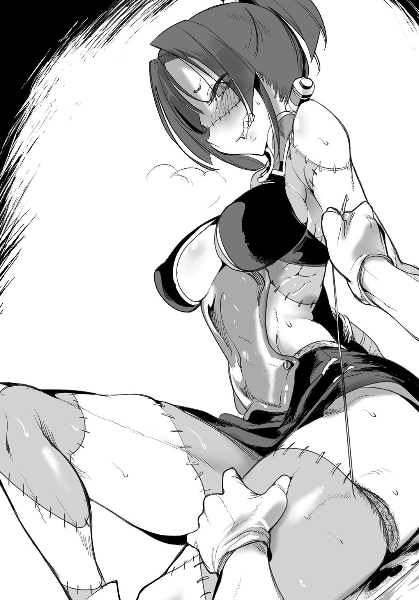
「貴様ァ！ 何度も言うが、もっと優しくだな......！」
「手早く終わらせます。苦無さん、我慢してくださいね」
「貴様、先ほどと性格が......ひぅんッ!?」
苦無の喘ぎは止まらない。
しかしグレンの指も止まることはない。彼女の感度を抑制することができない以上、グレンにできるのは可及的速やかにこの手術を終わらせることだ。
「ひっ！ あっ！ ひゃあッ！」
「..................」
「な、なんとかいえこのヤブ医者ァ！ わ、私がこんな声を上げているのに無反応なんて......いや、は、反応されてもそれはそれで......ンああうッ......！」
グレンの集中力は極限に達していた。苦無の声とて半分ほどしか耳に入っていないし、それに返事する余裕もない。
「くそ！ くそぅ！ 貴様ァ、手術が終わったら許さない、絶対に許さないからな......！ あ、あああ、ンぁぁぁぁあ―――――ッ！」
やがて、一瞬だけ苦無の体が跳ねる。
「はー......っ！ はっ......あん」
その後はしばらく、苦無は息を整えるのに必死で、グレンに対して喋りかけてくることもなかったので、グレンは至極冷静に、苦無の足をつなげる作業に没頭することができた。
フレッシュゴーレムは、どこか光の失った目で、じとりとグレンを睨みつけるのであった。
縫合は、どうにか夜になる前に終えることができた。
夜になってしまえば、照明のない裏路地での作業は困難を極める。一応、表通りにいけばランプ電燈の照明があるのだが、手術を行うに十分な光量ではないし、夜の大通りで死体を縫い付ける手術をするわけにもいかないのだった。
診療所まで戻れば照明があるが、足のとれた苦無を移動させるのも大変だ。日が落ちる前に終わらせられたのはグレンの腕前のおかげである。
「......助かった」
縫合を終えてから、苦無はどこか憮然とした顔でそう言うのだった。
「か、勘違いをするなよ！ いいか、受けた屈辱は忘れんからな！ ただ、その、これで竜闘女様にご心配をかけることもなくなったし......だから、制裁は今日は保留にしといてやる！ いいな！」
苦無の捨て台詞はそんなものである。本当にスカディのことを敬愛しているのがよくわかる言葉であった。
苦無は夜の大通りを、リンド・ヴルム議会まで歩いていく。その足取りには一切の乱れがなく、素人のグレンから見ても、彼女が一流の武術家であることが見て取れた。
もし、今日の強引な治療（もちろんグレンとしては最善を尽くしたわけだが、苦無がそう思っていない可能性はある）の報復があるとすれば、グレンは為す術もなくやられてしまうだろう。そんな日が来ないことを祈るのみであった。
願わくばスカディには、側近の手綱をきちんと握っていてほしいと思う。
「ただいまー」
「おかえりー」「なさいー」「ねーミルクまだー」
「ああ、うん。いま出すよ」
疲労困憊で診療所に帰る。
すると、早速妖精たちに今日の報酬分をねだられてしまう。妖精たちは皿一杯の報酬で朝から晩まで働いてくれるが、報酬には厳格である。給料の早払いも遅払いも認めなければ、ミルク以外は報酬としては受け付けない。
さすがのグレンも、路上において人体の縫合手術を行うのは疲れてしまった。手術中は集中力を発揮しているからいいのだが、いざ終わってしまえば肩に乗っかる疲労感は相当なものだ。今日はもうゆっくりと休みたいグレンであった。
適切に休息をとらねば、明日以降の診療に差し障る。
「サーフェは......いないのかな」
「こちらです、グレン先生」
サーフェは、ゆらりと音もなく、診療所の奥から現れる。
カーテンの奥でなにをしていたのか。色の白いこの薬師は、たまに気配や音を消しているので、存在感まで消えてしまう。
が。
現れたサーフェの姿を見て、グレンは啞然とした。
「......サーフェ？」
「ふふ、先生、見てくださいな」
サーフェは、自らの腹を撫でた。
いつもならばぴったりと肌に吸いついている遮光インナーを身に着けている彼女だが、今は寝る準備をしていたのか、インナーの上から厚手のネグリジェを身に着けている。それは構わない。もはや誰も彼もが寝ている時間だ。
問題は。
ゆったりとした寝間着の腹の部分が、異様に膨れていることで。
サーフェは意味深に笑う。
「どうやら私、妊娠してしまったようで」
グレンはそんな彼女の言葉に、なんと返せばいいのかわからず、ただただ頭を抱えるばかりだった。
症例４ 不治の病のラミア
グレン・リトバイト。
彼が生まれたのは、人間領東端に位置する商家であった。
グレンの父親は、東方商会同盟の幹部であり、自身も商会を経営する純然たる商人であった。彼の参加した商会同盟は、人間領の各地に通商ルートを持ち、采配を振っていた。陸を行くキャラバンから、海を行く商船までを掌握し、良い商品を欲する場所へ確実に届ける。
グレンの父祖や、他商会の幹部たちが何代にもわたって築き上げた商業の道筋は、すでに人間領の主要な都市のどこへでも通じていた。
グレンが生まれた頃、彼の父は頭を悩ませていた。彼は、同盟における通商路の新規開拓事業を任されていたのだが、それが彼の重荷でもあった。
東方商会同盟においての経済的成長は、当時頭打ちであった。
開拓すべき商業ルートはほとんど確立されていた。より僻地や遠方への商業路を開拓する手もあったが、金を投資し通商路を開拓しても、それに見合う利益が得られそうにない。儲けの発生しないことに、商会幹部たちが金を出すことはありえない。
多少のリスクは構わない。
確実に投資を回収し、利益を生み出すことのできる商業路を、グレンの父は探し求めていた。そして、一つの領土に目をつける。
それが、魔族領。
グレンの父の出した答えは、当時、戦争状態にあった魔族との貿易――ヴィヴル山脈を抜けて、敵勢力との通商ルートを開拓することであった。
もちろん、無策では危険だ。しかしグレンの父は東方商会同盟の幹部たちを説得し、同盟の一大事業として秘密裏に、けれど大胆に貿易ルートを構築することになった。すでに戦争は名目だけのものであり、誰も真剣に魔族と戦うつもりはなかった。商業ルートを構築し、双方に利益が発生するとなれば、もしかしたら戦争終結につながるかもしれない。
グレンの父が、戦争の終結を夢見ていたかどうかは不明だ。グレンの父は寡黙で、決して多くを語らない人だった。一方でグレンの母は、夫が敵国との商業ルートを開拓したのは、決して利益のためだけではなく、戦争終結という大望があったからだ、と固く信じていた。
折しも、魔族側で同様のことを考えている商人たちがいた。
彼らは薬売り。
薬品を作って販売する、蛇の一族ラミア。彼らは伝統的に製薬の技術に長けていたために、薬を作り、かつ需要のある場所に赴いては販売していた。魔族の間では評判の商人であった。
グレンの父は、密かにラミアのネイクス一族と連絡を取り合い、商業ルートの構築の準備をしていた。
危険な賭けだった。
最盛期と比べて少なくなっていたとはいえ、武器商人や傭兵など、戦争が続くことによって利益を得る者は未だ存在していた。もし万が一、魔族の商人とのつながりがバレては、スパイだとして処断されかねない。
グレンの父のみならず、東方商会同盟そのものがリスクを負っていたのである。
そしてそれは、ネイクス一族にとっても同様だった。人間との秘密裏の交渉がバレてしまえば、同族から非難を浴び、攻撃されかねない。
両者がもっとも恐れたのは、情報の流出であった。商業ルート確立前から、情報が漏れてしまえば、全てが水泡に帰す。逆に商業ルートを確立させてしまえば、戦争終結の大きな足がかりとなりうる――戦争さえ終わってしまえば、もはや裏切りもなにもない。
そのため、直接交渉に立つグレンの父と、ネイクス一族の当主は、厳密な取り決めのもとに情報を管理する必要があった。
そこで、人質案が出た。
グレンの父は、次男グレン・リトバイトを。
ネイクスの当主は、一人娘サーフェンティット・ネイクスを。
互いに人質を交換することで、絶対にお互いが裏切れないよう相互に監視することにした。
初めに、サーフェンティットが極秘にリトバイト家で住むことになった。当時、グレンは六歳。サーフェンティットは八歳。そこから一年近く一緒に生活をした。
サーフェンティットは、人質として最適であった。
アルビノの体質上、日中に外を出歩くことはできない。魔族が人間領にいることがバレては大事になるために、事実上の軟禁生活ではあったが、サーフェが日光を避けなければいけないために、かえって都合が良かった。
リトバイト邸で暮らすにあたり、グレンや、グレンの妹と年が近かったこともあって、サーフェはすぐに新しい生活に馴染んだ。
リトバイト家にあった多くの貴重な書籍を、グレンと一緒に読むことで、二人は急速に交流を深めた。グレン自身も、魔族の言葉を簡単にではあるが、サーフェから学んだ。
二人は幼馴染みといっていい関係だった。
もちろん人質交換であるため、グレンも本来であればすぐに魔族領へ移る予定であった。しかしそうはならなかった。
何故か。
ヴィヴル山脈の商業ルート開拓が、予想以上に順調に進んだからだ。
グレンの父とネイクス当主は、予測される困難に全て備え、迅速にルートを開拓し、品物を取引した。魔族側のもたらす貴重な品々――特にネイクス印の薬品や、人魚の作るガラス製品、アラクネ一族特製の織物などは、高値で売れた。
東方商会同盟は、時機を見て、魔族領との商業に成功したことを大々的に喧伝した。
多くの民衆もそれを喜んだ。魔族側の製品の品質の高さを知っていたからだ。
逆に魔族領では、人間の作った農作物が好評だったという。過酷な西側の土地では、農業はさほど大きく発展しなかったからだ。草食の食性を持つ魔族たちは、人間の作った野菜の味に涙を流して喜んだという。
かくして、戦争は終わった。戦争をするより、両者の作る品々をもっと取引して、豊かな生活をすることを多くの者が望んだからだ。
サーフェがリトバイト家にやってきて一年。その間に新規ルート開拓がとんとん拍子に進んだため、グレンを人質に送る必要はなくなっていた。
かくして、サーフェはグレンたちとの交流を思い出に、魔族領に帰ることになった。
グレンはそんなサーフェとの交流をきっかけに、魔族の存在や生活、生き方といったものに興味を惹かれた。
気づけば自宅の魔族関連の書籍を読み漁り、それでも足りぬとばかり、十四歳で魔族のアカデミーへと留学してしまった。魔族領に留学した人間は、長い歴史の中でグレンが最初であった。
そしてアカデミーの中、魔族医療の権威として名高いクトゥリフ・スキュルに師事した。クトゥリフの研究室において、グレンはすでに先輩学生となっていたサーフェンティット・ネイクスと再会することになる。
サーフェはサーフェで、製薬を学ぶためにクトゥリフに師事していた。
離れていた期間はあれど、互いの人生の転換期で、二人は必ず一緒にいたことになる。
「奇縁ね」
グレンは今の診療所を開く時、クトゥリフにそう言われた。
「奇妙な縁で、仲もいい。せっかくだから一緒に診療所をやりなさい。大丈夫。場所はもう用意してある。入用なものも、私の病院から持って行っていいわ。リンド・ヴルムで必要なものは大体揃うはず」
クトゥリフ・スキュルは淡々とそう告げた。
自分が独立を認められたのだと、グレンは最初気づかなかった。
「ただし――私の後見する診療所を、不埒なことに使ってはダメよ、二人とも」
メガネの奥で怪しく輝く瞳。
怒らせたら誰よりも怖い師クトゥリフの警告に、診療所を開いた時のグレンもサーフェも、こくこくと頷くしかなかったのだ。
――というわけで。
「そんなわけないでしょ」
グレンにはサーフェを妊娠させるような行為をした覚えなどないのであった。というかそんな真似をすればクトゥリフに診療所を追い出されてしまう。
「ですが先生、実際に私のお腹が」
「そもそも！」
こんな悪戯でグレンをからかおうというサーフェの考えが読めない。一瞬で噓だとバレてしまうようなことだ。何故なら。
「卵生のラミアがどうして妊娠するのさ」
「あら」
サーフェは口に手を当てて、微笑んだ。
いかにもわざとらしい仕草だ。ラミアが妊娠などしないことは本人が一番よくわかっているはずなのだから。
ラミア、ハーピー。マーメイドもそうだろう。卵生の魔族というのは実はかなり多い。グレンも魔族に日々接し、時には医者として出産にも立ち会う。むしろこんな悪戯に引っかかってしまうほうが、医者としての適性に疑問を持たれる。
「いいから診せてよ。その膨らんだお腹はなに」
「先生、そんな。脱げだなんて」
「言ってないでしょ！」
グレンは呆れる。昔は二歳年上らしく姉ぶった振る舞いをしていたサーフェなのだが――最近は助手として丁寧に接しながらも、こうした悪戯やからかいが多い。
だが、それでも妊娠など、たちの悪い冗談だ。
サーフェは、自分からネグリジェのスカートをたくし上げてみせる。
一瞬ドキッとしたグレンだったが、よくよく見ればネグリジェの下には、サーフェはいつもの看護服をまとっていた。黒の遮光インナーもそのままだ。
そして、ネグリジェと看護服の間には、大量の布と、小さなバスケットが詰め込まれていた。妊娠などとんでもない。服の下にこれらの品物を隠して、腹が膨らんでいるかのように見せかけたのだった。
バスケットは、紐でもってサーフェの体に巻きつけられている。そもそもネグリジェの下に、透けないインナーを身に着けている時点で、サーフェのほうもすぐバレる悪戯だとはわかっていたはずだ。
そして、バスケットの中には。
布でくるまれたものがあった。
「......卵？」
「先ほど、妖精さんたちが見つけてきたのです。ほら、苦無さんの体を捜しに、街に散ってもらったでしょう。体は見つからなかったですけれど、代わりにこんなものを」
「これは」
サーフェはネグリジェを脱いで、バスケットをグレンにしっかりと見せてくる。ネグリジェは、このバスケットを隠すためのカモフラージュだったらしい。
かなり大きい卵だ。鶏卵の二倍ほどのサイズ。魔族のものだとすぐにわかった。
「放っておくわけにもいきませんから。温めたら孵るかなと」
冗談めかしていうサーフェだが、目は笑っていない。
グレンは改めて卵を観察した。水中にあるマーメイドの卵や、卵殻がぷにぷにと柔らかいラミアの卵とは違う。魔族のものだとすれば、おそらくハーピーのそれがもっとも近いだろう。
両手が鳥の翼となり、また両足も猛禽のカギ爪のような形状をした鳥形の魔族がハーピーだ。もちろんリンド・ヴルムにもハーピーは多く住んでいるし、ヴィヴル山脈の中腹にはハーピーたちの集落があるという。
が――だからといって、ハーピーの卵など街中に落ちているだろうか？
「ご両親が捜していますかしら？」
サーフェが言った。もし中にハーピーの子どもがいるとしたら、両親はきっと捜しているだろう。適切に温められなかった卵は孵ることなく、中の子どもも死んでしまうおそれがある。サーフェが、布にくるんで服の下に隠していたのも、それを考えれば真っ当な対応といえた。
「ちょっとごめんね」
卵にそう声をかけ、グレンは卵を持ち上げる。
明らかに軽かった。持ち上げた感触で、すぐに判断できた。
「違うね」
「はい？」
「これは有精卵じゃない。中に赤ちゃんはいないよ。多分、ハーピーの女性が排卵したものだと思うけれど――」
産卵する魔族の女性は、子供を作る行為を行わずとも、定期的に排卵する。
もちろんサーフェも、子供の宿っていない卵を一定の周期で産んでいるはずだった。魔族の女性にとっては軽々しく男性に話すようなことではないが、体調不良などで排卵のリズムが崩れることがある。そういう場合は、診療所に訪れて相談する女性も多かった。大概は生活習慣の乱れや疲労、ストレスが原因であるので、栄養のあるものを食べて休めば問題ない。
「どこかのお子さんではなかったのですね。一安心といえば一安心ですが」
「だからって、道端に落ちてるようなものじゃないよね」
「ええ。まったく」
サーフェはグレンから卵を受け取り、再び布でくるんだ。
無精卵だろうと、そこらに捨てるようなものではない。サーフェも、自分の産んだ卵はグレンに見られないよう気を遣いつつ処分しているはずだ。
どうも今日のリンド・ヴルムは、腕やら足やら卵やら、妙なものばかり落ちている。
グレンが頭を悩ませていると、くいくいと裾を引かれた。足元には妖精が一人、心配げな顔でこちらを見上げている。
報酬の催促だろうか。そういえば今日の報酬がまだだった。ミルクを用意しないと――と思ったのだが、妖精は、
「おそとー」
と告げた。
「外？」
「おそとー」「ひとー」「たくさんー」
「は......？」
人がたくさんいるのか。もう夜更けなのに？ だが妖精たちが言うのならば、実際に外に人がいるのだろう。グレンは気づかなかったが、妖精たちには彼ら独特の感覚がある。信じていいはずだった。
「サーフェ、これって」
「ふと思ったのですが」
サーフェは卵をしっかりと抱きしめる。
「スカディ様と苦無様が追っていたという賊は、グレン先生に目を付けることはなかったでしょうか？」
鋭い視線で、サーフェは窓の外を見た。誰かいるのかと思ったが、グレンには窓の向こうに人影などは確認できなかった。
しかし、ラミアは温度を感知する独特の器官を持っている。サーフェの発言によれば、『温度を見る』ことができるのだという。グレンにはおそらく一生、その感覚を理解することはできないのだろうが、ともかく。
ラミアはその感知器官で、闇夜でも人や動物の動きを捉えられる。あるいは直前まで人がいたことを、床や壁に残留した温度から見分けられるという。
「え、まさか......こっちに？」
「さあ？ どうあれ、ここにいるのは危険ですわ。囲まれている恐れが」
最悪だ。
賊に相対しても、グレンには戦う術がない。彼は勉強一筋の人生であった。格闘技や武術はまったく心得がない。幸いにして医者になってから街を奔走することが多く、体力はそれなりにあるのだが――。
どうしたものか。
グレンが頭を巡らせていると、診療所の外で足音がした。はっと振り向いた瞬間。
簡素なつくりである診療所の扉が、吹き飛んだ。
「ッ！」
暗い。
闇夜に紛れる紺色の装束。布で顔を隠した男が、そこから素早く踏み込んできた。異変に気づき、妖精たちが恐るべき速度で身を隠す。男はくぐもった声でなにかを言いつつ、素早い動きでグレンめがけて突進を仕掛けてきたが――。
「先生！」
今度は男の体のほうが吹っ飛ばされた。
ずる、と動くのはサーフェの白い尻尾だ。ムチのような尻尾でもって、サーフェは診療所に侵入してきた賊を打ち払ったのである。
ラミアの下半身は、柔軟かつ強靭だ。
尾の先端を第三の手として伸ばすこともでき、長いリーチでもってグレンを水中から引きあげてくれたこともある。その強靭な筋肉により、振り回せば強烈な一打を浴びせることができる。
とはいえ、相手が魔族であればこうはいかなかっただろう。
だが、侵入してきた賊は人間であった。相手はラミアがこの診療所にいるとは知らず、サーフェの反撃をもろに食らってしまったのだ。
「とりあえず二つ大事なことがわかりました、先生」
「う、うん」
「一つ。賊はおそらくグレン先生と苦無様のやりとりを見ていたのでしょう。ですがそれ以前にはグレン先生に目を付けていなかった。それでラミアの私のことを知らなかったから、安易に襲ってきたのでしょう――私ならばなんとかなります」
サーフェは冷静であった。なんにせよこの状況で彼女の落ち着きぶりはありがたい。
メロウ水路街などでは子供っぽい笑顔を見せるが、緊急事態では頼りになる。アカデミーで先輩だったころのサーフェであった。
「二つ目。この診療所がすでに危ないということです。逃げますよ」
「わ、わかった！」
グレンの反応は早かった。
いつもの医療バッグを肩にかける。サーフェも布を巻いた卵を抱いて、早速壊された扉から外へ出ようとする。
妖精たちはすでに逃げ出している。すばしっこく、人目を避けるのが得意な一族だから心配はいらないだろう。あとは自分たちだけだ。
「ああ――三つ目ですが」
さらに診療所に飛び込もうとした賊の一人を、サーフェは尾で払いのけるかのように吹き飛ばしてしまう。
宵闇の中でも、サーフェの視覚は支障なく働いているようだった。温度感知能力を最大限に活かすことで、本来なら圧倒的に有利な闇夜の襲撃者に対し、後の先の一撃を浴びせることに成功していた。
「賊の手当ては結構だということです。いくら医者でも、そこまでする義理は」
「そうだね」
苦笑しつつ、グレンは答える。
「手当ては、とりあえず無事に逃げられたらにするよ」
「まったくもう、先生はいつでも先生ですね」
サーフェはそこで、ようやく微笑んだ。
グレンが診療所に戻ってからずっと気を張っていたらしい彼女が、ようやく落ち着いた表情を見せてくれたのだった。
闇夜の襲撃者は、全部で四人いた。
いずれも暗い色の装束をまとい、顔を隠していた。侵入してきた二人を倒したサーフェは、逃げる途中でまた一人を戦闘不能にしていた。夜の街を追ってくる賊の足に、尾を巻きつけて引き倒したのだ。全力で走っている人間にそんなことをすれば、均された土に顔面から飛び込むことになる。
鼻を強く打った賊は、小さな唸り声をあげてそのまま動かなくなった。
残る最後の追跡者は、途中で姿が見えなくなってしまった。ラミア相手に夜間の戦闘は分が悪いと判断したのか。あるいは、さらに仲間を呼びに行ったのか。
「どこに逃げますか、先生？ 中央病院ですか？」
サーフェが、するすると高速で這いながら問うた。蛇の体は一見鈍重そうに見えるが、その独特の動きは、意外なほどの速さで街を駆けることができる。
彼女が挙げたのは、リンド・ヴルム中央病院のことだ。
クトゥリフ・スキュルが経営する大病院であり、設備も職員の数も、グレンのごとき町医者の診療所とは比べ物にならない。この街におけるグレンの後見人が、師匠クトゥリフである以上、助けを求めるのは自然な流れと言えた。
だが。
「いや、中央病院には行きたくない」
「先生？」
「追われてる状態で、中央病院に行けば、入院患者さんに迷惑をかけてしまうかもしれない。それはダメだ。病院の患者さんには自力で逃げられない人もいる」
賊がそんなところに侵入すれば――たとえ彼らの目的が患者を傷つけることではなかったとしても――犠牲者がでる恐れがあった。グレンはそれを嫌った。
「では、どうすれば」
「それは......」
グレンは口ごもった。いい案が浮かばない。
そもそも、自分は何故狙われているのだ？ 苦無や、その主スカディと知り合ったからか？ しかし自分のような町医者を狙っても、賊に得るものなどないはずだ。彼らを直接的に追っているのは苦無のはずなのだから。
あるいは、それとは関係なく。
「もしかしてだけど」
サーフェが抱きかかえている卵を、グレンは見た。
「連中の狙いって、その卵なんじゃ......」
「ど、どういうことですか？」
「奴隷商を追っている、と苦無さんは言っていた。でも奴隷制なんて、人間でも魔族でもとっくに崩壊した制度だよ。じゃあ、賊はなにを商っているのか。奴隷と表現したからには、違法な人身売買の可能性があるよね」
走りながら、息を切らしながら、グレンは自分の推測をサーフェに話す。冷静になって話していくほどに、その推論に確信が得られてきた。
「人身売買......まさか、ハーピー族を？」
「最初はそう思ったけど、違うかもね。卵を狙ってるんだとしたら......連中が売りさばいているのも卵なんだ。妖精がうっかり持ってきちゃった『商品』を取り戻しにきたのかも。強引にね」
「ハーピーの無精卵に価値があるのですか？」
「......ある、んだろう」
グレンは言いよどむ。あまりサーフェに聞かせたい話ではなかった。
長く続いた戦争の影響により、人間と魔族の間には未だ偏見や差別が満ちている。それは互いに毛嫌いしたり、避けたりという形で現れる一方、物珍しさや好奇心の対象ともなる。つまり魔族を、まるで見世物小屋の動物を見るように接する人間も、一定数いるわけだ。
えてして、そういう人種は金持ちが多い。彼らは普通の娯楽はおおむね堪能してしまったから、なかなか他では楽しめない道楽に手をだす。
戦争が過激であった時代には、攻め入った村の魔族を捕らえ、奴隷として囲っていた貴族もいたという。サーフェには口が裂けても言えないが、当然ながら見た目も麗しい、若い女の魔族ばかりだったという話だ。
そんな下卑た趣味の金持ちが、相変わらずその趣味にお金を出す、というわけだ。金を出すものがいれば、それが違法であっても、どこからかハーピーを捕まえ、卵を産ませ、その卵を商品として取引する――そんな奴隷商たちが現れてもおかしくはない。
「では、彼らの狙いはこの卵と」
サーフェは唇を嚙み、胸の卵をぐっと強く抱きしめた。
魔族である彼女には酷な話だったかもしれない。
そして、グレン自身も、そうした好奇心を持つ富豪たちを笑えない。なにしろ、魔族の生態や身体構造を学び、その果てに医者になったのも、似たような好奇心が理由だったからだ。魔族のことをもっと知りたい。人間とは違う生き方をしている彼ら彼女らとわかり合いたい、という、知識欲と好奇心を掛け合わせたような感情。
サーフェに対して言いよどんだのは、大金を出してハーピーの卵を買う者の気持ちが、グレンにはわずかでも理解できてしまったからだろうか。
罪悪感を振り払うように、グレンは言葉を続ける。
「まだわかんないけど......とにかく、リンド・ヴルム議会に向かおう」
「議会ですか？」
「あそこなら警備も固いし、代表のスカディさんは遅くまで残っているはずだ。スカディさんがいれば苦無さんもいる。とにかくそこまで」
「それには及ばんぞ！」
背後からの声。
追手かと思い、身構えたグレンたちであったが、背後に立っていたのは血色の悪いツギハギの女性であった。状態のいい死肉を使っているとはいえ、彼女の顔色は暗闇で見るとやはりぎょっとしてしまう。
竜闘女の護衛、苦無・ゼナウであった。
「苦無さん！」
「卵を、何人かの妖精がえっちらおっちら運んでいるという目撃談があってな。嫌な予感がして診療所を訪れてみれば、戸は壊れているわもぬけの殻だわ......ようやく追いついたぞ」
よくよく見れば。
苦無は右腕で、なにかを羽交い絞めにしていた。布で顔を覆った賊の一人だ。追ってこないと思ったら、どうやら苦無に取っ捕まっていたらしい。すでに気絶している賊を放り捨て、苦無は頭をかいた。
大の男を片手で締め上げ意識を失わせるとは。戦闘技術だけではなく、単純な力においてもフレッシュゴーレムは相当のものらしい。
「我々だけで決着をつけるつもりだったんだがな。まさか町医者まで巻き込まれているとは」
「すみません......」
グレンは謝るが、そもそも卵が診療所に運びこまれたのは、苦無の腕を捜しに妖精たちを使ったからだ。
つまり卵を持ってきてしまった原因の一端は苦無にもあるのだが――それをこの場で言えば、医者嫌いのフレッシュゴーレムは機嫌を損ねるだろうと思われた。
戦えないグレンにとっては、戦力は貴重だ。
「保護したいところだが、あいにく、議会に人はいない」
「は......？」
「奴隷商たちは我々に嗅ぎつけられたことに気づき、早々にこの街から逃げ出すつもりだ。その前に全員捕らえるため、議会の警邏たちはすべて配置した。もちろんこの私も、今から連中のアジトに乗り込む」
勇ましいことだ。苦無ならばわけもなく、奴隷商たちを捕まえることができるだろう。
なにしろ、グレンが手ずから縫合したばかりだ。たとえ切断された腕であろうと、熟練した医者が丁寧につなぎ、その後患者が訓練を繰り返せば、切断される前とほぼ同じように動かすことができる。――もちろん条件にもよるが。
少なくとも、以前の雑な縫合ばかりだった苦無とは、動きがまったく違うはずだった。
「ゆえに、お前たちを守る人員がいない」
苦無はシンプルに告げた。サーフェはげんなりとした顔つきになる。
「それは困ります。そもそもこの状況は、貴女たちがここまで賊を放置していたせいでしょう。人がいないから保護できない、なんて理屈が通りますか？ 私たちは一般人ですよ？」
サーフェの言う一般人とは、つまりは戦闘行為を行わない者という意味だろう。
「それともこの卵を貴女に預けたらよろしいですか？ そうすれば私とグレン先生が狙われる理由はなくなりますね？」
「もちろんそれで安心というならそれでもいいが。アジトから逃げ出した残党が、逆恨みにお前たちの診療所に立て籠もる可能性もあるぞ？ 人質にとられても知らんからな」
「貴女！ まるで他人事みたいに......！」
サーフェの尾が、激しく震えて持ち上がる。種によってはガラガラと警戒音を出すこともある、ラミアの感情をよく表す仕草だ。
「うむ。だからな」
苦無は反論など承知の上とばかりに、頷いた。
「これより竜闘女様と私は、奴隷商人どものアジトを襲撃する。我々は裏手に回って、囚われているハーピーの娘たちを救出するのが任務だ。共に行けば、お前たちのことは私が守ってやれる」
苦無は、見せたこともない顔でにやりと笑った。
グレンは咄嗟に考える。どちらがリスクが高い？ このままいつ襲われるかわからない状況で街に戻るよりも、賊の全員が捕まるのを見届けてからにしたほうが、少なくとも夜、襲われる心配をせずに眠れるのではないか。
それに、苦無という護衛と、生物において最強種であるドラゴンの女性――スカディ・ドラーゲンフェルトが同行するのならば。
「お断りします。そのような危険な......」
「いえ、行きます」
「先生!?」
サーフェが咎めるように見たが、グレンの決意は固かった。
「戦闘になれば怪我人が出る恐れもある。手当てのできる人間は必要なはずだよ、サーフェ」
「ですが......」
「ぐだぐだ言うな。話は単純だ、行くか、行かないのか」
サーフェはしばらく迷っていたが、やがて小さく頷いた。彼女としても危険と安全を秤にかけたようだった。
苦無は実務的というか、時間を惜しみ、考えるより行動するタイプに見えた。竜闘女の護衛として働くうちに染みついた習性なのだろう。
「そうと決まれば水路まで行くぞ。船がある」
「船......？」
「ゴンドラだ。連中のアジトは、水路街にある」
苦無は言うが早いか、駆け出していた。やはり迅速果断を旨とする性格らしい。
「襲撃は船に頼る」
「はあーい！ 先生！ こっちこっち！」
夜の水路で、水中から手を振る姿がある。
月明かりできらりと反射するガラスの装飾品で、すぐにわかった。あれは中央広場の歌姫、ルララの姿だ。金色に輝く彼女の鱗は、月光の下ではまた違った輝き方を見せてくれる。
彼女ならば、ライトアップされた水路街でパフォーマンスを見せても、また人気者になれるかもしれなかった。
「何故ルララさんが......」
「道中話す。いいから乗れ」
苦無に促され、グレンは素早く船に乗り込む。グレンの手を借りて、サーフェもするりと船に乗るのだった。
ゴンドラの奥には、ローブをまとった竜闘女スカディが座っていた。静かな佇まいでゴンドラの席に座っていると観光か何かのように見えるが、そうではない。これから行われるのは賊のアジトへの襲撃のはずだった。
苦無とグレン、サーフェが無事に乗り込むと、ルララはゴンドラの取っ手を曳き、泳いでいく。ゆっくりと進むゴンドラであったが、船は揺れが多い。本職の水夫と比べると、やはり力が足りないように思えた。
「――スカディ様」
咎める視線は、サーフェのものだった。
明らかに怒りを込めた視線だ。顔を隠すスカディの表情はうかがい知れない。
「何故ルララさんが、船を曵いているのですか。それも、これから摘発しようと水路街に向かう船を。説明いただけますね？」
「取引をしたからだ――と竜闘女様は御答えだ」
スカディの言葉を代弁するのは、いつものように護衛の苦無であった。
「取引？」
「ルララには中央広場で歌ってもらう。彼女はとてもいい声をしていたからな。その代わり、しかるべき時には、少々危険な場所に我々をゴンドラで運んでもらいたい。具体的には、水路街の奴隷商のアジトまで、船を曳いてもらいたい、と話した――と仰っている。これはルララときちんと話し合った結果、締結した契約だ」
サーフェの表情が、みるみる厳しくなっていった。明らかに不機嫌だ。グレンに対して拗ねるのとは全く違う――怒気をはらんだ視線。
「スカディさん」
サーフェが尋ねればややこしくなりそうだ。グレンは自ら竜闘女に向けて尋ねることにした。
「それはつまり、賊の捕縛のために、本来関係ないはずのルララを利用したということですか？」
「グレン医師！ その言い方は無礼な......！」
「ごめんなさい苦無さん。今はスカディさんに問うています」
む、と苦無が鼻白む。
スカディは、沈黙していた。
グレンとて、ルララの境遇はわずかながら聞いている。彼女は水路街で貧しい生活をしていたのだが、議会の要請によって、中央広場で歌うことになった。それはルララ・ハイネにとっては栄達のはずだった。ルララ自身も、満面の笑みで喜んでいた。
だが。
それは取引だった。ルララを貧乏から助ける代わりに、ルララに危険な仕事を与える。確かに水路街の移動は、船を曳く者がいなくてはできないことだが、そんな仕事をまだ思春期と言っていい少女に、足元を見るかのようにやらせているのならば――。
「――――――――」
こく、とスカディは頷いた。
グレンの問いに対しての肯定なのだと、判断するのに少々時間を要した。
「確かにその通りだ、否定はしない――と、竜闘女様は仰せだ」
苦無は不機嫌そうだった。主の名誉を傷つけるような話を、平然と聞いていられる性格ではないのはグレンも承知だ。
「だが、この仕事にルララが適任だったのは事実だ」
「どういうことですか？」
「賊のアジトまでの水路は複雑だ。いざ襲撃をかける時には、迅速な行動が必要になる。下準備は入念にしておきたい。だが本職の水夫と打ち合わせれば、襲撃をたくらんでいることが容易にバレてしまうだろう。ルララは歌姫としての活動で、我々と問題なく接触できた。中央広場での仕事を与えるという名目だったが、実際は今日までの打ち合わせも行っていたわけだ。まさか年端もいかぬ歌姫が、こうして夜の水路でゴンドラを曵くとは誰も思わん。報酬は十分な金品と、中央広場での今後の仕事......決して悪い取引ではないはずだ」
確かに、それはグレンも予想していなかったことだ。
船の先端を泳ぐルララ。以前、体調不良で溺れかけた彼女だったが、彼女の乾燥した喉とエラは未だ完治したとは言い難い状態だ。そんなルララを危険にさらしている。医者として黙認していいことだろうか。
「ちょっと！ ちょっと！ なに険悪になってるのー？」
船上の雰囲気を察したか。
ルララが振り返って声をあげる。
「あのね、先生、なんかボクがやらされたみたいに言ってるけど......ボクも承知の上だったんだから、大丈夫だよ。ちゃんとスカディ様とお話ししたもん」
「ですが......」
「危険な時は真っ先に逃げろって言われてるし。ボクだって子供じゃないんだよ。自分の仕事は自分で決めるんだから！ ボクの責任で、ちゃんとみんなを水路街まで送り届けるよ！」
そういえば。
ルララは、水路街の橋の下で歌っている時も、仕事に真剣であった。金銭的な余裕のなさもあったのだろうが、ルララ自身の矜持でもあるのだろう。
「......わかりました。そうまで言うなら、僕が言うことはありません」
「でしょー？」
「無理だけはしないでくださいね」
「おっけー！」
以前も溺れかけたことを考えれば、必ずしも安心とは言えなかったが――苦無とスカディが、しっかりルララのことも守ってくれることを祈るしかなかった。
ゴンドラはゆらゆらと揺れる。
乗り心地が良くないのは、四人も乗った状態で、ルララが船を制御するのに精一杯だからだろう。そもそも本職の曵き手ではないのだから当然と言えた。
「そろそろ作戦を説明するぞ」
狭い水路に入ってきたあたりで、苦無が言った。
「賊の奴隷商どもは、ハーピーの娘およそ十人ばかりを監禁し、卵を好事家に売りつけている。反吐が出るようなクズどもだ」
「何故、拠点がこの街にあるのです？」
サーフェが聞くが、サーフェ自身、答えには見当がついているようだった。
「決まっている。身寄りのないハーピーの娘を捕らえ、卵を産ませてから人間に売りさばく。魔族領と人間領をまたぐ商売だ、両者の中間にあるリンド・ヴルムが都合が良いからだ」
「やはり......」
「ついでに言うとリンド・ヴルムには軍隊がないからな。治安維持はリンド・ヴルム議会の警邏たちの仕事だ。賊のほうは、もしかすると治外法権のやりたい放題の街とでも思ったんじゃないか？ ――そうではないことを、これからたっぷり教えてやるがな」
リンド・ヴルムは、議会によって運営されている。
政策や街にとって重要なことは議会の幹部たちが話し合って決めるのだが、もちろんその代表たるスカディが大きな発言力を有していることは言うまでもない。他の街のように、貴族の領主が治めているわけではないが、だからといって治安が悪いわけでもない。
特に議会直下の警邏隊が優秀であることが、治安維持に一役買っている。
「で、奴らのアジトは水路街にある」
「水棲魔族......というわけではないですよね？」
「もちろんだ。賊は全員人間だ。水路街は、元々あった街を水に沈めて作っただろう？ 水中は魔族たちに適するようだいぶ改装したわけだが、水上の大部分は、水に沈めた当時のままだ。水路のせいもあって、水上はかなり入り組んでるし、行き止まりや、船でしかいけない家屋が多い。連中は、そんな水上の家に目をつけたんだ」
「空き家なども多いですからね......」
苦無が見るのは、水路街の上、無人の水上都市だ。
橋などで行き来できる場所もあるにはあるが、多くは本来入口となるはずの場所が水中に沈んでしまっている。水上に出ている家屋の二階、あるいは三階部分は放置されたままだ。
「―――――」
「竜闘女様も、水路街の整備が水の上まで行き届かなかったことを悔やんでおられる。奴隷商などにアジトに使われてしまったからな。だが、それも今日で終わらせる」
そして、そこに行くためにルララの協力が必要だったのだ。
歌姫として中央広場で歌ってもらう代わりに、アジトを摘発するときはゴンドラの曳き手として助力を得る。複雑で独特な水路街の地理も、水路街に住むルララであればよく知っているというわけだ。
「乗り込むのは私たちだけ？ 警邏たちもいるのでしょう？」
サーフェの指摘に、苦無も頷く。
「もちろんいる。実は、アジト近くにはすでに橋をかけていてな。表向きは都市計画の一端ということになっているが、実際はその橋を通って奴隷商のアジトに乗り込むことができるようにした。警邏たちは正面から、アジトの摘発を行う予定だ」
「正面ということは......我々は裏から？」
「そうだ。連中は逃げる時、追われないよう船を使うはずだ。裏に係留してある船を流し、賊徒を誰一人逃がさん。その上で、囚われているハーピーの娘たちを助け出す。おそらくは裏から乗り込む我々のほうが、先にハーピーたちの監禁されている場所に行けるだろう」
順調にいけばな、と苦無は付け足した。
「私が襲われ、狙われたこともある。賊のほうも、我々の追跡に気づいている。今日を逃せば、賊たちは全て街から出ていくだろう。ゆえに我々も、摘発の計画を急いで進めねばならなかった」
「......僕のところに治療に来たのも、摘発を急いだからですね」
「なにしろ右手がなくては満足に戦えないからな。その上、昼間再び、私も襲われた。一刻の猶予もないとして、竜闘女様の決断のもと、今夜が計画実行と相成った」
つまり、今夜の襲撃は、苦無が足を落としたりした昼間の騒動が理由だったのだ。
グレン自身は縫合のために駆けずり回っていたわけだが、その裏で、リンド・ヴルムでは多くの駆け引きがあったということだろう。そうして自分やサーフェ、ルララまで巻き込んでしまった形になったわけだが。
グレンは、ちらとスカディを見た。
ヴェールの隙間から覗く、彼女の唇がわずかに動いていた。相変わらず声は聞き取れないが――唇の形は。
「ごめんなさい」
そう言っているように見えた。
巻き込んでしまったことを詫びているのならば、少なくともスカディ・ドラーゲンフェルトは、目的のために他人を巻き込んで平然としていられるような性格ではないということだ。
謝られては仕方がない、とグレンは思う。可能なら読唇ではなく、ちゃんと耳に聞こえるように言ってほしかったが。
「私も縫合してもらったおかげで動ける。もう賊など問題にならん」
「元第一階位の闘士の実力、見せていただきたいものですね」
サーフェの言葉はどこか皮肉めいていたが、苦無に意に介した様子はない。
深夜の水路街は静かだ。
昼間はにぎわっていたボートの露店はたたまれ、住人たちは水中の家へと帰っている。観光客などもおらず、水上は静かなものだった。
だからこそ、賊が潜伏するにはうってつけだったのだろう。
「摘発が終わったら、水路街の整備も進める――と竜闘女様は仰っている。そうすれば、観光客も水上を歩けるようになり、水路街の商売の幅も広まるだろうとお考えだ」
水路街がにぎわうのは良いことだ。
闘技場もそうだが、リンド・ヴルムの街の収入は観光によるものが大きい。魔族と人間は相互に協力し、リンド・ヴルムでしかできないことを実現しているからだ。水路街の観光収入は、街全体の活性化につながるはずだった。
「そろそろ着くよー。背の低い橋を通るから、みんな頭を下げてね！」
ルララが警告する。すでに水路は、ゴンドラ一艘が通るのがやっとだった。こういう場所は、水位によっては通るのが厳しい橋もある。
逆に言えば、通りづらい場所の先に賊のアジトがあるのは当然と言えた。陸からも水上からも行き来のしづらい場所で、非合法の商売を行っていたのだ。
だが。
橋が見えてくる。頭を下げる前に、しかしグレンは橋の上に人影を見た気がした。暗闇に紛れ、わずかに動く影が。
「伏せろッ！」
鋭い声は、苦無のものだった。
グレンは自分が伏せるとともに、傍らのサーフェの肩も引く――が、同時にサーフェも、白い尾でもってグレンの体を引き倒した。考えることは一緒だったらしい。
倒れこむように伏せたグレンの頭上を、なにかが通過する音がした。張り詰めた糸が跳ねる音も。
「弓!?」
明らかな矢の風切り音。
グレンが顔を上げる。そこには、船上に仁王立ちする苦無の姿があった。
「苦無さん！」
「顔を上げるな！ まだ来るぞ！ ルララは水に潜れ！」
橋の上から、暗闇に紛れ矢が飛んでくる。苦無は一人伏せることなく、逆に左腿の裾に隠していた短剣を取り出し、振りかざす。
苦無は降ってくる矢を、短剣でもって払いのけてみせた。信じられない技量だ。グレンは伏せているしかできないが、ゴンドラに向かってくる矢をことごとく打ち払う苦無の技は驚嘆すべきものだ。
「橋の上に五人！ くそ、弓矢まで持ち出してくるとはな！」
ゴンドラは、止まってしまった。
船を曳くべきルララは、矢を避けて水中に潜っている。その判断は的確だし迅速だった。
だが、このまま進めなければ、ゴンドラは流れに任せるだけになるだろう。しかしそんな隙を、賊たちが見逃してくれるとは思えなかった。橋の上の弓兵たちは、文字通り矢継ぎ早に、矢をつがえては撃ちだしてくる。
矢を打ち払う苦無もそうだが。
この弓を扱う賊たちの技量はどうだ。ただの賊にしては、妙に統率がとれている気がした。前に、不意をついたとはいえ、一流の護衛である苦無の腕を奪ったことにしても、この賊たちは並の戦士ではないということか。
「来るぞ！ 伏せろ！」
すでに伏せているのだが、苦無も必死なのが見えた。左肩には矢が刺さっている。避けきれなかった一本が当たったらしい。
次も無事で済む保証はない。グレンは身をこわばらせ、せめてサーフェに被害が及ばぬようにと神経を張り巡らせる。
だが――。
再度の矢の雨は来なかった。
橋の上で、高らかな蹄の音が響いた。
「お――――――ほっほっほっほ！」
いかにも上から目線、と言わんばかりの高笑い。
この高笑いに、グレンは覚えがあった。というか、こんな笑い方をする相手に心当たりは一人しかいない。
橋の上には影しか見えない。
しかし横から突進してくる影に、弓兵たちが慌てふためいているのは明白だった。
だがあの背の高く、下半身が後方に大きく膨らんだ影は、まぎれもなく魔族だ。それにこの声を合わせれば、誰かはすぐにわかった。
「窮地！ 窮地ですわねお医者様！ まったく、お見合いの日取りを決めようと診療所に行ってみれば、明らかに暴漢に侵入されたあと！ 追跡してみれば深夜に弓矢を持つ賊徒！ ここで槍を振るわずして、なにが武名高きスキュテイアーか――ですわ！」
「口上が長い！ あとお見合いは無期限延期です！」
妙に人馬の姫に辛辣なサーフェが、橋の上に向けて声をあげた。
未だ顔ははっきりと確認できないが、このような声をあげるのはティサリア・スキュテイアー以外には考えられない。橋の上で鳴り響くのは、蹄鉄が石造りの橋を踏む固い音と、武器同士がぶつかる剣戟だ。さらに、彼女に続く二つの影も見える。従者のケイとローナだろう。
「お医者様」「ここはひとまず我々が」
「議会代表のスカディ女史に恩を売っておくのもいいですわね！ 今後のスキュテイアー商会のためになりそうですわ！」
打算的なセリフだが、実際に助けられているのでなにも言えなかった。
橋の上で、弓兵たちが慌てふためいているのがわかる。水上の獲物を狙っている時に、いきなりケンタウロスの闘士たちが出てきたのだから当然だろう。
「今のうちだ、ルララ、行け！」
「お、おっけぇー！」
いささか声は震えていたが、それでもルララは気丈に船を曵きだす。すでに橋の上では、水路のゴンドラに矢を射かける余裕はないだろう。
「ここから先はアジトまで一直線、弓兵を置くような橋もない！ このまま突っ切るぞ！」
「あ、あいさー！」
苦無の号令に、ルララが応じる。
グレンは心配になり、後ろを見届けた。
橋の上では、未だに戦闘の音が響いていた。その中に混じる、ティサリアの高笑いも、静かな水路街によく響くのであった。
ティサリアは、ゴンドラがゆらゆらと水路を行く様を見届けた。
正直なところ、ティサリアは正確に事情を把握しているわけではなかった。明らかに荒らされたと思しき診療所を見て、とにかくグレンが窮地にあると判断し、あとは持ち前の健脚でもって駆けずり回っただけである。馴染みのある闘士たちにも言伝を頼んでいるので、間をおかず、闘技場の戦力がやってくるはずだった。
「ケイ、槍を」
「はいお嬢様」
試合用に作られた模擬槍を、ケイから受け取る。
賊徒は五人。先ほどまで弓をつがえ、水上のゴンドラを狙っていた彼らだが、今はめいめい短剣を取り出していた。近づかれたときの備えまでしているのだから、用意周到だ。
ただの賊ではない。
何故なら、一人が短剣を取り出した途端、他の者たちも一度に弓を捨て、近接戦闘の構えに入ったからだ。ひと言の指示もなくそのような動きができる。迅速かつ余計な音のたてない統率。
ティサリアは、これらと似た動きをする者たちを知っていた。
「ただの賊とは思えませんわね」
ケイから受け取った愛槍は、模擬槍ながらもティサリアのために装飾が施された立派なものである。長いそれを肩に乗せ、ティサリアは息を吐いた。
「......その紋章は、スキュテイアーか」
顔を隠した賊の一人。おそらくはこの場での指揮官にあたる男が、ぼそぼそと言った。てっきり無言のまま戦闘になるかと思っていたティサリアには意外であった。
「よくご存じですわね。我らが一門の武名高く、その名知らぬ者なし！ ――と自慢したいところなのですけれど、ちょっと違う気がしますわ。知っているのは、同業の方だから......かしら？」
「人馬族は、魔族の傭兵稼業。わけてもスキュテイアーと言えば戦争屋だろう」
「残念ですわ。運送業さんであれば平和に話ができましたのに」
ティサリアは嘆息した。やはり、『傭兵』のほうの同業だったのだ。
もっとも彼らは、違法な人や物の売買を行っているので、その意味では運送業というのもあながち間違いではない――ティサリアは知る由もないが。
「人馬の者であれば、我らの邪魔をする理由はなんだ？」
「はい？ この平和なリンド・ヴルムにおいて、弓矢を射かける方々を邪魔しない理由がありまして？」
「お前らとて、元兵士だろう。ならばむしろ弓を射かける側ではないか」
やはり賊などではない。彼らは統率され訓練された兵卒だ。あるいは本当に元弓兵だったのかもしれない。
「......おっしゃっている意味がわかりませんわ」
「魔族との！ 敵との馴れ合いなど、笑止千万だと言っているのだ！ 我らは傭兵、戦争がなくては生きていけぬ！ 食うに困り魔族の卵を売りつける商売などをやっている始末だが、本来は戦争で生きる武人だ！ 平和な世など、俺たちにとっては地獄でしかない！ ......お前たちもそうではないのか、スキュテイアーの者」
「ふうん......魔族の卵をね」
賊はティサリアに理解を求めているようだったが、そもそもティサリアとて魔族だ。魔族を売り物にする犯罪行為をぺらぺらと喋って、理解を得られるはずがない。
それに。
平和な世など地獄でしかないなど、平和な世でどう生きるかを考えたスキュテイアーの一族に向ける言葉でもなかった。
「だからなに？ 敵だから魔族を商売に利用してもいいと？」
「違うな。この騒ぎを聞きつけ、魔族を売り物にしていると露見すれば、このクソみたいな平和は瓦解する。魔族との馴れ合いなど所詮は幻想だ。互いに殺しあっているほうが自然なんだよ」
思わず笑ってしまいそうになるのを、ティサリアは必死にこらえた。
この男は、この口ぶりならばしばらくはリンド・ヴルムで生活していたのだろう。ならばなにを見ていたのか？ 非合法な商売に夢中で、現実が見えていなかったのか？
観光客の人間と楽しそうに談笑しながら車を引くケンタウロス。中央広場でマーメイドの歌声にうっとりと聴き入る者たち。そして、人間でありながら街中をかけずりまわっては、魔族の患者を見つけて治療する、一人の医師。
これらは全てリンド・ヴルムの日常であり、現実だ。はたして賊は、これらの現実が見えていなかったのか。あるいは見えてはいたが、見ないふりをしていたのか。自分たちの振りかざす勝手な理屈のために、あえて黙殺したのか。
幻想を抱いているのは、戦争をしたい賊のほうだ。
ティサリアの目にはきちんと現実が映っている。人と魔族が当たり前のように共存している、リンド・ヴルムという現実が。
「お前たちとて、戦争がなければ困るのだろう？ 戦争にこだわっているのだろう。その模造槍を見る限り、闘技場の闘士のはずだ。戦争したいのだ」
「一応言っておきますけれど、わたくし、戦時は子供でしてよ。自ら武器をとって戦場に出たことはありませんわ」
「なに......」
てっきり自分たちと同じだと思っていたらしい元傭兵らである。
ティサリア自身は戦場に出たことはない。父とて、ティサリアが生まれてから戦場に出たのは数回だった。ティサリアが生まれた時はすでに戦争末期、そういう時代ではなかったのだ。
もっとも、自分用に仕立てられた槍を片手に、戦いたいと駄々をこねて、両親を困らせたことはある。その当時からやんちゃな姫であった。もちろん当然のように、当時から侍従であったケイとローナも巻き込んでいた。
「くだらないですわ。笑止千万はこちらのセリフ」
すでにティサリアは、この賊に対し容赦はしないと心を決めていた。
それは傍らに立つ二人の侍従。ケイ、ローナも同じであった。それぞれの得物を手にして、賊の一団と相対する。
「戦争は終わったの。戦時において、平時の生き方に固執することは滑稽でしょう。けれど逆もしかり。戦争が終わって、みんなが生きる道を探しているのに、終わった戦争をしたいしたいと！ 少しは平和な世界での生き方を模索してみなさいな！」
「貴様......貴様になにがわかる！ 我々は誇り高き傭兵稼業！ 戦争のない世など......！」
「無関係の人間を巻き込み傷つけ、それが誇り!? そんな薄汚れた誇りなど捨ててしまいなさい。平和な世でも生きやすくなりますわよ！」
傭兵は、戦時ではさぞ重宝されたことだろう。
だが物の価値は時代によって変わる。傭兵が高い給金をもらう世は終わったのだ。それでもなお傭兵という生き方に固執すれば、ただの賊徒に成り下がる。目の前の彼らが良い例であった。
「教えてあげますわ。わたくしが武名にこだわり、闘士になっているのは、なにも戦争をしたいからではありませんわよ」
戦をしたいか。
戦いたいか。
正直に言えば、そう質問されたらティサリアは肯定する。しかし誰かれ構わず、相手も場所も選ばず戦いたいわけではない。自分の能力が、武人としての生き方が、平和な世であっても必要になるときが必ず来る。
たとえば今、まさにだ。
「わたくしが平和な時代で槍を持つのは！ 貴方がたのような悪者を懲らしめるためですわ！ さあ、ケイ、ローナ、準備は良くて!?」
「もちろんですお嬢様」「いつでもどうぞ」
侍女たちの返事はいつだって頼もしい。
ケイとローナはそれぞれ剣と弓を持つ。いずれも試合用のもので、剣は木製だし、弓にいたっては弾弓――粘土玉を射るだけのものだ。しかし、賊徒鎮圧にはそれで十分であろうとティサリアは考える。
なにしろこれは戦争ではないのだから。
「いざ！ 悪漢誅すべし――ですわ！」
「ほざけ馬風情が！」
男は怒りに任せ、短剣にて飛び込んだ。
もちろん、感情に任せての攻撃がティサリアに届くはずもなく、人馬の姫はただ冷静に、カウンターの一撃を男に向けて突き込んだ。
その後の結果は言うまでもない。
誇り高き人馬の姫を侮辱した連中は、一人の例外もなく、彼女の槍に沈むことになったのだった。
ティサリアが、弓兵たちを叩き伏している頃。
ゴンドラは、さらに狭い水路を進んでいた。ルララは操船に苦労しているようだったが、今のところはゴンドラをぶつけることもなく、また突然の襲撃もなく、順調に船は進んでいった。
「ティサリアさん、大丈夫かな......」
「大丈夫ですよ」
グレンの心配に対して、サーフェはにべもない。振り返っても橋はもはや見えず、ティサリアたちの安否は不明のままだ。
「問題なかろう。あの人馬は槍を持っていたからな。他方、賊は護身用の短剣しか持っていなかった。間合いでは勝てず、さりとて弓で応戦すれば射る前に突かれる。どうあっても人馬の勝ちだ」
肩に刺さった矢を抜きながら、苦無は言った。元闘士がそこまで断言するのならばそうだろう。
「それより、そろそろ着くぞ。警戒しておけ」
「わ、わかりました」
「ルララは我々が上陸したらそのまま船を繫いで逃げろ。こちらを気にする必要はない」
ルララは水中から、手を挙げて承諾の返事とした。彼女を必要以上に危険にさらすまいとする苦無の気遣いが感じられた。
「帰りはどうするのですか？」
「帰りはない」
サーフェの言葉に、苦無は告げる。
「我々は、敵のアジトを完全に制圧する。だから帰りの船を今から用意する必要はない」
「と、とんでもない一方通行ですね！」
「なんとでも言え」
苦無は捨て身というわけではないようだが、その突貫精神についていける気がしないグレンであった。もちろん苦無が独断で特攻するわけではなく、きちんとスカディや警邏隊と打ち合わせた上でのことだろうが。
やがて、船は到着する。
それは、船着き場と呼ぶには中途半端な場所だった。石造りの階段が、途中から水中に沈んでいる。階段を登れば水上の家屋にたどり着くのだろうが、陸続きの道が存在しないのだから、船で移動するしかない。
何艘か小舟があったが、苦無はゴンドラから足を伸ばし、それらを全て蹴っていく。係留のロープは短刀で切り裂いた。賊たちが逃げるために用意していたものなのだろうが、これで彼らは裏口から逃げる道を失ったことになる。
ゴンドラはゆっくりと、階段へと近づく。
その階段の途中に、人影があるのが見えた。
「......む」
待ち伏せだ。
賊たちは統一された濃紺の装束を身にまとっていた。彼もまた例外ではない。それでもグレンが警戒を強めたのは、二つ理由がある。
一つは、人影が一人分だったこと。
もう一つは、布で覆った顔から覗く目線が、異様に鋭かったためだ。グレンに戦闘の心得はないため、彼が武人かどうかは判断できなかったが――鋭い目線には覚えがある。
患者の検体を、師クトゥリフと解剖した時のことだ。クトゥリフは遺体をただ淡々と、冷静に、しかし集中力を欠くことなく解体していった。一人で立つ賊の目は、その時のクトゥリフとよく似ていた。
すなわち――人体を解体した経験のある視線だ。
船はゆっくりと近づいていく。
賊の男は特に妨害する様子もない。苦無がまず慎重に船から降り、次いでサーフェ、グレン。最後にスカディが下船する。
「奴隷商の頭目と見た」
短剣を構え、苦無が言う。
「奴隷を売った覚えはない。商っているのは魔族の卵だ。人も魔族も売り買いはしていない」
「頭なのは確かだな」
「ああ」
グレンの見る限り、男は人間だ。
賊の頭領という割に、男の体格は細身。荒くれ者という雰囲気もない。どちらかといえば隠密や斥候――あるいは諜報。そんな仕事に従事する兵卒、といった様子だった。
「水路街の不法占拠。およびハーピーの誘拐、監禁。それに卵の違法売買。いろいろと聞きたいことがある」
「こちらは行き場のない魔族を保護し、養っているだけだ。卵は、まあ、それくらいしないと稼げなくてな。戦争のない時代、元傭兵に仕事などないものでな」
「議会でこき使ってやるぞ。リンド・ヴルムは今も住みよい街を目指して工事の真っ最中。改築の仕事は人手が足りん」
「ほう。給料は？」
「犯罪者に相応の報酬だ」
男は鼻で笑う。最初から取引に応じるつもりはなさそうだった。
苦無はじりじりと距離を詰めつつ、その背後にグレンたちをかばう。石造りの階段の道を確保するために、頭目との位置を変えていた。
「残念ながら通行止めだ。命までは取らんが、怪我は覚悟しておけ」
「お優しいことだな。まあ、私にとられる命はないが」
苦無はふ、と笑う。
「竜闘女様！ 今のうちに！ 医者たちも行け、こいつは私が引き受ける！」
「行かせると思うのか！」
頭目が、一気に踏み込んだ。
同時に苦無も飛びこむ。頭目の腕を押さえ、そのまま水中に引き落とそうとする。両者の力は拮抗しているようだったが、苦無はわずかに体をひねり、グレンたちの道を確保した。
「行け！ 早く！」
「先生、こちらに！」
スカディが先頭に立ち、階段を駆けあがる。
ローブの裾から、竜の尾がのぞいていた。金色の鱗が誘導するように揺れる。グレン、サーフェはそれを頼りに、スカディの後に続いた。
グレンは階段を上がりつつ、後ろを振り返った。
「苦無さん、お気をつけて！」
「仔細ない！」
至近距離でもって短剣の応酬を繰り返し、それでも苦無は返事をする余裕があるようだった。
「死体が死ぬことはないからな！ どこぞの医者が丁寧に縫合してくれたおかげで、腕の調子も絶好調だ。安心して行け！」
「いいだろう！ 今度こそ解体して水路に沈めてやる！」
グレンは階段を駆け、スカディの誘導のまま、廃屋のような建物へと入っていく。
水路でバラバラになった苦無の体を見つけ出すのは、骨が折れそうだなと漠然と考えた。
賊の頭目。その技の冴えは尋常ではなかった。
さすが元傭兵だ――と苦無は唇を嚙む。すでに奴隷商たちが、平和な時代において職を失った元傭兵団であるということは調べがついていた。
かつての戦争は、規模が大きく、そして長く続いていた。
戦争それ自体を生きる糧とするものが現れるのは、人間も魔族も同じだった。リンド・ヴルムにおいては多くの魔族兵が闘士へと転身したが、他の土地でも同じとは限らない。
卵の違法売買などという仕事を行っているのは、それが彼らの傭兵としての能力を生かせるからだろう。荒事はむしろ歓迎なのかもしれない。
ナイフを宵闇に走らせる。苦無も夜目はきくほうだったが、こと夜戦に関しては頭目のほうに分があるようで、あっさりとかわされてしまう。
「お前は目障りだった」
頭目は淡々と告げた。
奴隷商を執拗に追いかけ、アジトまで発見したのは苦無の功績だ。当然、賊の側もそれを把握していたから、何度となく苦無に襲撃をかけたのだ。
「腕をもいでも、足を外しても、平然と蘇ってくる。戦時に貴様のような兵がいたのなら、さぞ働いてくれただろうにな」
「私の製作者は、軍の依頼で私を作ったそうだ」
脚甲での鋭い蹴りで体勢を崩すことを狙ったが、これまたかわされてしまう。賊の頭目は一対一の戦い。それも暗闇や狭所における戦闘に慣れている。正面から崩すのは至難の業かもしれない。
「死なない兵を作ってほしいとな――生憎、私は要望に応えず、兵としては生きないつもりだが」
「それで護衛の仕事か。不死者よ」
「そうだ。不死者ならばこの身を顧みず、主の盾になれるからな！」
苦無は短剣を振りかぶる。グレンに告げたように、自分の今の体は絶好調だ。以前、賊らと戦ったときよりも、はるかに動きが良い。
グレン医師の丁寧な縫合のおかげである。
なにより、あれだけ自分を苦しめていたもの。体の各部から怨念のごとく自分を苛んだ声が、今は随分と少ない。声が聞こえなくなったわけではない。いまだに自分の各部分は絶えず要望を告げてくるが、それを苦無は聞き流すことができていた。
何故だろう。
ようやく、バラバラだった自分の体が一つにつなぎあわされて、自分というものが生まれたような――そんな気分だった。
大上段から、短剣でもって斬りつける。賊の頭目は大振りなそれをなんなくかわし、逆に回し蹴りを仕掛けてきた。
苦無は右腕――男の筋肉ばかりをつなぎあわせた腕でそれを受け止める。
よろけた瞬間を頭目は逃がしはしない。
「しッ！」
夜気に吐く呼吸さえ、刃のようだ。
よろけた苦無に追撃。鋭い短剣の三連閃。
攻撃が当たればよし。当たらなくとも牽制し、苦無を水路に落とせればいいと考えたらしい。苦無は一歩下がるが、それ以上下がれば流れの速い水路だ。
水路に落ちても、苦無は溺れることはない。
が――ここで自分がいなくなってしまえば、頭目は迷わずスカディたちを追うだろう。それは避けなくてはならない。この男はなんとしても、この場で自分が抑えなくては。
「ふっ！」
苦無は、踏み込んだ。
短剣を持つ左腕を前に、刃を突き込む覚悟で前に出る。が、そこは当然、頭目が短剣を振り回す殺意の奔流がある。
「バカが！」
頭目はためらわず、短剣での斬撃を放つ。
苦無の左腕は、ちょうど前腕の中間で、ぶつりと嫌な音とともに斬断された。雑な縫合がほどけたのではない。肉と骨ごと寸断された。
短剣で骨まで斬り裂く男の技量は尋常ではない。
あるいは、苦無の製造からかなり経っていることだし――骨も劣化していたのかもしれない。地に落ちる自分の左腕を、頭目は侮辱するように蹴り飛ばした。
ぼちゃんと、死肉が水路に落ちる音がした。
それでも、苦無は。
ただ前だけを見ていた。
「武器さえなくなれば......！」
「バカはお前だ」
苦無は、突進を止めなかった。
さらにもう一歩、踏み込んでいく。すでにそれは決着の踏み込みだ。賊の頭目がそれに気づいたときにはもう遅い。
「死体が、腕を斬られたくらいで、武器を落としたくらいで怖気づくと思ったか！」
苦無の右腕。
殺人鬼の死肉も含め、都合五人の成人男性の筋肉を寄せ集めた右腕が、下方から賊の顎を撃ち抜いた。まぎれもない必殺の拳。
闘技場時代から、苦無の武器は徒手空拳であった。
下からえぐり込むかのような一撃は、賊の頭目にとって致命であった。頭を揺さぶられ、ふらふらと足取りが揺れる。
これで勝った。苦無がそう思った瞬間、しかし賊の目が死んでいないことに気づいた。短剣はまだ持ったままだ。
「き......さまぁァぁ！」
怒りと痛みがないまぜになった頭目の声。
それでも技の冴えは鈍らない。まっすぐ狙うは苦無の首だ。
斬首されても死ぬことはないが――うなじの『マキモノ』。フレッシュゴーレムの呪言が書き込まれた命令書が危険だ。傷つけられるとこの場で機能停止する恐れがある。
『マキモノ』だけはかばおうと身構えた、その瞬間。
「くらえぇぇぇ―――――――――ッ！」
激しい水音が、響いた。
それは上流から流れる鉄砲水のような音だ。少なくとも、苦無はそう思った。
「ぶっ！」
頭目の体が一気に横倒しになる。真横からの一撃に、頭目は為す術もなかった。苦無も頭目も、まったく予期しない方向からの攻撃だった。
ぱしゃぱしゃぱしゃと、跳ね飛ぶ水しぶきが苦無にもかかる。賊の頭目は立っているのもやっとだったのだろう。びしょ濡れになったまま、石畳に伏して動かなくなった。苦無は素早く頭目から短剣を取り上げる。
「まったくもう！」
援護は、水路からであった。
水面からひょこっと顔を出したルララは、眉を吊り上げ怒っていた。
「水路にゴミ捨ては厳禁だってば！ まったくもう！」
ひょいと渡してくるのは、切断された苦無の腕だ。落とされた腕に物怖じもしないルララに、苦無は苦笑を禁じ得なかった。
水流の一撃を放ったのは、ルララだったようだ。
「ルララ、不思議な技を使うな？」
「え？ これのこと？ 誰でもできるでしょ？」
ルララは、水面に手をいっぱいに広げる。両の指を合わせると、水かきの膜が左右でぴったりと閉じるのだった。そのままルララは、手の中に水を吸い込ませ、ぎゅうっと押し出す。
信じられないような水量が、ルララの手から発射された。
「これ、人にはできないの？」
「いや、両手を合わせて水を撃つことはできるが......その、威力が段違いだな」
「ふーん。じゃあアレだ。水かきがあるからたくさん水出せるんだよ。水も漏れないしね」
そういうものなのだろうか。
苦無の殴打は、手ごたえがあった。賊の頭目が寝てしまったのは間違いなく、顎を痛打した苦無の一撃が理由だろう。だがふらふらだったとはいえ、大の男を横倒しにするくらいには、人魚の水鉄砲は威力があったようだ。
ともあれ、ルララのおかげで助かったのは事実だ。
「感謝する。ルララ」
「えへへー！」
「だが、逃げろと言ったのにまだここにいる理由はなんだ？」
「え？」
苦無は短剣を口に咥えてから、頭目の覆面を外した。長めの布は縛るのに良さそうだ。男の腕を縛りあげ、目が覚めても容易には動けないようにしていく。無理に抜け出そうとすると骨が折れる縛り方だ。
「危険なことはわかっていただろう？ 私も竜闘女様も、お前に助力を仰いだ身。だからこそお前を無用な危険にさらしたくなかった。わかるな？」
「で、でも、ボクがいたから苦無さんも」
「私が負う危険と、お前が負う危険ではまったく意味が異なる。私は事態の報告の際、お前を危険にさらしたことに対し、竜闘女様とあの医者に謝罪せねばならんのだ」
「う、うえええっ」
困惑するルララだった。斬り落とされた腕には動じないくせに、苦無の怒り心頭の声音には怯えてしまうらしい。
「さて、お説教の時間だ」
「わーん！ そういうのキライー！」
「ええい、ぐだぐだ言うな！ お前が万が一怪我してみろ、あの医者がどれだけ心配するかわからんのか！」
「え......グレン先生が？」
頰を赤らめ、グレンの名を呼ぶ。ルララの態度が明らかに変わった。
それを見て、苦無も察するものがあった。
苦無の胸部は、若くして死んだ娘のものだ。
未だに恋物語に焦がれる心臓が、ルララを見て共感した。ドクドクと鼓動がうるさいが、あくまで気のせいだ。この心臓はずっと前から止まったままだ。恋物語が大好きな心臓は、恋の予感を嗅ぎつけても高鳴るようなことはない。
だからこれは、未だに恋に焦がれる娘がうるさいだけで。
苦無自身の感情とは関係がない。あの医者の名を呼び、それに明らかな好意を隠せない若い娘を見ても、苦無自身は思うところは――いや。
少しだけ、微笑ましいか。
「あとでグレン医師と、我が主にきちんと謝るんだぞ」
「はーいっ！」
結局、長々叱ってやろうと思った苦無の感情はどこへやら。
苦無は疲れを感じて、どかっとその場に座り込んだ。そして大きく息を吐く。
ルララはしばらく水路を泳いでいたが、やがて飽きたのか、鼻歌を奏で始めた。るらら、るららと歌うその様は、なるほど歌姫にふさわしい。月光で金色に反射するルララの鱗が、苦無の目を楽しませてくれた。
苦無は息を吐く。
製造されてから数十年。姿はともかく、精神は若者とは呼べない苦無だ。それがうら若い娘の恋心に、らしくもなく笑みを浮かべてしまうのだった。
しかし、和んでいる時間はない。
改めて賊の頭目の拘束を確認してから、苦無はルララに今度こそ逃げるよう厳命し、急いでスカディらの後を追うのだった。
グレンは、スカディの先導でもって、アジトの内部を駆け抜けていた。
賊の頭目以外にも、見張りは何人かいた。しかし彼らは手にした武器を振るうこともできないまま、叩きのめされている。
「しっ！」
呼気を吐きながら、サーフェは自らの尾を振るう。
奇襲において、ラミアは優秀だ。アジトの中は薄暗かったが、サーフェは昼間と同じように走り、賊たちに尾を鞭のように振るったり、あるいは首に尾を巻きつけ締め落としている。
賊のアジト内は、あたかも前線の砦のように見えた。武器がそこかしこに立てられ、通路には歩哨役と思しき者がいる。見張りを尾の一撃で昏倒させ、サーフェらはさらに奥へと進んでいった。
「結構広いね......」
「スラム街を丸ごと水に沈めましたからね。水上に出来上がる余剰スペースのことまで、頭が回らなかったのでしょう。これほどの空間が放置されていることも予想外だったはずです......挙句、賊にいいように使われていますしね」
サーフェの言葉はグレンには、皮肉めいて聞こえた。しかし、先頭を走るスカディは、さして気にする様子もなく金色の尾を振った。こちらだ、という示唆である。
通路を曲がり、なおもグレンたちは走る。
アジト内は、明らかに外敵に備え用意がされているようだ。そこかしこに立てかけられた武器がそれを示している。一方、見張りの数は明らかに少なかった。遠くで怒声のようなものが聞こえるのを見るに、正面から襲撃をかけた警邏隊が働いているのだろう。賊らもそちらの対応で手一杯。
密かに水路を利用し、裏手に回ったスカディに気づくものはない。
正確に言うなら賊の頭領は気づいていたようだが、彼は苦無によって足止めされているはずだった。
サーフェの不意打ちと同様、スカディも尾を振るって闘っていた。
ローブから覗く金色の尾を、見張りの一人に浴びせ、声もなく昏倒させる。闘技場の誰も敵わなかったと噂のスカディ・ドラーゲンフェルトの技を浴びたのだ。相手が賊とはいえ、さすがに心配になってしまうグレンであった。
ラミアとドラゴン、二人の助けでもって、グレンは苦もなくアジトの奥までたどり着いた。
「――ここですか？」
顔を隠したスカディがこくりと頷く。表情が読めない上に、会話による意思疎通もないので、正直意図をくみ取りづらい。
グレンは、意を決して扉を開けた。
暗い部屋だった。
照明は天井から吊ってあるランプのみ。油が少ないのか光源としては少々弱い。照らされる範囲は狭く、暗闇の向こうには怯える瞳が映った。
複数の少女が、肩をこわばらせてグレンを見つめていた。
歳の頃は十代半ば。みな、ルララと同じか、少し幼いくらいの年ごろに見えた。一見すると人間と変わらないような魔族であるが、手の先が鳥の翼と同様になっている。小柄な者が多いのはハーピーの特徴であった。
十五歳前後は、ハーピーにとっては成長期。
グレンの知識によれば、ちょうど排卵が始まる年頃だ。同じような年頃の娘ばかりなのは、賊が攫うのに都合が良かったのか。それとも、賊から卵を買った者の嗜好だろうか。十代半ばの娘の卵が欲しいと。
想像して、グレンは吐き気がした。
ここに来るまで、グレンは、もしかしたら自分が卵を買い付けた者と同類かもしれないと思っていた。
――が、暗い部屋に閉じ込められ怯えるハーピーの娘を見て、嫌悪感と怒りが同時にこみ上げるのを感じていた。そして、怒りを感じるのならば、その一線で自分はまだ医者なのだと思うことができた。
良かった。自分はまだ、このハーピーたちの味方だと胸を張れる。
「怖くないですよ」
サーフェは笑顔で声をかける。診療所と同じ、患者を安堵させるための表情は、見る者の心を和らげる。
「こちらはスカディ・ドラーゲンフェルト様です。リンド・ヴルムの議会から、皆さんを助けるためにお越しくださいました」
スカディが軽く頭を下げるが、彼女は顔を隠したままだ。この姿で信用されるのだろうか。そもそも遠方から誘拐されてきたハーピーたちは、スカディのことをどれほど知っているか。
案の定、ハーピーたちは困惑した表情のままだった。中でも一番年上と思しき一人のハーピーが、わずかに顔を上げる。
「――助けに、来て、くれたの？」
「はい。今、警邏隊が突入しています。もう大丈夫ですよ」
正確には今まさに鎮圧の最中だと思われたし、賊の残党がまだいるはずだったが――それをハーピーの少女たちに言う必要はない。
サーフェが言葉をかける間、グレンはハーピーたちを観察していた。
監禁しているというからもっとひどい状態かと思われたが、服はリンド・ヴルムで手に入る一般的なもの。部屋自体も掃除が行き届いているし、ハーピーたちも定期的に水浴びをしているのか、肌や髪に汚れは見られなかった。
ここは水路街だから、水はいくらでも手に入る。水浴びはハーピーに必要な行為だ。羽毛を清潔に保つことが、ハーピーの生活にとって重要だからだ。
その点、部屋は衛生上の管理が行き届いているようだった。賊の割には丁寧な管理である。意外といってもいい。
だが――。
それでも、グレンはハーピーたちの羽毛がささくれているのを見逃さなかった。間違いなく監禁による精神的なダメージが、羽毛に如実に表れているのだ。本来であれば翼に分泌される油脂分が不足し、羽毛自体が損耗してしまっている。
思っていたよりはマシだが、やはり健康とは言えない――グレンはそう結論づけた。
「あの、あのね」
「はい？」
「この子が、その、お腹が痛いって......」
年長のハーピーがそう告げてから、場所を空けた。彼女は背にかばうように、年下のハーピーを隠していた。教えてくれたのは、グレンたちを信用した証かもしれない。
ハーピーたちが寄り添うように身を固くしていた奥で、特に小柄な少女がうずくまっていた。
腹部を押さえ、屈みこんでいる。ランプの明かりでもわかるほど顔色が白かった。グレンはすぐそばに膝をつき、状況を観察する。
「サーフェ、明かりを」
「はい」
天井から吊るされていたランプを、サーフェが尾で持ち上げた。そのままグレンの診察がしやすいように光源を移動させる。
「ぐっ......うう......」
「大丈夫かい。どこが痛むの？」
唇を嚙むそのハーピーは、額に脂汗を浮かべていた。苦悶の表情は尋常なものではない。グレンはすぐに異常を察し、かつこの子には質問できないと感じた。年上のハーピーに尋ねる。
「痛みを訴えたのはいつからですか？」
「えっ......今日の、お昼すぎから......ううん、こんなに苦しみだしたのは、ついさっき......」
「失礼。ちょっと寝かせるよ」
ハーピーの娘たちが見守るなか、グレンは患者を横たえる。
ハーピーを寝かせてしまうと、下腹部が、まるで食事をした直後のように膨らんでいるのがよくわかった。
「サーフェ、布を！」
「はい先生――毛布でよろしいですか」
「大丈夫。ありがとう！」
グレンはサーフェから毛布を受け取ると、そのままハーピーの娘にかぶせる。同時に、カバンの中から清潔な木綿布も取り出した。
「これを嚙んでください」
「ん......んぎぃ」
ハーピーの口へと、布を嚙ませる。過剰な痛みで舌を嚙み切らないようにという配慮だ。
「ごめんなさい。お腹の触診をしますよ。痛かったら手をあげてください」
「んぐ......ぎ！」
グレンの言葉がどこまで聞こえているのかわからない。聞いているのかもしれないが、グレンの言葉に反応する余裕はなさそうだった。
「失礼」
グレンはかぶせた毛布の下から、手をすべりこませて、ハーピーの腹に触れる。
やはり腹部が大きく膨らんでいる。膨満の感触は、妙に固かった。これは胃腸の異常ではないと判断できた。固い触り心地には覚えがある。それは下腹部までつながり、やがて、ハーピーの娘の両足の間へとたどり着くだろう。
「んぐぅ......ん！ ぐっ......！」
「大丈夫。大丈夫ですよ」
グレンは素早く思考する。
囚われていたハーピーの娘。産卵した卵は、違法な商売に利用されていた。
予想よりはマシとはいえ、監禁生活によって抱えたストレスは多大なものだろう。それはハーピーたちの羽毛が荒れていることから知ることができる。
「先生？ 原因は......」
「うん。これは、卵管が詰まっているね。卵塞の症状だ」
聞きなれない言葉に、スカディが無言のまま首をかしげた。彼女がなにかしら意思表示をするのは、そういえば初めて見たかもしれない。
「小鳥や、ヘビなどに見られる症状です。ストレスや疲労などで排卵が上手くいかず、体内に卵がたまっていく症状です。もちろん魔族ではハーピー、ラミアなど、卵生の魔族でみられます」
ドラゴンもまた卵生であるはずだが、強力な生物であるためか、卵塞などには縁がないのかもしれない。
「卵管が卵で詰まって膨らみ、激痛などの諸症状が現れます。最悪の場合、卵管の破裂、あるいは卵管の内部で卵が破裂して死に至ってしまう、危険な病気です」
もちろん、普段の生活でここまでのストレスを抱えることはまずない。
監禁生活でのストレスが蓄積された結果だろう。苦しみ方が激しいことから見て、早急に体内の卵を排出させなければならないのは明白だ。もちろん、この状況の患者を診療所まで搬送できるはずもない。
そもそもここは水路街の上。帰る手段などないと苦無も言っていた。
「――ここで治療を行います」
「先生？」
「サーフェ。スカディさんと周囲を見張っていて」
グレンはためらうことなく、ハーピーの服を脱がせた。なるべく毛布で隠し、裸体は見ないようにしているが――下着まで躊躇なく取り除く。患者が自分では動けない以上、脱衣の行程も全てグレンが手ずから行った。
「腹部のマッサージをします。大丈夫だよ。君の体はちゃんと卵を産めるようになっているから。落ち着いて」
グレンはハーピーの足を広げさせ、産卵に適した体勢をとらせる。自分はハーピーの前に座る。
足の間は周囲から見えないよう毛布で隠した上で、グレンはゆっくりと、ハーピーの裸の腹に手を当てた。
「息を吸って――そう、吐いて――ゆっくりだ。そう。リラックスして」
「先生」
サーフェの緊張のある言葉。
部屋の外からは、男の太い怒声と、幾人かの足音が聞こえてくる。
「先生、外に、賊が」
グレンはすでに、サーフェの警告も聞いていなかった。
ハーピーの腹部を撫でて、丁寧に声をかけるグレンは、すでに目の前の命を救うことしか考えていなかったのだ。
不治の病がある。
いかな医者にも、決して治せぬ不治の病がこの世にはある。一つは死だ。死につながる病を治すことは、医者にはかなわぬことだ。死を超越した医者が、冥府の神の怒りを買ったという神話もあるほどなのだから。
サーフェもまた、不治の病にかかっていた。
グレンには言っていない。この病を治すことは、グレンや、その師であるクトゥリフにとっても不可能なことだ。だからこれは、言う必要のないことだ。
「しっ！」
サーフェは、賊へと自慢の尻尾を振るう。
乱戦であった。
賊たちは、おそらく正面からの警邏隊の襲撃に慌て、逃亡を図ろうとしたのだ。しかし裏口の船は苦無によって流されているはずだ。そうとも知らずに、賊たちはハーピーを連れて逃げようと、ハーピーの部屋まで踏み込んできた。
大事な商品を産んでくれるハーピーたちは、賊にとって重要なのだろう。どうにかハーピーたちを奪い返そうとしてきた。
「ふっ！」
サーフェは、強靭な尻尾を振り回し、踏み込んでくる賊に一撃を放つ。
同様に、隣のスカディも体当たりでもって、賊の一人を吹き飛ばしていた。小柄なスカディからは想像もできないような力強さで、賊は壁に叩きつけられている。さすがはドラゴンの眷属といったところか。
サーフェは襲撃者たちを追いかえしつつ、ちらりとグレンを見た。
グレンはハーピーの足を開かせ、体内に詰まった卵をどうにか産ませようと必死であった。腹部をマッサージして、また足の間には香油を垂らすことで潤滑油とし、固い殻で覆われた卵を排出させようとしている。
彼は、部屋に踏み込んでくる賊など一顧だにしていない。ひたすらに治療に集中しており、周囲のことなど考えもしなかった。
もちろん無防備だ。
サーフェとスカディがいなければ、グレンはすぐ、賊の持つ短剣で刺されているだろう。
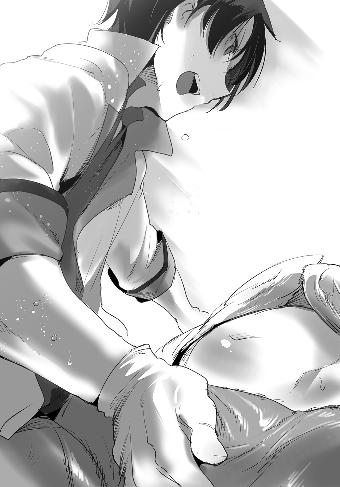
（......先生）
サーフェは、賊の斬撃をぬるりとかわす。
賊の動きは機敏であった。相手がラミアと知りつつ、短剣での隙のない斬撃を加えてくる。サーフェは平手でそれを弾き飛ばし、体勢を崩した腹部に、掌底の一撃を与えた。
たまらずくずおれた賊に対し、再び尻尾でとどめを刺す。
流れるような連撃を、グレンが見たらどう思うか。
（......先生！）
背後からの殺気。
これもまた、サーフェは先んじて察していた。相手は不意をついたつもりかもしれないが、サーフェは気づいていた。
賊の手首を素手で受け止め、そのまま尻尾を巻きつかせる。ねじり上げるようにして賊の腕を持ち上げ、そのまま床に叩きつける。
サーフェの動きは、明らかに素人のそれではなかった。
隣のスカディが、驚いたようにサーフェを見ているのがわかる。ヴェール越しでも、サーフェの動きが武人のそれであること――しかも一対多の戦いにおいて秀でていることが、見抜かれているのかもしれない。
サーフェは戦いの中で、自分が賊たちを容易く撃退できる、その理由を思い返していた。
――サーフェンティット・ネイクス。
彼女の出身であるネイクス家は、魔族の間では有名な薬師の一族であった。
ラミアは代々、薬の製法に通じていた。しかし、それは裏を返すならば、毒薬の製法に秀でているということでもあった。
薬と毒を別物だと思っている者は少なくない。だが、薬と毒は本来、その根幹を同じくするものだ。薬というのは、一歩間違えれば、容易く他者に害を与える毒物と化す。同じ薬でも、量を増やせば毒になり、またその逆もある。
麻酔に使用される薬草なども、依存性や中毒性が高いものがほとんどだ。使い方を変えるだけで、薬はたやすく毒になる。
薬に秀でているということは、毒に秀でているということ。
ネイクス家は、薬を作り、薬売りとして魔族領を渡り歩く一方――毒を用いる暗殺者として、要人殺害の任務を行っていた。
表では薬師。
裏では暗殺者。
それがネイクス家に代々続いてきた家業であった。ラミア特有の、暗所で有効な温度感知能力。音も立てずに移動する蛇腹。天井裏に潜むことも可能な、変幻自在のヘビの下半身。
ラミア特有の身体的特徴も、また暗殺に適していたのだ。
そして当然のようにサーフェンティットも、母からネイクス家特製の薬品の知識を教わる一方で、暗殺の技としての格闘技や毒の扱い方を教わってきたのだ。
戦争が酷かった時期は、ネイクス家のラミアは薬売りという隠れ蓑でもって戦場を渡り歩き、人知れず人類側の要人を暗殺したとされている。いかな大軍勢といえど、指揮官や名将を殺してしまえば、その戦力は大幅に削がれてしまう。
サーフェンティット自身は、自分に伝えられた暗殺術を活用することはほとんどなかった。彼女が子供の時に、戦争は終結してしまったからだ。
彼女がその暗殺技術を必要とされたのは、ただの一度だけ――しかも、結局用いることはなかったわけだが。
かつて、リトバイト家との人質交換の時、サーフェは表向きは人質としてリトバイトに送り込まれた。本来であれば、通商路を確立させるための、リトバイト家とネイクス家の交渉の一環だったわけだが。
実態は違う。
サーフェに与えられた役目は、交渉が失敗した時に、交渉した事実そのものをなかったことにするために、リトバイト家の人間を暗殺することであった。結果的に、交渉は進み、その暗殺術を活用することはなかったわけだが――。
サーフェは思う。
果たして、この技が必要になったとしても、自分はリトバイト家の人間を殺せただろうか。治らぬ病にかかってしまった自分に、そんなことができたか。
賊の一人が、短剣を手に、サーフェの間合いにまで踏み込んできた。
「遅い！」
サーフェは自分の尻尾を盾に、その短剣を受け止めた。自慢の白い鱗が並ぶ尻尾は、短剣程度であればその鱗で受け止めることができる。
刃は鱗に食い込み、わずかに痛みをサーフェに与えてきたが、それはせいぜい爪の間に木片が刺さった程度の疼痛だ。サーフェは意に介さず、逆に刃を止められてひるんだ賊に対して、尻尾のカウンターを振るった。
顔に打撃を受けて、賊はあっさり沈む。
「これで......片付いた......!?」
いや、まだ終わっていない。
賊は後から後から来る。このアジトに一体どれほどの賊がいたのかはわからないが、スカディとともに十人ほどを片づけても、またやってくるのだった。
が、同時にサーフェはぐらりと視界が揺れるのを感じた。
「ぇ......あ......ッ!?」
攻撃は受けていないはずだ。
しかし体に力が入らない。声をあげようとしたが、舌がしびれたように動かない。サーフェはちらりと、尾に食い込んだままの刃を見る。
その表面になにか塗られているのに、今さらながら気づいた。
（しまった......これは毒......！）
狭所における戦闘で、短剣使いが毒を塗る。
当然考え得るべき想定だった。朦朧とする意識の中でサーフェは必死に手を伸ばす。手を伸ばした先には、治療に集中しているグレンがいる。
グレン・リトバイト。
人質として彼の家に送られた時から、サーフェは彼との縁があった。
（先生......逃げて......！）
グレンはハーピーを救うために必死だ。どれだけ賊が来ようと意に介さない。
サーフェは声を上げ、グレンに呼びかけようとするが、自分の無駄に長いだけの舌は一向に動いてくれない。グレンに警告することもかなわない。
毒に脳まで侵されているのだろうか。
サーフェは――こんな時であっても、治療に集中して真剣な表情をするグレンのことを、かっこいいと思ってしまうのだった。
色ぼけた自分の脳は、意識を失う寸前まで、グレンの姿を網膜にとらえていた。
医者にも治せない病が二つある。
一つは死に至る病。そしてもう一つは、恋による熱病だ。
いかな名医といえど、恋の病を治したという記録はない。グレンによって高熱を発するサーフェの病は、グレンであっても治すことはできないと、サーフェはよく知っていた。
治してほしいとも、思わなかった。
エピローグ 竜の街のお医者さん
ぱちりと、目が開いた。
ヘビの目だ。多くの人はヘビの目を、瞳孔が縦に伸びたぎょろりとした目を連想するが、それは種による。蛇の種類によっては、つぶらな丸い瞳孔を持っている。
そんな可愛らしい深紅の瞳が、まっすぐにグレンを見ていた。
「......せん、せぃ......？」
「おはようサーフェ。ヒヤヒヤしたよ」
グレンは息を吐く。
毛布の中でとぐろを巻いているのがわかる。無意識に体を温めていたのは、おそらく毒によって低下した体温を補おうとしたためだろう。
薬物、毒物に造詣の深いサーフェが、まさか毒にやられるとはグレンも思わなかった。
「せんせ......わたし......どく、が」
「そうだね。マンドラゴラ由来の麻痺毒だった。人間だと一瞬で呼吸困難、窒息の上で死に至る強烈な毒。量は少なかったみたいだけど、もしも賊が大量に持っていたら警邏隊も危なかっただろうね。賊にとっても最後の切り札だったのかな」
「わたし、は......」
「ラミアに効果はないよ。せいぜい眠るくらい」
サーフェが驚いたように目を開く。
「せんせ......知って？」
すこしだけ呂律が回ってきたサーフェが、そう言った。
「でなきゃ、サーフェを無視して治療してたりしないよ」
「気づいて、らしたのですか......」
「周りは見てるつもりだからね」
ハーピーの腹部をマッサージして、どうにか産卵をさせていたグレン。もちろん賊の闖入にも、それを防ぐためにサーフェやスカディが奮闘していたこともわかっていた。しかし、産卵を促す治療において、いつ卵管が破裂するか知れなかった。
「ただ見ただけで毒の種類まで......？」
「あの傭兵たちは、魔族と戦うことを想定していなかったようだし、ならば毒も人間用でしょ。多くの毒に耐性のあるラミアには効きづらいかなって」
「ああ......」
「それに、賊が使うなら麻痺の類かなと思ってね。実際、サーフェは毒を受けてすぐに寝てしまったけど......これはむしろ安心だと思ったよ。痙攣なんか起こしてたら心配だったけど、そんな症状はなかったようだし」
ハーピーの治療をしながら、サーフェの様子をとらえ、かつ全体の状況まで把握し患者の優先順位をつけたのだ。グレンとしても必死ではあったが――。
「ハーピーの子も、無事に産卵できたよ。卵管も問題ないと思う」
「......そうでしたか」
「スカディさんが、議会の部屋を貸してくれたよ。診療所はぼろぼろだしね」
グレンはため息をつく。診療所を開ける前に、賊の侵入によって荒らされてしまった診療所を片づけなくてはならないだろう。
手伝い妖精たちの手を借りられたらいいのだが、怖い思いをした妖精たちは、診療所が元に戻るまで近寄らないかもしれない。用心深い種族なのだ。
スカディの用意してくれた部屋は、とても静かだった。グレンとサーフェの会話くらいしか聞こえない。別室には、助けられたハーピーたちが休んでいるはずだった。今夜くらいはゆっくり休んで、解放された喜びに浸っていてほしいものだ。
「では......先生は、私とハーピーさんを天秤にかけて、後者を優先したのですね」
「命の危機だったからね。そんな言い方しないでよ」
「わかっています、けど」
毛布を頭からかぶって、拗ねるサーフェだった。毛布からはみ出した尻尾を立てて、ゆらゆら揺らしている。
「では......見られてしまいましたね」
「ん？ なにを？」
「私の、戦っている姿を......」
「うん。まあね」
グレンは頷いた。サーフェは拗ねたままで、グレンの顔を見ようともしない。
サーフェは毛布の下で、ぼそぼそと告げる。
「先生には黙っておりましたが、私は、暗殺術をたしなんでおります」
「そうみたいだね」
「かつて、先生と初めて会った時......リトバイト家にお世話になった時も、暗殺の任を帯びていました。通商路を開拓する交渉が上手くいかなかったときは、リトバイトの当主......先生の御父上を殺害するという任務を......子供のほうが、警戒されづらいですから......」
グレンは息を吐いた。
サーフェがグレンの家に来た時のことは、まだ覚えている。最初は気恥ずかしかったが、グレンにとって最初に出会った魔族が、サーフェだ。
ともにお互いの使う言葉を教えあったり、魔族の本を貸してもらったりと、随分といろいろな話をしていた。もっとも、グレンよりも、グレンの妹のほうがサーフェには懐いていたようだったが――ともかく子供同士の交流は深いものがあった。
「隠していて申し訳ありません......アカデミーで再会した時から、いつか言わねばとは思っていたのですが......」
「うん」
「私が......私の一族が暗殺を生業にしていたなどと知られると、私は......グレン先生に嫌われてしまうかもしれないと思い......」
「うん。知ってたよ」
「だから私は――――はい？」
毛布をばっとはねのけて、赤い瞳がグレンを射抜いた。
くりくりの瞳がとぼけたような表情になっている。こんな顔のサーフェを見るのは久しぶりかもしれない。
「今、なんと......」
「知ってたよ。っていうか、父も知ってたよ。ネイクス家の裏稼業が暗殺だっていうことは」
「な、何故......!? 魔族の中でも知る者は少ないのに......」
「徹底的に調べたんだよ。毒の牙持つネイクスの薬師。古い文献にはちらちらとね。父さん、ネイクスと交渉するとき、魔族の古い文献を取り寄せまくってたから」
「わ、私の一大告白だったのに......！」
サーフェは隠していたつもりだろうが、実はグレンにはバレていた。
なにしろ薬への造詣が尋常ではない。薬と毒が根幹を同じくするものだということは、医療に携わるグレンにもよくわかっている。毒を作るのならば、当然扱いだって心得ていなくてはならないだろう。
暗殺や毒殺という用途に行き着くのは至極当然だ。
「ついでに言うと、リトバイトも似たようなことを考えてた」
「は......？」
「ウチで熱病に罹ったことがあったでしょ。あれ、ウチの使用人が勝手に、サーフェの食べ物に毒を仕込んだんだ。ラミアに効く毒じゃなかったから熱で済んだけど......サーフェが病気になれば、ネイクス家との交渉がスムーズに進むかもしれないと」
「た、企みは同じだった......というわけですね」
サーフェは啞然としていた。
お互いに考えることは一緒なのだ。味方の目を欺き、敵と通じていた両家なのだから、これくらいの陰謀が渦巻いてしかるべきなのかもしれない。
ただし――幼いグレンは納得がいかなかった。
熱を出したサーフェにつきっきりで看病し、かつ魔族の文献を子供ながらに調べ上げ、使われた毒の種類と、それに有効な薬草を調べだしてはサーフェに与えた。あの時は不眠不休でサーフェについていたのだが、サーフェ自身は熱で朦朧としていたから覚えてはいまい。
それに、グレンは使用人が勝手にしたことだと知らなかった。父か兄か、ともかくネイクス家と交渉していた身内が、サーフェを殺すつもりで毒を盛ってしまったのではないか――という疑心暗鬼に陥っていた。
思い返してみれば。
その時の治療が、グレンの初めての医療だったということか。そうして、医者になってしまったのも、あの時覚えた病に対する怒りと、治療に対する情熱の結果だ。
「もう......もう！ なんなんですこれ、グレン先生には御見通しでしたのね！」
「いや、察しがついていた程度だけどね」
グレンは苦笑する。
リトバイト家に企みがあったのだから、当然サーフェの側にもあってしかるべき、という程度の発想だ。なにもかも理解していたわけではない。
「でも――サーフェの暗殺術も、ちゃんと役に立ったじゃないか。サーフェがいなかったら、あのハーピーの子たちを助けられなかったからね。いつも感謝してる、本当に」
グレンの言葉に、サーフェの頰が紅潮する。我ながら少し恥ずかしいセリフだったかな――と思ったのも、つかの間。
蛇の尾が、グレンには捉えられない速さでもって、グレンの両腕を拘束した。そのまま、ラミアの強い力でもってベッドまで引きずり込まれる。
「ちょ、ちょっとサーフェ！」
「先生！ 先生、もう私そんなこと言われたら......抑えきれません！」
「好意は嬉しいけど強引すぎるよ！」
「もともと私、そういう性格ですから！」
サーフェは開き直っていた。これはマズい、とグレンは思う。
「マズいよサーフェ！ ここ、議会だし！ 万が一でも噂が広がって、クトゥリフ先生に知られたら、診療所を追い出されちゃうよ」
「もう知ったことじゃありません......！ ふ、ふふふ、そうよ、診療所にいられなくなったら、二人でずっと逃げましょう。リンドを出て、どこまでも......フフフ......！」
「暴走しすぎだって......」
ためらいなく服を脱ぐサーフェ。
彼女の遮光インナーは、体のラインをくっきりと浮かび上がらせていた。
明かりはランタンのぼうとした光のみ。サーフェは妖しく光る白い蛇の尾を、グレンに巻きつかせてくる。
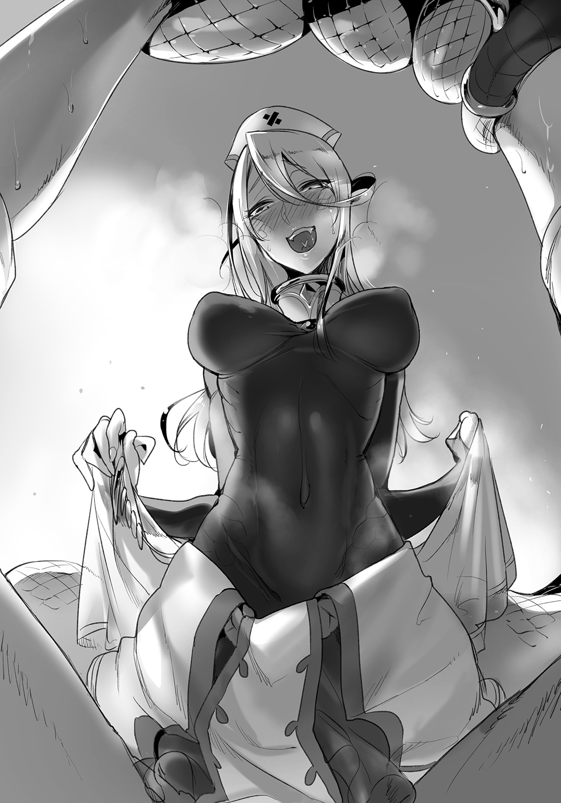
力では、圧倒的にサーフェのほうが上だ。
サーフェが本気で愛情を示したいと思ったのならば、グレンに為す術はない。
「あのね、サーフェ」
力で敵わないのだから、グレンは言葉で説得するしかない。グレンの体に尾を巻きつけ、のしかかるように上に乗るサーフェを、グレンはまっすぐ見て。
「僕は、街を出ていきたくないよ」
そうグレンは告げる。
「まだここで、医者をしなきゃいけないから。この街には、治療が必要な魔族がまだまだ大勢いるでしょ」
「そう、そうですね――では、クトゥリフ様にバレないようにイチャイチャいたしましょう！」
「そういうことじゃない！」
まだ毒が残っているのか、サーフェの目は焦点が合っていない。
いや、毒のせいではないのか。ともあれ彼女の不調というか、妙な暴走ぶりはとどまるところを知らなかった。
ここまで絡んでくるのは、酒を飲んだ時くらいだ。
「大丈夫、あのタコ女は近眼ですから絶対にバレません！」
「解釈が都合よすぎる！」
いよいよ貞操の危機かというところだったが――。
サーフェの頭がぐらりと倒れた。そのまましびれたように動かなくなる。やはり毒が抜けきっていないらしい。
「ほら、言わんこっちゃないでしょ」
目を回したようにベッドに倒れ込むサーフェだ。自分を拘束する力が緩んだところで、グレンはすっとベッドから抜け出した。
街を追い出されるような事態にならなくてなによりだ。その気になればクトゥリフは診療所を取り壊すことくらいはするかもしれない。
グレンとしても、魔族の多いこの街は離れがたいものがあるのだった。医者が必要なこの街で、魔族を診れる人材が圧倒的に不足しているのだから。
「今日は大人しくしていてよ。ずっと横にいるからさ」
グレンの言葉に、サーフェは頷いてくれる。
「せんせぃ......すみません」
「なんで謝るのさ」
サーフェの顔は、明らかに赤かった、毛布を深くかぶって顔を隠してしまうのも、照れ隠しからだろうか。
「私はいつも、力不足で......」
「そんなことないよ。サーフェがいてくれて助かってる」
「先生......？ で、ではその、お願いがあるのですけれど......」
毛布をかぶった中から、サーフェがおずおずと切り出した。
「尻尾を握っていてもらえますか......眠るまでの間でいいので」
遠慮がちに差し出された蛇の尻尾。
「もちろんいいよ」
先ほどまでの強引さはどこにもない。グレンが優しく尻尾を握ると、冷ややかな鱗の感触が手に心地よかった。
グレンは適当なとこに座って、サーフェの尻尾の感触を楽しんでいるのだった。
「手が温かくて......とても安心しますね。グレン」
サーフェは、ほっと一息ついたようにそう告げた。
その呼び方は、かつて同じ屋敷で暮らしていた時の呼び方で――グレンにとっては懐かしい、幼馴染みからの呼びかけなのであった。
診療所は、どうにか立て直すことができた。
懸念していた妖精たちが、早々に戻ってきてくれたのが助かった。散り散りになった妖精たちを確保するのは難しいと思っていたのだが、すぐに戻ってきてくれたのはグレンの人徳というものだろうか。
間を空けずに、診療を再開できたことは喜ばしいことだった。そして、その最初の患者であるが――。
「何度もすまんな、グレン医師」
「いえ、仕事ですから」
左腕を切り落とされた苦無であった。
以前のような路上での縫合ではなく、道具も設備もそろった中で、グレンはまた丁寧に苦無の腕を縫い付けていた。賊の頭領の持つ武器はよほど切れ味が良かったらしく、断面は非常に滑らかであった。
おかげでさくさくと縫合が進む。世間話さえする余裕があった。
「ハーピーたちはその後、どうなりましたか？」
「うむ。故郷のある者は、そちらに送らせている」
苦無は事務的に告げる。医者嫌いの彼女が、自ら進んで縫合を受けに来てくれたのだから、心変わりがあったのは間違いないようだった。
「ティサリアが協力的でな。ハーピーたちを故郷に返すのに、スキュテイアー運送が力を貸してくれている。帰れる者は安心して帰路についたろう」
「では......帰れない者もいると？」
「ああ。故郷のわからぬ者。あるいは、故郷に戻っても生活できる見込みがない者、戻りたくないという者もいてな......そちらは、ヴィヴル山脈のハーピー集落に引き取ってもらうことになった。ハーピーは集団生活を営むし、じき慣れるだろう」
どうやら、捕らわれたハーピーたちの行き先は目途が立ったようだ。ふと横を見ると、サーフェもにこにことしている。
危険を冒してまで助けたハーピーたちなのだから、その後も無事に過ごしてくれるのならば、グレンとしても安心である。
「お前が必死で治療してくれたハーピーも、集落で生活するそうだ。どうも孤児だったようでな。集落の村長は立派な人物だから、心配するようなことはないだろう」
「ありがとうございます」
「山登りは骨だが、たまには様子を見に行ってやるといい」
もちろん、医者にとっては患者の予後観察は重要である。
遠からずハーピーの集落にはお邪魔することになるだろう、と思うグレンであった。集落には医者がいないはずだから、定期健診の意味合いも兼ねることになる。
「それで、捕えた賊どもだが」
「ああ......はい」
「現在は、水路街での労役に従事させている。そもそも水路街の都市計画がずさんだったことが、今回の事件の発端なわけでな。二度と賊などに利用されぬよう、賊ら自身に改装工事をやらせている」
「それは――」
どうなのだろうか。
グレンは不安がぬぐえない。脱走、あるいは素行不良な行動。もとは賊だった者たちが、大人しく工事などに従事してくれるものだろうか。
「なに、反逆のための武器もない。元々は戦争終結によって仕事にあぶれた者たちだ。仕事を与えればちゃんと働くさ。存外に真面目な連中だぞ。頭領から率先して働いているしな」
「改心した......ということですか？」
一度こてんぱんにやられて、懲りたのだろうか。
それとも、襲撃の際において、頭領のほうに心境が変化するなにかがあったのだろうか。グレンには想像することしかできないが。
「なに、現場監督は私だ。縫合を終えたらすぐに水路街に戻る。万が一脱走するようなヤツがいたら......腕の見せ所だ」
「お、お疲れ様です」
もっとも、苦無の見せるべき腕は、現在グレンが縫合しているわけだが。
ともあれ、奴隷商を巡る一連の騒動は、一件落着ということでいいらしい。グレンはたまたま同道しただけだったが、サーフェの助けもあってどうにか窮地を切り抜けることができた。
賊たちも、苦無が見張っている状況で危険な真似はしないだろう。頭領がもっとも強いのだろうが、彼は苦無との一騎打ちにあえなく敗れているのだから。
グレンの縫合を受けて調子がいいらしい苦無は、最近ますます元気そうだ。死体なのに。
「賊どもからハーピーの卵を買い付けていた不埒者は、今は警邏隊が追いかけている。どこまで足取りを追えるかわからんが、竜闘女様は可能な限りの制裁を加えたいようだ」
「魔族の立場からでしたら、人間の糾弾も可能ですものね」
サーフェが口を挟む。
「ですが、くれぐれもそれをきっかけに、戦争の再来などは......」
「もちろんだ。竜闘女様もそんなつもりはない」
「なら、よろしいのですけれど」
サーフェンティットの顔には、もう戦争などしたくないと書いてある。
グレンも賛成だった。サーフェの暗殺術が役に立つような世の中など、来ないほうがいい。彼女の知識と技術は、医療にこそ活かされるべきなのだ。
だからこそ、グレンにとっても診療所は重要な場所で。
サーフェが平和に、暗殺者とならずに済むような居場所を守ることこそが、グレンの役目なのだった。
からから、と鐘が鳴る。
新しく取り付けた、来客を示すベルである。誰か来たのかな、とグレンは首をかしげると、診療所にずかずかと入ってくる大柄な影。
「頼も――――――ッ！ ですわ！」
「げ、人馬姫......」
サーフェは露骨に顔をしかめる。
入ってきたのは、いつでも威風堂々なティサリア・スキュテイアーであった。よくよく見れば、その背中にはルララまで乗せている。
ルララは水かきのある手を振った。
「やっほー、グレン先生」
「どうしたんですか、お二人とも」
「サーフェお姉ちゃんが怪我をしたって聞いて......はい、水路街のお土産」
「まあ！」
ルララが持ってきてくれたのは、きらきらとしたガラスのアクセサリーや、貝殻であった。どれもサーフェが水路街で目移りしていたものばかりだ。
「まあまあまあ！ 嬉しいわルララさん、ありがとう！」
「もう怪我はいいの？」
「先生の治療でバッチリですよ！」
サーフェは長い体を伸ばして、ルララに抱きつく。ルララはくすぐったそうに、顔をほころばせていた。
「わたくしもお土産ですわよー！ はい、リンド名物の竜団子」
「ありがとうございますティサリアさん。ではお帰りはあちらです」
「さあて、グレン先生！ 今日こそお見合いの日取りを決めたいと思いますわ！ 両親に紹介する機会も作りませんと！」
「だから無期限延期だと言ったはずです！」
「騒がしいな......」
苦無が呆れたように告げる。
「面目ない」
「構わんさ。元気な証拠だ。診療所だからといって、顔色の悪い者ばかり集っても仕方あるまい？」
もっとも顔色が悪い苦無がそう言うものだから、グレンも返事が思いつかない。
相変わらずサーフェとティサリアは喧嘩ばかりだが、二人ともどこか楽しそうと思うのはグレンだけだろうか。ルララは二人に挟まれて、困ったように笑みを浮かべている。
「悪漢を退けたわたくしの活躍、存分に聞いていただきますわよ！」
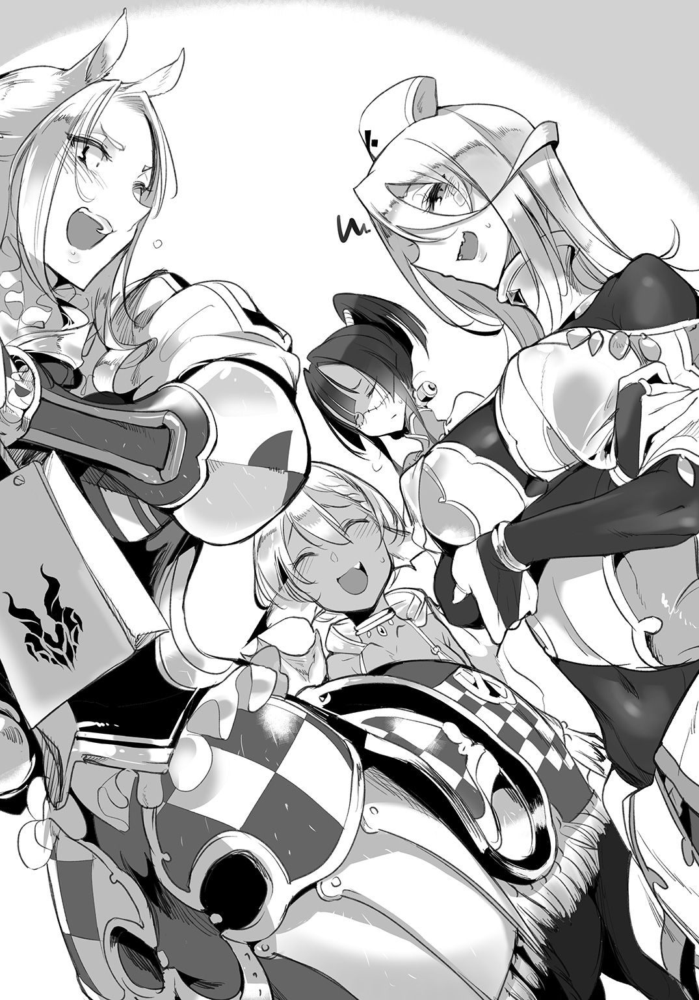
「自慢話に来たんですか、あなた......」
「当然！ わたくしの話を聞いてもらい、先生には褒めてもらいませんと！」
見舞いに来たのかなんなのかはわからないが、ティサリアは今日も絶好調であった。
「苦無さん、終わりましたよ」
グレンは素早く作業を終えてしまう。といっても、もちろん雑な縫合ではない。しっかりとつなげた腕を苦無は見て、手を握ったり開いたりしている。
「いい仕事だ。助かる」
「恐縮です――さあ、サーフェ。終わったよ」
まだティサリアとにらみ合ってるサーフェンティットだが、グレンの号令ですぐに顔を上げた。やっぱりどこか機嫌が良さそうだ。
「次の患者さんは」
「はい、ティサリア・スキュテイアーさん。頭の治療でいらっしゃいます」
「失礼千万にもほどがありますのよ!?」
「はいはい、冗談はほどほどにね」
まだ診療所は開けたばかりだが、ほどなくして常連、急患を問わず、患者が集まることになるだろう。
魔族と人間が共存する街。けれど魔族を診る病院は少なく、グレンの仕事は今日もとどまることはない。
治療を終えた苦無は、邪魔になるからとティサリアを連れていった。ティサリアはまだグレンと話したいことがあるようだったが、正直グレンもこれからの多忙を考えると付き合うことはできそうにない。
ルララが快活に手を振って、三人とも診療所を出て行った。
「まったく......騒々しいったら」
「いい友達でしょ、サーフェ」
「知りません」
言いながら、サーフェはやはりどこか楽しそうだ。
魔族専門の診療所。小さな町医者は、腕まくりをして息を吐いた。
「今日も忙しくなるかな――頑張ろう、サーフェ」
「はい先生」
助手のラミアは、いつも以上に敬意を表して、医者に頭を下げるのだった。
ここは竜の名を冠する街。リンド・ヴルム。
人間でありながら魔族を診る、グレン・リトバイトは、今日もやはり激務である。彼の武器は剣でも槍でもなく、ただ自らの医療知識と技術。
魔族たちの健康を守るために、グレン医師は今日も戦いをこなすのだった。
あ と が き
どうも、折口良乃です。
ダッシュエックス文庫では初めてになります。皆様どうぞよろしくお願いいたします。
やっとモン娘ものを書けたー！
今まで本は二十冊近く書いて参りましたが、電撃文庫『シスターサキュバスは懺悔しない』あたりから、モン娘もの、人外娘ものをやりたくて仕方ない――といった状況になりまして。
ダッシュエックスのほうにご縁がありまして、めでたく刊行と相成りました。楽しんでいただけたのならば幸いでございます。
ちなみにこの本はですね......。
『モンスター娘のいる日常』アニメを見ながらプロットを書き。
『モンスター娘のいる日常』キャラソンを聞きながら本文を執筆し。
『モンスター娘のいる日常』ラジオＣＤを聞きながら修正し。
『モンスター娘のいる日常オンライン』をプレイしながらイラストをチェックし。
『モン娘は～れむ』というソシャゲをプレイしながらこのあとがきを書いております。
うわあい、モン娘尽くしだね！
モン娘という言葉は新しいものです。
しかし概念、萌え属性自体は以前からありました。男ならば誰しも一度、ＲＰＧで敵として出てくる女モンスターにドキッとしたことがあるのではないでしょうか？ 女性型敵モンスターなど、作品によってはやたらセクシーで倒すのを躊躇ってしまいますよね。
モン娘という新しい言葉によって、概念が定義され、普遍的に萌えが広まっていきました。『モンスター娘のいる日常』のアニメ化などはその最たるものだと思います。ツンデレもそうですが、概念は言葉を与えられることによってその形を固定化するのです。
まだまだ新しい萌えだと思います。
しかし、ラミアやマーメイドといった存在は、神話の時代からのものです。これは、人間の根源的な部分に、そうしたモン娘的なものに惹かれてしまう本能のようなものがある証ではないでしょうか。
これからも紳士的に、かつ本能的に、モン娘を愛でていきたいと思います。
それでは謝辞を。
担当編集の日比生さん。迅速かつ的確かつ優秀なお仕事ぶりで、今回大変に楽をさせていただきました。本当にありがとうございます。「モン娘関係は折口さんの好きに書いてください」と言ってくださり大変ありがたかったです。
好き放題モン娘書きました。......本当に良かったの？
イラスト描いてくださったＺトンさん！ 引き受けてくださった上、タペストリーの絵柄まで書いてくださり本当にありがとうございます。イラストを早い段階で上げてもらったおかげで、「キャラのラフを見ながら本文を執筆する」というほぼ初めての経験をさせていただきました。おかげでより深くキャラクターに根差した描写ができたと思います。
タペストリーは部屋に飾ります。おっぱいおっぱい！
そして帯コメントをくださったオカヤド先生！ ありがとうございます！ まさかオカヤド先生にコメントをいただけるとは......これを契機に精進し、やがて世界をモン娘でつなげられたらと思っております。
あ、僕はどちらかというとモン娘に注射したいです先生。
またいつもつるんでくださるモン娘好き作家の皆様方。ＬＩＮＥでの私の病的な語りに付き合ってくださりありがとうございます。これからも二言目にはモン娘になると思いますが、どうか今後ともよろしくお願いいたします。
そのほか、何気なくいつも格好のネタをくれる家族、細かいところまできっちり指摘をくださった校正さま、そして誰よりも読んでくださった皆様へ、最大限の感謝を。
あ、続刊があるならメガネ巨乳モン娘がでる（予定）です。
よろしくです。
折 口 良 乃
著者紹介
折口良乃 おりぐち よしの
よく「人外しか愛せないんですか？」と聞かれますが誤解です。
モン娘と同じくらい人間キャラも好きです。両者は平等です。
でも世の中のコンテンツは人間がメインで、モン娘のコンテンツが不平等なくらい少ないので、せめて人間とモン娘のコンテンツ数が１：１くらいになればいいなと思ってこの本を書きました。
illustration
Ｚトン ぜっとん
Ｚトンと申します。異種族性愛者を増やすことで間接的に人類を破滅に誘い込む仕事をしています。
爬虫類系人外娘さんは脱皮に産卵、総××孔などギミックが多くて素晴らしいので終末の日は近いなぁと思いました。
ダッシュエックス文庫DIGITAL
モンスター娘のお医者さん
著者 折口良乃
© YOSHINO ORIGUCHI 2016
２０１６年７月31日発行
この電子書籍は、ダッシュエックス文庫「モンスター娘のお医者さん」
２０１６年６月29日発行の第１刷を底本としています。
発行者 鈴木晴彦
発行所 株式会社 集英社
〒１０１－８０５０
東京都千代田区一ツ橋２丁目５番10号
０３－３２３０－６０８０（読者係）
制作所 株式会社ＩＣＥ
本作品の全部また一部を無断で複製、転載、改竄、インターネット上に掲載すること、および有償無償に関わらず、本データを第三者に譲渡することを禁じます。なお個人利用の目的であっても、コピーガードを解除しての複製は、法律で禁じられています。